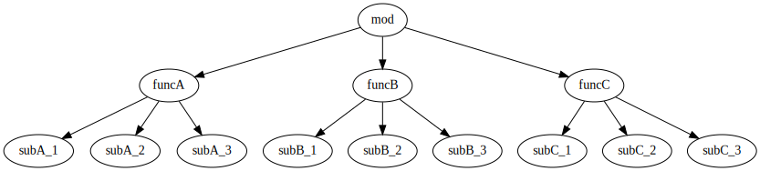

全文検索用結合ファイル
全文検索し易いように、LuneScript 解説ドキュメントを結合したものです。
LuneScript 入門リファレンス
トランスコンパイラ LuneScript で Lua の開発をもっと楽に!!
TypeScriptからLuaに変換する TypeScriptToLua があります。
<https://typescripttolua.github.io/>
LuneScript の今後については以下を参照してください。
<https://ifritjp.github.io/blog2/public/posts/2021/2021-05-26-lunescript-plan/>
Lua は非常にコンパクトな言語でありながら、高い潜在能力を持つ言語です。
プログラムに組み込まれる言語としては、 最も使い易い言語の一つと言っても良いと思います。
ただ「プログラムに組み込まれる言語としては使い易い」とはいえ、 イマドキの言語と比べると、いろいろと気になるところがあるのも事実です。
一方で、Lua をイマドキの言語に近づけるための機能進化は、 「コンパクト」という Lua の大きな特徴の一つとトレードオフになる可能性があります。
そこで、 Lua 自体には手を加えずに、 Lua の気になる箇所をカバー出来るトランスコンパイラ LuneScript を紹介します。
LuneScript とは
LuneScript とは、前述の通り Lua の気になる点をカバーする言語で、 LuneScript で開発したコードを Lua のコードに変換することが可能な トランスコンパイラです。
LuneScript は、次の特徴を持ちます。
- NULL 安全 (null safety)。
- 静的型付け言語であるため、型チェックにより単純なミスをコンパイル時に発見可能。
- 型推論により、型宣言の手間を最小化。
- generics により、型情報を保ったままの処理が可能。
- 言語の文法としてクラス定義を対応。
- パターンマッチ対応。 (match)
- 遅延ロードによるロード時間短縮。
- 構造化データと非構造化データとの相互変換。 (Mapping)
- マクロ により、ポリモーフィズム等の動的処理に頼らないデザインを実現可能。
- 変数の初期化漏れを検知
- Lua と go へのトランスコンパイル。
- JSON と互換なデータ表現をサポート。
- トランスコンパイルした Lua コードは、外部ライブラリを前提とせずに単体で動作可能。
- トランスコンパイルした Lua コードは、LuneScript で書いた処理そのままが出力されるので、 性能劣化がない。
- 既存の Lua の外部モジュールを LuneScript から利用可能。
-
LuneScript は Lua 上で動作し、Lua 標準モジュール以外を必要としないため、導入が簡単。
- go 版 LuneScript を利用すると、トランスコンパイル時間を 1/20 に短縮可能。
- LuneScript から変換した Lua モジュールを、 他の Lua モジュールから利用可能。
-
Lua5.1 〜 5.4 をサポート。
- Lua5.1 については次を参照してください。
- #crosscompile
- LuneScript はセルフホスティングで開発している。
- emacs でのコード補完に対応
-
lnstags によるタグジャンプに対応
- glue コードの自動生成に対応
- Lua と C の syntax を基調としているため、学習コストが低い。
LuneScript の使用方法
LuneScript は github で開発しています。
<https://github.com/ifritJP/LuneScript>
導入方法は次を参照してください。
-
導入編
コマンド
LuneScript を導入すると、lnsc コマンドがインストールされます。
lnsc コマンドの使用方法については、次の記事を参考にしてください。
-
Hello world
Lua バージョン間のクロスコンパイル
LuneScript は Lua のバージョン間クロスコンパイルをサポートします。 次の記事を参考にしてください。
-
Lua バージョン間のクロスコンパイル
LuneScript の仕様
ここでは LuneScript の仕様について説明します。
コメント
コメントは C++ スタイルを採用。
一行コメント // 、 複数行コメント /* */ を指定可能。
// @lnsFront: skip
// 行末までコメント
/* ここから〜
ここまでコメント*/演算子
原則的に、演算子 は Lua と同じものを利用する。
Lua5.3 の //(切り捨て除算) は、LuneScript では 1 行コメントとなるので注意すること。
なお LuneScript では、 int 同士の / は自動的に切り捨て除算となる。
変数宣言
LuneScript の変数については次の記事を参考にしてください。
-
変数 編
関数宣言
LuneScript の関数については、次を参考にしてください。
-
関数 編
nilable
LuneScript は nil 安全 (NULL 安全) な言語です。
LuneScript の nil 安全を実現する nilable については、 次を参考にしてください。
-
nilable 編
クラス
LuneScript はオブジェクト指向プログラミングのためのクラスをサポートします。
LuneScript のクラスは、次の制約を持ちます。
- 多重継承はサポートしない。
generics はサポートしない。-
全てがオーバーライド可能なメソッドとなる。
- オーバーライドの抑制はできない。
-
継承間で引数の異なる同名メソッドは定義できない。
- ただし、コンストラクタは例外で同じ名前( __init )。
次の記事を参考にしてください。
-
クラス 基本 編
-
accessor 編
-
クラス 継承 編
-
クラス advertise 編
-
クラス override 編
-
インタフェース 編
プロトタイプ宣言
LuneScript は、スクリプトの上から順に解析する。
スクリプトで参照するシンボルは、事前に定義されている必要がある。 例えばクラス TEST 型の変数を宣言するには、事前にクラス TEST を定義する必要がある。
また、相互に参照するクラスを定義するには、 どちらかをプロトタイプ宣言する必要がある。
次は、 ClassA, ClassB がそれぞれを相互参照する時の例である。
// @lnsFront: ok
pub class Super {
}
pub proto class ClassB extend Super;
pub class ClassA {
let val: ClassB;
}
pub class ClassB extend Super{
let val: ClassA;
}proto は上記のように宣言する。
プロトタイプ宣言と実際の定義において、 pub や extend など同じものを宣言しなければならない。
Mapping
LuneScript のクラスインスタンスは、 Map オブジェクトとの相互変換が可能である。
これを Mapping と呼ぶ。
Mapping については次を参考にしてください。
-
mapping 編
Generics
nil 条件演算子
nilable の値を簡単に扱う方法として、 nil 条件演算子をサポートしています。
-
nil 条件演算子 編
ビルド
LuneScript を使用したプロジェクトをビルドする方法については、次を参考にしてください。
-
ビルド 編
_lune.lua モジュール
前述している通り LuneScript で Lua へトランスコンパイルしたファイルは、 Lua コマンドでそのまま実行できます。 この時、外部モジュールを必要としません。
これは、トランスコンパイルした Lua コード内に、 処理に必要なコードを全て含めていることを示します。
例えば次の処理コードをトランスコンパイルすると、
// @lnsFront: ok
fn func( val:int! ):int {
return 1 + unwrap val default 0;
}Lua コードは次のようにだいぶ長くなります。
--mini.lns
local _moduleObj = {}
local __mod__ = 'mini'
if not _ENV._lune then
_lune = {}
end
function _lune.unwrap( val )
if val == nil then
__luneScript:error( 'unwrap val is nil' )
end
return val
end
function _lune.unwrapDefault( val, defval )
if val == nil then
return defval
end
return val
end
local function func( val )
return 1 + _lune.unwrapDefault( val, 0)
end
return _moduleObjこの 4 〜 18 行目が unwrap に必要な処理となります。 なお、このコードは全ての Lua ファイルに出力されます。
このコード自体は共通処理であるため、 トランスコンパイルする際に -r オプションを指定することで、 別モジュールとして require して共通処理をまとめることができます。
具体的には次のように -r オプションを指定します。
$ lua lune/base/base.lua -r src.lns saveこの -r オプションを指定した場合、上記のコードは次のように変換され、 かなりスッキリします。
--mini.lns
local _moduleObj = {}
local __mod__ = 'mini'
_lune = require( "lune.base._lune" )
local function func( val )
return 1 + _lune.unwrapDefault( val, 0)
end
return _moduleObjなお、require( "lune.base._lune" ) が挿入されるため、 このモジュールがロード出来るようにセットしておく必要があります。 トランスコンパイラが動作する環境であれば意識する必要はありませんが、 変換後の Lua ソースをどこか別の環境で実行するような場合は注意が必要です。
マクロ
LuneScript は簡易的なマクロを採用する。
マクロの意義
マクロは通常の関数と比べて幾つかの制限がある。 またマクロで行なえる処理は、オブジェクト指向を駆使することで実現できることが多い。
では、マクロを使う意義は何か？
それは、「マクロを使うことで静的に動作が確定する」ことである。
同じ処理をオブジェクト指向で実現した場合、動的な処理となってしまう。 一方、マクロで実現すれば、静的な処理となる。
これの何が嬉しいのか？
それは、静的型付け言語が動的型付け言語よりも優れている点と同じである。
静的に決まる情報を静的に処理することで、静的に解析できる。
例えば、オブジェクト指向の関数オーバーライドの大部分は、 マクロを利用することで静的に解決することができる。 動的な関数オーバーライドではなく、静的な関数呼び出しにすることで、 ソースコードを追い易くなる。
無闇にマクロを多用するは良くないが、 安易に関数オーバーライドなどの動的処理にするのも理想ではない。
動的処理とマクロは適宜使い分けが必要である。
マクロ定義
マクロ定義については次の記事を参考にしてください。
-
マクロ 編
補足
補足記事は、ここにリンクを追加していきます。
-
Lua のトランスコンパイラ LuneScript の紹介 2
- subfile, module, nil 条件演算子 の紹介
- #introduce2
-
Lua のトランスコンパイラ LuneScript のイマドキな開発環境でもっと楽しよう
- 補完、syntax チェック、subfile の検索
- #completion
このページからリンクしていない記事は、サイドバーから辿ってください。
導入編
今回は、 LuneScript の導入方法についての紹介です。
LuneScript on Web Browser
LuneScript の動作確認用に、Web ブラウザ上で動作する LuneScript 環境を用意しています。
また、以降のサンプルソースには Run ボタンを持つケースがあります。 そのボタンを押すことで、そのサンプルソースを実行できます。 そして、そのソースを修正して実行することもできます。
Run ボタンを押してからサンプルを実行するまでに、 初回は数秒から 10 秒程度時間がかかります (時間はネットワーク環境、端末スペックに依存します)。 これは、ブラウザ上に Lua VM と、LuneScript コンパイラをロードするためです。
一旦ロードした後に再度実行する場合、 このロード処理が行なわれないため瞬時に実行できます。
LuneScript の導入方法
LuneScript は、次の 2 つの提供方法を用意しています。
- 単独で実行可能なシングルバイナリの go バージョン
- Lua のスクリプトとして動作する Lua バージョン
go バージョン
git に登録しているソースから LuneScript を ビルドするための Dockerfile を用意しています。
https://github.com/ifritJP/LuneScript/tree/master/src/test/docker/compose
- linux/build/Dockerfile
- alpine/build/Dockerfile
次を実行すると、LuneScript/src に Linux 用の lnsc が生成されます。
$ git clone --depth 1 https://github.com/ifritJP/LuneScript $ cd LuneScript/src $ sudo docker build -t linux_lns test/docker/compose/linux/build $ sudo docker run --rm -v $PWD:/local linux_lns cp /usr/bin/lnsc /local/lnsc
lnsc に PATH を通してください。
なお、 proxy 環境下では docker build 時に以下のように proxy を指定してください。
$ sudo docker build -t linux_lns test/docker/compose/linux/build --build-arg PROXY=http://proxy.hoge/
go 版の LuneScript 導入は以上です。
Lua バージョン
Lun 版の LuneScript は、 go 版と比べてトランスコンパイル時間が非常に長いです。 go 版を利用することを推奨します。
LuneScript は Lua のトランスコンパイラです。 また、LuneScript 自体も Lua のスクリプトとして動作します。
よって、 Lua 版の LuneScript には Lua の実行環境が必要です。
なお、 LuneScript が対応している Lua のバージョンは 5.1, 5.2, 5.3, 5.4 です。
ただし Lua 5.1 で利用する場合、幾つかの制限があります。 具体的な制限の内容については、別の記事で説明します。
追記: 12/10 (Lua 5.1 対応について)
システムにデフォルトでインストールされている Lua のバージョンは、 多くの場合 5.1 系です。
次のコマンドでインストールされている Lua のバージョンを確認してください。
$ lua -vLua の導入
Lua は次の URL からダウンロードできます。
http://www.lua.org/download.html
Linux であれば、パッケージ管理で簡単に導入できますが、 Lua のバージョンには注意してください。
例えば ubuntu 等の apt 系のパッケージ管理では、次のコマンドで導入できます。
$ sudo apt install lua5.3Windows の場合
Windows では、cygwin 版 Lua が必要です。
トランスコンパイル後の Lua コードは、 cygwin 版でなくとも動作します。
しかし、LuneScript 自体は linux 環境を想定しているため cygwin が必要になります。
必ず cygwin 版 Lua を用意してください。
Windows Subsystem for Linux で動作するかどうかは、後程確認します。
WSL2 で動作するので、 cygwin 版ではなく WSL2 でも可能です。
LuneScript の導入
前述している通り、LuneScript は Lua のスクリプトとして動作します。
Lua のモジュール管理は非常に単純で、 Lua が管理するモジュールディレクトリにファイルを置くだけです。
LuneScript のモジュールは、github に公開しています。
https://github.com/ifritJP/LuneScript
手動でファイルコピーすることでもセットアップできますが、 以降では LuneScript の setup.lua を使ったセットアップ方法について説明します。
手動でファイルコピーする方法は、 Lua のモジュール管理を熟知していないと難しいです。
LuneScript の導入方法
LuneScript の setup.lua を実行します。
手順は次の通りです。
$ git clone https://github.com/ifritJP/LuneScript.git
$ cd LuneScript/src
$ lua5.3 setup.lua -d
$ sudo make installこれにより、 LuneScript がモジュールディレクトリにインストールされます。
LuneScript をインストールする Lua のモジュールディレクトリを指定したい場合、
lua5.3 setup.lua -d の -d を外して実行してください。
Lua が管理するモジュールディレクトリ
Lua が管理するモジュールディレクトリは次のコマンドで確認できます。
$ lua5.3 -e 'print( package.path )'上記コマンドの結果は、次のようになります。 (環境によって異なります)
/usr/local/share/lua/5.3/?.lua;/usr/local/share/lua/5.3/?/init.lua;/usr/local/lib/lua/5.3/?.lua;/usr/local/lib/lua/5.3/?/init.lua;/usr/share/lua/5.3/?.lua;/usr/share/lua/5.3/?/init.lua;./?.lua;./?/init.luaこれを ; で区切ると次になります。
/usr/local/share/lua/5.3/?.lua/usr/local/share/lua/5.3/?/init.lua/usr/local/lib/lua/5.3/?.lua/usr/local/lib/lua/5.3/?/init.lua/usr/share/lua/5.3/?.lua/usr/share/lua/5.3/?/init.lua./?.lua./?/init.lua
細かい説明は省きますが、 次のディレクトリが Lua が管理するモジュールディレクトリになります。
/usr/local/share/lua/5.3/usr/local/lib/lua/5.3/usr/share/lua/5.3./
ディレクトリは環境によって異なります。
環境変数によってもモジュールディレクトリを指定することは出来ますが、 ここでの説明は割愛します。
emacs の設定
LuneScript は、emacs で開発するための emacs lisp を提供しています。
次の設定をしてください。
(add-to-list 'load-path "my-lune-path") ;;; clone した LuneScript のパスを指定
(setq lns-lua-command "/usr/local/bin/lua") ;;; lua のパス
(require 'lns-conf)
(require 'lns-flymake)
(require 'lns-company-mode)
(require 'lns-helm)これにより、次が利用できます。
- .lns ファイルのインデント、色付け
- flymake による構文チェック
- company-mode による補完
構文チェックは flymake と flycheck をサポートしています。 flycheck を利用したい場合 lns-flymake ではなく、 lns-flycheck を require してください。
helm, company-mode, flycheck, flymake は、別途 M-x package-install してください。
プロジェクトファイル
LuneScript は、モジュール管理にディレクトリ階層を利用します。 よって、 LuneScript でトランスコンパイルを行なう際の カレントディレクトリは重要になります。
トランスコンパイルを行なう際のカレントディレクトリに、 次の名前のファイルを置くことで、 プロジェクトファイルとして扱います。
lune.js
特にエディタで LuneScript のソースを編集する場合、 その LuneScript ソースのプロジェクトディレクトリが何処なのか認識するために、 このファイルが検索されるので、 必ず上記ファイルを生成してください。
プロジェクトファイルのフォーマット
プロジェクトファイルは JSON 形式です。
最低限、次の内容を持つ lune.js ファイルを作成してください。
{}このファイルを置いたディレクトリが、モジュールの起点ディレクトリとなります。
例えば次のようなディレクトリ構成の場合、
foo/
foo/lune.js
foo/bar/
foo/bar/mod1.lnsbar.mod1 が、mod1.lns のモジュールパスとなります。
コマンドラインオプション追加
プロジェクトファイルに、 LuneScript のコマンドラインオプションを設定しておくことで、 トランスコンパイル時にプロジェクトファイルに設定されている コマンドラインオプションを使用します。
コマンドラインオプションの設定は、
次のように cmd_option キーで文字列リストを設定します。
{
"cmd_option": [ "--valid-luaval" ]
}まとめ
Lua のモジュール管理は非常に単純なため、簡単に導入ができます。
次回は LuneScript による Hello World について紹介します。
Hello world
今回は、 LuneScript を使った Hello world の紹介です。
lnsc コマンド
LuneScript を導入すると、lnsc コマンドがインストールされます。
lnsc コマンドは次のように利用します。
$ lnsc src.lns exeここで src.lns は、 LuneScript で作成したスクリプトのパスです。 exe は lnsc のオプションで、 指定したスクリプトを実行することを意味します。
Hello world
では LuneScript を使って、伝統の Hello world を実行してみましょう。
次の内容を持つファイル hello.lns を作成してください。
// @lnsFront: ok
print( "Hello world." );そして、次のコマンドを実行します。
$ lnsc hello.lns exeこれで "Hello world" が出力されました。
これだけだと面白くもなんともないので、もう少し話を続けます。
まずは、 hello.lns を次のように少し変更します。
// @lnsFront: ok
let txt = "world";
print( "Hello %s." ( txt ) );
このスクリプトの結果も Hello world. になります。
では、次のコマンドを実行してみてください。
$ lnsc hello.lns lua次が出力されたと思います。
--hello.lns
local _moduleObj = {}
local __mod__ = 'hello'
if not _lune then
_lune = {}
end
local txt = "world"
print( string.format( "Hello %s.", txt) )
return _moduleObjこれは hello.lns を Lua に変換したコードです。
なんだかゴチャゴチャしていますが、
print( string.format( "Hello %s.", txt) ) が出力されているのが分かると思います。
これは、 LuneScript で書いた print( "Hello %s." ( txt ) ) が、
Lua にトランスコンパイルする際に
print( string.format( "Hello %s.", txt) ) に展開されていることを示します。
では、次のコマンドを実行してください。
$ lnsc hello.lns saveこれによって、 hello.lua ファイルが作成されました。 hello.lua ファイルの内容は、先ほど出力した Lua のコードと同じものです。
では、次のコマンドで hello.lua を実行してください。
$ lua5.3 hello.lua
Hello world. が出力されているでしょう。
Lua にトランスコンパイルしたコードは、
LuneScript に依存しない Lua のコードになります。
最初に実行した lnsc hello.lns exe は、
LuneScript のスクリプトをトランスコンパイルし、実行まで行なうコマンドです。
次に実行した lnsc hello.lns lua は、
LuneScript のスクリプトをトランスコンパイルし、Lua コードを標準出力するコマンドです。
最後に実行した lnsc hello.lns save は、
LuneScript のスクリプトをトランスコンパイルし、Lua コードを保存するコマンドです。
このドキュメントでは exe を利用しつつ、 変換後のコードを確認する際は save コマンドを利用していきます。
Main 関数
エラーメッセージ
LuneScript では、 区切り記号 ; が必須です。
次のように ; を終端に入れていないとエラーになります。
// @lnsFront: error
print( "Hello world." )このとき、以下のエラーメッセージが出力されます。
mini.lns:1:23: error: EOF
lua5.3: ./lune/base/Util.lua:176: has error
stack traceback:
[C]: in function 'error'
./lune/base/Util.lua:176: in function 'lune.base.Util.err'
./lune/base/TransUnit.lua:3465: in method 'error'
./lune/base/TransUnit.lua:3538: in method 'getToken'
./lune/base/TransUnit.lua:11641: in method 'analyzeStatement'
./lune/base/TransUnit.lua:3710: in method 'analyzeStatementList'
./lune/base/TransUnit.lua:5430: in function <./lune/base/TransUnit.lua:5393>
(...tail calls...)
./lune/base/front.lua:848: in method 'loadFileToLuaCode'
./lune/base/front.lua:914: in method 'loadFile'
./lune/base/front.lua:1066: in method 'loadModule'
./lune/base/front.lua:1709: in method 'exec'
./lune/base/front.lua:1744: in function 'lune.base.front.exec'
lune/base/base.lua:1: in main chunk
[C]: in ?このエラー出力において、次のメッセージがコンパイルエラーを示します。
mini.lns:1:23: error: EOF
このエラーは、 mini.lns の 1 行目の 23 バイト目で、 予期しない EOF エラーが発生したことを示しています。
これ以外のエラー出力は、 LuneScript 内部のエラーです。 LuneScript 内部のエラー出力を抑制するには、 次のオプション (diag –nodebug) を指定します。
$ lnsc hello.lns exe diag --nodebug
mini.lns:1:23: error: EOF
has error現在のバージョンでは、デフォルトで内部エラー出力を抑制しています。
内部エラー出力を有効にする場合は –debug オプションを指定します。
ランタイム
ちょっと Hello world をネタにしている記事にしては重い内容ですが、 出力した Lua のコードを見たついでにランタイムについて説明します。
LuneScript から Lua に出力したコードには、 そのコードを動作させるために必要なランタイムが付加されます。
例えば、次の LuneScript のコードを Lua に変換すると、
// @lnsFront: ok
fn add( val:int! ):int {
return 10 + unwrap val default 0;
}
print( add( 1 ) ); // 11
print( add( nil ) ); // 10次のようになります。
--mini.lns
local _moduleObj = {}
local __mod__ = 'mini'
local _lune = {}
if _lune1 then
_lune = _lune1
end
function _lune.unwrap( val )
if val == nil then
__luneScript:error( 'unwrap val is nil' )
end
return val
end
function _lune.unwrapDefault( val, defval )
if val == nil then
return defval
end
return val
end
if not _lune1 then
_lune1 = _lune
end
local function add( val )
return 10 + _lune.unwrapDefault( val, 0)
end
print( add( 1 ) )
print( add( nil ) )
return _moduleObj
そこそこの量のランタイムが出力されていることが分かると思います。
ちなみに、 local function add( val ) より上が、ランタイムです。
変換元の LuneScript のコードの内容によって挿入されるランタイムが増減します。 ランタイム全てを出力すると、サイズは約 10KB となっています。
このランタイムは、変換した全ての Lua コードに出力されます。
Lua コードにランタイムのコードが挿入されることが気になる場合、
lnsc のコマンドラインオプションに -r を指定することで、
次のようにランタイムの展開を require に置き換えることが出来ます。
--mini.lns
local _moduleObj = {}
local __mod__ = 'mini'
local _lune = require( "lune.base._lune1" )
if not _lune1 then
_lune1 = _lune
end
local function add( val )
return 10 + _lune.unwrapDefault( val, 0)
end
print( add( 1 ) )
print( add( nil ) )
return _moduleObjただしこの場合、 lune.base._lune1 を require することになるので、 lune.base._lune1 がロードできるようにロードパスを通しておく必要があります。
ここで、 _lune1 の 1 はランタイムのバージョンを示します。
Lua 版の LuneScript が動作している環境であれば気にする必要はないですが、 変換した Lua コードだけを別の環境で動かす場合は注意が必要です。
なお、 -r オプションの代わりに --runtime mod オプションを指定することで、
--mini.lns
local _moduleObj = {}
local __mod__ = 'mini'
local _lune = require( "mod" )
if not _lune1 then
_lune1 = _lune
end
local function add( val )
return 10 + _lune.unwrapDefault( val, 0)
end
print( add( 1 ) )
print( add( nil ) )
return _moduleObj上記のように lune.base._lune をロードする代わりに、 指定の mod モジュールに切り替えることが出来ます。
LuneScript のバージョンが変わると、LuneScript のランタイムも変わることがあります。 もしも、異なるバージョンの LuneScript で変換した Lua モジュールが混在する場合、 デフォルトの lune.base._lune を使用すると正常に動作しないことがあります。
これを避けるために、 –runtime オプションを利用して、 意図しないバージョンのランタイムがロードされることを防止します。
なお、コマンドラインに -mklunemod path を指定することで、
指定の path にランタイムのモジュールファイルを生成します。
コメント
LuneScript におけるコメントは、 // と /* */ です。
// は行末までをコメントとし、
/* */ は複数行をコメントとして扱います。
次回は LuneScript で扱う値について説明します。
Lua バージョン間のクロスコンパイル
今回は少し予定を変更して、LuneScript のクロスコンパイルについて説明します。
クロスコンパイル
ここでいう「クロスコンパイル」とは、 Lua のバージョン間の「クロスコンパイル」という意味です。
LuneScript は、Lua へのトランスコンパイルを行なう際、 LuneScript を実行している Lua のバージョンに合せたトランスコンパイルを行ないます。
例えば、次のような制御を行ないます。
- Lua5.2 で実行している場合、ビット演算は bit32 ライブラリを利用する。
- Lua5.3 で実行している場合、ビット演算は Lua の組込み演算子を利用する。
クロスコンパイルは、出力する Lua のコードを、 LuneScript を実行している Lua のバージョンではなく、 指定の Lua バージョンにトランスコンパイルします。
これにより、次のようなことが可能になります。
「LuneScript は Lua5.3 で実行し、トランスコンパイル先は Lua5.1 にする」
使用方法
使用方法は、次のように -ol オプションでバージョンを指定するだけです。
$ lnsc src.lns lua -ol 51上記の例は src.lns を lua5.1 用にトランスコンパイルし、 結果を stdout に出力します。
-ol オプションに指定する値は、次の通りです。
| オプション | バージョン |
|---|---|
| 51 | Lua5.1 |
| 52 | Lua5.2 |
| 53 | Lua5.3 |
-ol オプションは、 save, lua で指定可能です。
LuneScript の Lua5.1 対応
これまで LuneScript は、実行に Lua5.2, Lua5.3 が必要でしたが、 上記クロスコンパイル対応によって、 Lua5.1 でも実行できるようになりました。
LuneScript は、それ自体を LuneScript で開発するセルフホスティングであるため、 LuneScript 自体をクロスコンパイルすることで Lua5.1 対応しました。
LuneScript で開発することにより、「生産性を上げる」ということ以外にも、 「Lua のバージョン違いを ある程度 吸収できる」というメリットがあります。
ただし、吸収できるのはあくまでも ある程度 です。
Lua5.1 は、次節で説明する制限があります。
Lua5.1 の制限
LuneScript のコードを Lua5.1 にトランスコンパイルする場合、次の制限があります。
LuneScript の制限というよりは、 Lua5.1 の制限とも言えますが。。
- クラスのデストラクタが使用できない。
- ビット演算が使用できない。
find()などの文字クラスに %g が利用できない。string.format()の書式に %s, %q を指定した場合、 文字列以外を指定できない。
上記において、デストラクタ、ビット演算に関しては、 コンパイル時にエラー出力しますが、 %g, %s, %q に関しては、コンパイル時にエラーを出力しませんので注意が必要です。
ただし、 %s, %q に関しては、次のパターンではトランスコンパイル時に、
tostring() を付加することでエラーしないように回避しています。
// @lnsFront: ok
print( string.format( "%d,%s,%s,%s", 1, 1.0, {}, [] ) );
上記のように、リテラルな文字列を使った format 書式は、
%s とそれに対応するデータの型を見て、
str でなければ次のように tostring() を付加します。
print( string.format( "%d,%s,%s,%s", 1, tostring( 1.0), tostring( {}), tostring( {}) ) )この変換が可能なのは、リテラル文字列を利用している時だけです。
例えば、次の場合は変換できません。
// @lnsFront: ok
let formatTxt = "%d,%s,%s,%s";
print( string.format( formatTxt, 1, 1.0, {}, [] ) );まとめ
LuneScript は、 Lua のバージョン間のクロスコンパイルをサポートします。
これにより Lua5.1, Lua5.2, Lua5.3 での、実行をサポートします。
ただし、 Lua5.1 には制限があります。
次回はクラスについて説明します。
値編
今回は、 LuneScript で扱える値について説明します。
値の型
LuneScript で扱える値の型と、トランスコンパイラ後の Lua の値との対応表を示します。
| LuneScript | Lua | go | 用途 | LuneScript での定義方法 |
|---|---|---|---|---|
| nil, null | nil | nil | nil | nil |
| int | 数値 | LnsInt | 整数 | 0 1 2 3 ?A 0x10 -100 |
| real | 数値 | LnsReal | 実数 | 0.0 1.0 0.001 |
| str | 文字列 | string | 文字列, バイナリデータ | "abc" 'def' ```hij``` |
| bool | 真偽値 | bool | 真偽値 | true false |
| List | テーブル | LnsList | リスト | [1, 2, 3 ] |
| Map | テーブル | LnsMap | マップ | { "A":1, "BC": 100 } |
| Set | テーブル | LnsSet | セット | (@ 1, 2, 3) |
| class | テーブル | struct | クラス | class Test {} |
| interface | テーブル | interface | インタフェース | interface Test {} |
| fn | function | func | 関数 | fn func() {} |
| enum | 数値、文字列 | const | enum | enum Test { } |
| alge | テーブル | struct | 代数データ | alge Test { } |
| Luaval | Lua の値 | Lns_luaValue | Lua の値そのものを | |
| stem | 値 | LnsAny | nil 以外の全ての値を保持可能な型 |
2019/3 Set 追加。 2020/10 Luaval 追加
上記の通り、 LuneScript では Lua の値を細分化してそれぞれを個別の型として扱います。
細分化の意図は、 Lua の次の仕様を改善することです。
- Lua の数値は全て実数であり、
慣れていないと数値が実数であることによる不具合が生じる。
例えば
10/3の Lua の計算結果は、3 ではなく 3.3333 となる。 -
Lua のテーブルは、全てのキーが自然数となる シーケンス と、 キーが自然数とならない 非シーケンス に分かれる。
-
この違いによって、テーブル内のデータを列挙する際の関数が ipairs と pairs に分かれており、使い分けが必要になる。
- pairs だけを使っていれば問題ないとも言えるが。。。
- テーブルのサイズを取得する
#演算子は、シーケンスのサイズを返すものであり、 非シーケンスのサイズを返さないため、紛らわしい。
-
nil
nil は、 Lua の nil と同じです。
LuneScript では null も利用できます。
null は nil の alias です。
null のサポートにより、 LuneScript で JSON をそのまま扱うことができます。
整数、 実数
LuneScript は、整数と実数を分けて扱います。
これにより 10/3 は 3 となり、 10/3.0 は 3.3333… となります。
型名はそれぞれ次の通りです。
// @lnsFront: ok
let val:int = 1; // 整数 int
let val2:real = 1.5; // 実数 real数値リテラル
数値リテラルは C89 ライクなものを採用します。
- 整数は 10 進数と 16 進数表現をサポート
- 実数は 10 進数と e による指数表現。
文字
LuneScript は、
? を使用することで ? に続く文字のコードを、
int 型の immediate な値として扱えます。
// @lnsFront: ok
print( ?a ); // 97 (0x61)なお、 ' や " の文字のコードを得る場合、 ?\' のように \ でエスケープする必要があります。
この方法で取得可能なコードは 1 バイトだけです。 例えば ? に続く文字が UTF-8 などのマルチバイトコードだった場合、 先頭の 1 バイトを取得し 2 バイト以降は LuneScript のコードとして解析し、 parse エラーします。
四則演算
数値の四則演算は Lua と同じものを採用します。
2項演算の結果は次の通り型が変わります。
- int と int の演算結果は int になる。
- real と real の演算結果は real になる。
- int と real の演算結果は real になる。
ただし、 int と int の演算結果が int の範囲外になった場合、
実行時の内部的な値としては real になりますが、LuneScript 上の型は int のままです。
演算結果を int に丸めるには、 @@int でキャストする必要があります。
go にトランスコンパイルした場合、 内部的にも int のままです。
ビット演算
ビット演算をサポートします。 Lua5.1 では使用できません。
ビット長は Lua5.2 では 32bit となります。 Lua5.3 のビット長は、環境に依存します。
- 論理積 (&)
// @lnsFront: ok
print( 1 & 3 == 1 );- 論理和 (|)
// @lnsFront: ok
print( 1 | 2 == 3 );- 排他的論理和 (~)
// @lnsFront: ok
print( 1 ~ 3 == 2 );- 論理シフト(左) (|<<)
// @lnsFront: ok
print( 1 |<< 2 == 4 );- 論理シフト(右) (|>>)
// @lnsFront: ok
print( 0x10 |>> 2 == 4 );- ビット反転 (~)
// @lnsFront: ok
print( ~2 == 0xfffffffd );文字列
" か ' で囲むと文字列になります。 "" 内では ' が使用でき、 '' 内では " が使用できます。
なお、 "", '' は改行を含めることはできません。 改行を含める場合は "\n" とします。
\n を使用せずに複数行の文字列を定義するには ``` を使用します。 `````` 内の \n は、改行ではなくそのまま \n として文字列になります。
文字列内の特定位置の文字を取得するには、 [N] を使用します。 ここで指定する N は、文字列先頭が 1 を示します。
// @lnsFront: ok
let txt = "abc";
print( txt[ 2 ] ); // 98N が文字列長を越えた場合の動作は、 未定義 です。
文字列長は # で取得します。
// @lnsFront: ok
print( #"abc" ); // 3型名は次の通り str です。
// @lnsFront: ok
let val:str = "abc"; // 文字列 str連結
文字列の連結は .. で行ないます。
// @lnsFront: ok
print( "abc" .. "efg" ); // abcdefg書式文字列
以下で書式を指定して文字列を生成できます。
// @lnsFront: ok
print( "%s %d %d" ("abc", 1, 2) ); // abc 1 2文字列リテラルの直後に () で値を指定します。
書式などの情報は Lua の string.format API を参照してください。
真偽値(bool)
true, false をもちます。
型名は、次の通り bool です。
// @lnsFront: ok
let val:bool = true; // boolリスト
リストは値を追加、削除可能な型です。
// @lnsFront: ok
let mut list:List<int> = [];
list.insert( 1 ); // [ 1 ]
list.insert( 2 ); // [ 1, 2 ]
list.insert( 3 ); // [ 1, 2, 3 ]
list.remove(); // [ 1, 2 ]
print( list[1] ); // 1リストの要素には [index] でアクセスします。 リストの先頭の index は 1 です。 リストの範囲外をアクセスした場合の動作は 未定義 です。
当初の LuneScript は、 lua のトランスコンパイラとして開発を始めたため、 lua との互換性を重視し index を 1 からにしましたが、 今となってはこれは失敗だったと思っています。。
リストの長さを取得するのは # です。
例えば #list は、 リスト型の変数 list の長さを取得します。
値の追加は Lua と同じで insert(), 削除は remove() です。
型名は、次の通り List<T> です。 ここで T は、リストが保持する要素の型を示します。
// @lnsFront: ok
let val:List<int> = [1,2];Map
Map のリテラルは JSON フォーマットを拡張したフォーマットです。
次のように JSON フォーマットを扱えます。
// @lnsFront: ok
let map = {
"val1": 1,
"val2": 2,
"val3": 3
};
print( map.val1, map.val2, map.val3 ); // 1 2 3次の点で JSON と違います。
- キーと値に nil 以外の全ての値を使用できる
// @lnsFront: ok
let mut test:Map<int,int> = {};
let map = {
1: "val1",
2.0: "val2",
test: "val3"
};
print( map[ 1 ], map[ 2.0 ], map[ test ] ); // val1 val2 val3また、 null を nil の alias としているため、 JSON そのものを扱うことが出来ます。
// @lnsFront: ok
let mut map:Map<str,int> = {};
map[ "abc" ] = 1;
map.xyz = 10;Map の要素には [key] でアクセスします。 key の型が str の場合、 .key としてもアクセスできます。
例えば、次の [ "abc" ] と .abc は同じ要素にアクセスするため、 次の例の print は true を出力します。
// @lnsFront: skip
print( map[ "abc" ] == map.abc ); // true
なお、マップに対して # 演算子は使用できません。
Map の型名は、次の通り Map<K,V> です。 ここで K はキーの型、V はキーに紐付ける値の型です。
// @lnsFront: ok
let val:Map<str,int> = { "abc":123 };値の削除
前述している通り、 Map は nil の値を持てません。 これを利用し値に nil をセットすることで、 Map から削除できます。
例えば以下は、 キー "abc" に対して 123 が登録されている val に対し、 abc に nil をセットします。 これによって、 val から abc が削除されます。
// @lnsFront: ok
let val:Map<str,int> = { "abc":123 };
val.abc = nil;
let mut total = 0;
foreach _ in val {
total = total + 1;
}
print( total ); // 1nilable のセット
Map への nil 以外の nilable の値の代入は推奨しません。 今後、エラーとする予定です。
// @lnsFront: ok
let val:Map<str,int> = { "abc":123 };
fn func( work:int! ) {
val.abc = work; // warrning
}
func( 1 );これは、Map への nilable の設定は、それが値のセットなのか、 削除なのかが不明確になってしまうためです。
なお、 immediate の nil のセット自体は今後もサポートします。
Map の注意
Map を扱う際、次を注意してください。
マップのキーは、 int と real を区別することが出来ません。
具体的には、下記の例で map[1] と map[1.0] が、何を返すかは 未定義 です。
// @lnsFront: ok
let map = {
1: "val1",
1.0: "val2",
};
print( map[ 1 ], map[ 1.0 ] );これは Lua 仕様由来の制限です。
なお、 go にトランスコンパイルした場合、 int と real は区別されます。
キーに int, real, str 以外を使用した場合の、キーの同値判定
次の例において、 list1, list2 はどちらも int の 1 を要素に持つリストです。 この list1 をキーとして、 "aaa" を map に登録します。
そして、 list1, list2 をキーとして、 map から値を取得すると、 その結果は aaa と nil となります。
// @lnsFront: ok
let mut map:Map<&List<int>,str> = {};
let list1 = [ 1 ];
let list2 = [ 1 ];
map[ list1 ] = "aaa";
print( map[ list1 ], map[ list2 ] ); // aaa nilこれは、 list1 と list2 が異なるキーとして判定されるためです。
int, real, str 以外を map のキーに使用した場合、 そのキーが等しいかどうかは、同じオブジェクトである必要があります。
nilable
前述の通り、Map の要素へのアクセスは次のように行なえます。
// @lnsFront: ok
let map = {
"val1": 1,
"val2": 2,
"val3": 3
};
print( map.val1, map.val2, map.val3 ); // 1 2 3ここで、map.val1 は nilable になり、 そのままでは本来のデータである int の 1 としては扱えません。
つまり、次のように map.val1 + 1 を実行することはできません。
print( map.val1 +1 )
nilable については、以下を参照してください。
Set
generics
List, Array, Map は generics 対応しています。
例えば、そえぞれ次のように宣言します。
// @lnsFront: ok
let list:List<int> = []; // int を要素に持つリスト
let array:Array<real> = [@]; // real を要素に持つ配列
let map:Map<str,int> = {}; // str をキー、int を値に持つマップコレクションの型
// @lnsFront: ok
let list = [ 1, 2, 3 ];
let map = { "A": 10, "B": 11, "C": 12 };リストやマップなどのコレクションは、上記のようにリテラルを宣言できます。 この時生成される リスト、マップの型は、 構成する値によって決まります。
コレクションのコンストラクタで利用される値が全て同じ型なら、 そのコレクションの型は、その値の型となります。
例えば上記サンプルの [ 1, 2, 3 ] は List<int> となります。
コレクションのコンストラクタで利用される値が異なれば、 そのコレクションの型は stem となります。
具体的には、次のようになります。
// @lnsFront: ok
let list1 = [ 1, 2, 3 ]; // List<int>
let list2 = [ 'a', 'b', 'c' ]; // List<str>
let list3 = [ 'a', 1, 'c' ]; // List<stem>
let map1 = { "A": 10, "B": 11, "C": 12 }; // Map<str,int>
let map2 = { "A": 10, "B": 11, "C": 12 }; // Map<str,int>
let map3 = { "a": 'z', "b": 'y', "c": 'x' }; // Map<str,str>
let map4 = { "a": 1, "b": 'Z' }; // Map<str,stem>継承関係のある複数クラスを混在したコレクションのコンストラクタ
継承関係のある複数クラスを混在したコレクションのコンストラクタは、 型推論が解決できずにエラーすることがあります。
その場合は、型を明示してください。
次のサンプルを示します。
// @lnsFront: error
class Test {
}
class Sub extend Test {
}
{
let mut val1 = [ [ new Test() ], [ new Sub() ] ]; // error
let mut val2:List<List<Test>> = [ [ new Test() ], [ new Sub() ] ]; // ok
let mut val3 = [ [ new Test() ], [ new Test() ] ]; // ok
let mut val4 = [ [ new Sub() ], [ new Sub() ] ]; // ok
}ここで、型推論を利用している val1 はエラーになります。 一方で、型を明示している val2 は OK です。 val3, val4 は、クラスを混在していないため、型推論できます。
enum
Luaval
LuneScript は Lua のコードを実行できます。 Lua コードの実行結果は、 int, real, bool, str に関しては内部的に変換を行ないますが それ以外の値は変換せずに Lua の値として処理します。
その Lua の値を保持するのが Luaval です。
詳細は以下を参照してください。
stem
stem は、nil 以外の全ての値を保持できる型です。
LuneScript は、静的型付け言語であり、 想定する型と異なる値を与えらた場合はコンパイルエラーします。
対して stem 型は、nil 以外の全ての型を扱える型なので、 nil 以外のどのような値を与えられてもコンパイルエラーしません。
stem! は nil を含む全ての値を扱える型です。 Lua の変数そのものと考えて問題ありません。
なお、一旦 stem 型に変換すると元の型に戻すにはキャストが必要です。
キャストについては、次のリンク先を参照してください。
form
form は関数オブジェクトを扱う型です。
関数については後述します。
Set 編
ここでは LuneScript の値の集合 Set の扱いについて説明します。
Set と Map の違い
Set は値の集合を管理し、 Map は値と値の紐付けを管理します。
どちらも Lua に変換した場合、テーブルとして管理するため、 Map よりも Set を使った方が実行速度やメモリ面で優位ということはありません。
しかし、Map ではなく Set を使うことで、次の効果があります。
- データの用途が明確になる
- 無駄に Map の value を扱う必要がない
- リテラルな値が書き易い
次の点において Set と Map は同じです。
- 格納する値の順序を保持しません。
- nilable は格納できません。
Set のコンストラクタ
Set は次のように書くことでデータを生成します。
// @lnsFront: ok
let obj = (@ 1, 2, 3, 4 ); // 1 2 3 4これは、1,2,3,4 のデータを保持する Set です。
Set は (@ ) で値を括ります。
なお、上記処理は型推論により型宣言を省略していますが、 省略しない場合は次のように書きます。
// @lnsFront: ok
let obj:Set<int> = (@ 1, 2, 3, 4 ); // 1 2 3 4
Set<int> は、要素が int である Set を宣言します。
空の Set を使用する場合は、型推論できないため型を明示する必要があります。
// @lnsFront: ok
let obj:Set<int> = (@);Set の操作
次の操作をサポートします。
-
追加
add()
-
削除
del()
-
有無確認
has()
-
要素数取得
len()
-
複製
clone()
Set への値の追加、削除は次のように行ないます。
// @lnsFront: ok
let mut obj = (@ 1, 2, 3, 4 );
obj.add( 0 ); // 0 1 2 3 4
obj.del( 2 ); // 0 1 3 4Set で管理する値の有無確認は、次のように行ないます。
// @lnsFront: ok
let obj = (@ 1, 2, 3, 4 );
print( obj.has( 0 ) ); // false
print( obj.has( 1 ) ); // true
Set は、 len() メソッドで要素の数を取得できます。
ただし、 len() メソッドは要素を列挙して数を計算するため、計算量はサイズに比例します。
// @lnsFront: ok
let mut obj = (@ 1, 2, 3, 4 );
print( obj.len() );
同じ Set を生成するには clone() を使用します。
// @lnsFront: ok
let obj = (@ 1, 2, 3, 4 );
let obj2 = obj.clone();clone は、要素を shallow コピーします。
Set 間の操作
次の操作をサポートします。
-
合成
or()- 二つの集合の和を残す
-
共通
and()- 二つの集合の共通部分を残す
-
差分
sub()- 現在の集合から引数の集合と共通しない部分を残す
なお、この操作は対象の Set の内容を書き変えます。
// @lnsFront: ok
let set1 = (@ 1, 2, 3 );
let set2 = (@ 2, 3, 4 );
let set3 = set1.clone().or(set2); // 1 2 3 4
let set4 = set1.clone().and(set2); // 2 3
let set5 = set1.clone().sub(set2); // 1enum 編
今回は、 LuneScript の enum 値について説明します。
enum
LuneScript の enum は、値の集合に名前を付けて管理することが出来ます。
enum として扱える値の型は次の通りです。
- int
- real
- str
1 つの enum の値域は、複数の値から定義できますが、 値の型は統一する必要があります。
つまり、 int の値を持つ enum は、 real や str の値は定義できません。
定義方法
enum は次のように定義します。
// @lnsFront: ok
enum TestEnum {
val0,
val1,
val2,
}
print( TestEnum.val0, TestEnum.val1, TestEnum.val2 ); // 0, 1, 2この例では、 val0, val1, val2 を定義し、それぞれ 0, 1, 2 となります。
enum の値を指定する場合は、次のように定義します。
// @lnsFront: ok
enum TestEnum {
val0 = 10,
val1,
val2 = 20,
}
print( TestEnum.val0, TestEnum.val1, TestEnum.val2 ); // 10, 11, 20enum の値を省略した場合、次に従って値を assign します。
- 直前の enum 値に 1 を加算した値を assign する。
- 先頭の enum 値は 0
なお、 enum 値に文字列を assign する場合、値を省略することは出来ません。
// @lnsFront: ok
enum TestEnum {
val0 = "abc",
val1 = "def",
val2 = "ghi",
}
print( TestEnum.val0, TestEnum.val1, TestEnum.val2 ); // abc def ghienum 値に設定する値には、式を指定出来ます。 ただし、この式は immediate な値だけを使用している必要があります。
例えば次のような場合、
// @lnsFront: error
fn func(): int {
return 100;
}
enum TestEnum {
val0,
val1 = val0 + 10, // 10
val2 = func(), // error
}
val = val0 + 10 は、 immediate な値を利用しているため指定可能ですが、
val2 = func() は、 immediate な値ではないためエラーとなります。
使用方法
定義した enum は、次のように型として利用できます。
// @lnsFront: ok
enum TestEnum {
val0,
val1,
val2,
}
fn func( val:TestEnum ): int {
return val + 100;
}
print( func( TestEnum.val1 ) ); // 101
ここで func() の引数 val は TestEnum 型です。
これにより、 func() の引数 val は単なる int ではなく、
値域が制限された int とすることが出来ます。
enum 値を指定する場合は、
TestEnum.val のように enum 型シンボル.enum 値シンボル となります。
省略指定
基本的に enum 値を指定するには、
enum 型シンボル.enum 値シンボル となりますが、
代入先の型が enum 型であることが分っている場合、
enum 型シンボル を省略することが出来ます。
例えば次の場合、 func() の引数は TestEnum 型であることが分っているので、
TestEnum.val1 ではなく、 .val1 として指定できます。
// @lnsFront: ok
enum TestEnum {
val0,
val1,
val2,
}
fn func( val:TestEnum ): int {
return val + 100;
}
print( func( .val1 ) ); // 101なお、 外部モジュールで定義されている enum 型を省略指定する場合、 その外部モジュールを import している必要があります。
import については後日説明します。
enum 値の変換
enum 値は、enum 値として以外に、定義した値としても利用できます。
これは上の例の val + 100 を見ると分かると思いますが、
val は TestEnum で定義した enum 値ですが、それは 0, 1, 2 のいずれかでもあります。
(上の例では val1 を渡しているので 1 になる)。
よって val + 100 は、 1 + 100 となり結果的に 101 となります。
一方で次の例を見てください。
// @lnsFront: error
enum TestEnum {
val0,
val1,
val2,
}
fn func( val:TestEnum ): int {
return val + 100;
}
let val = 1;
func( val ); // error
この例の func( val ) はエラーとなります。
この場合 val は 1 で、 TestEnum において val1 が 1 となりますが、 val の型が int であり、 TestEnum とは型が異なるためエラーとなります。
enum 値に assign している型の値から、
対応する enum 値に変換するには、次のように _from() 関数を利用します。
// @lnsFront: ok
enum TestEnum {
val0,
val1,
val2,
}
fn func( val:TestEnum ): int {
return val + 100;
}
let val = 1;
func( unwrap TestEnum._from( val ) );
ここで func( unwrap TestEnum._from( val ) ) は、
TestEnum._from() によって val に対応する TestEnum の enum 値 TestEnum.val1 を取得し、
それを func() に渡しています。
unwrap については後日説明します。
enum 値名
enum 値はシンボルに値を assign します。
enum 値は $_txt によって、このシンボル名を動的に取得できます。
例えば次の場合、TestEnum.val1 が出力されます。
// @lnsFront: ok
enum TestEnum {
val0,
val1,
val2,
}
fn func( val:TestEnum ) {
print( val.$_txt );
}
func( .val1 ); // TestEnum.val1
$_txt によって、 enum 値のシンボル名を取得しています。
$ については後述しますが、関数呼び出しのシンタックスシュガーです。
$_txt の注意点
$_txt には次の注意点があります。
「同値の enum 値が複数存在する場合、 $_txt がどの enum 値のシンボル名を返すか未定義」
例えば次の場合、 print() が TestEnum.val1, TestEnum.val2 のどれを出力するかは未定義です。
// @lnsFront: ok
enum TestEnum {
val0,
val1 = 10,
val2 = 10,
}
fn func( val:TestEnum ) {
print( val.$_txt );
}
func( .val1 ); // TestEnum.???
また、 $_txt によって得られる文字列フォーマットは将来変更する可能性があります。
$_txt は、ログ出力目的の使用に制限し、
$_txt の結果によって処理を切り替えるようなコードを書かないでください。
全 enum 値リスト
$_allList で、enum が定義している全 enum のリストを取得できます。
例えば次のコードの場合、
// @lnsFront: ok
enum TestEnum {
val0,
val1,
val2,
}
foreach val in TestEnum.$_allList {
print( val.$_txt );
}次を出力します。
TestEnum.val0
TestEnum.val1
TestEnum.val2代数的データ型
enum 型は、 int, real, str のいずれか一種類の型をグルーピングして、 値域を制限できますが、複数の型をグルーピングすることは出来ません。 代数的データ型は enum 型をより一般的にしたもので、 int, real, str に限らず全ての型をグルーピングすることが出来ます。
詳しくは次の記事で説明しています。
まとめ
enum を利用することで、値域を簡単に定義することが出来、 enum を楽に扱うイマドキな手段を提供しています。
次回は、変数について説明します。
match 編
LuneScript は、代数的データ型とパターンマッチをサポートします。
代数的データ型 (alge型)
enum 型は、 int, real, str のいずれかの値をグルーピングして、値域を制限できます。
一方、代数的データ型は enum 型をより一般的にしたもので、 int, real, str に限らず全ての型をグルーピングすることが出来ます。
代数的データ型は alge キーワードで宣言します。
次に例を示します。
// @lnsFront: ok
class Hoge {
pri let val:int {pub};
}
alge Test {
Val1,
Val2( int ),
Val3( str ),
Val4( Hoge ),
Val5( num:int, txt:str ),
}この例では、 alge 型 Test を宣言しています。
Test は、 Val1 〜 Val5 までの値域を持ちます。 また、 Val1 〜 Val5 はそれぞれ次のパラメータを持ちます。
| 値 | パラメータ |
|---|---|
| Val1 | なし |
| Val2 | int |
| Val3 | str |
| Val4 | Hoge |
| Val5 | int, str |
パラメータの型に制限はありません。 この例の場合、 Val4 は Hoge クラス型をパラメータに持ちます。
パラメータの個数も制限はありません。 この例の場合、 Val5 は int と str をパラメータに持ちます。
パラメータには、型だけ指定する方法と、名前と型を指定する方法があります。 この例の場合、 Val2 から Val4 は型だけ指定し、 Val5 はパラメータ名と型を指定しています。 パラメータ名は、そのパラメータの意味を明瞭にする効果があるだけです。
この alge 型の値を使用する場合、次のように書きます。
// @lnsFront: skip
let val1 = Test.Val1;
let val2 = Test.Val2( 1 );
let val3 = Test.Val3( "abc" );
let val4 = Test.Val4( new Hoge( 100 ) );
let val5 = Test.Val5( 10, "xyz" );それぞれの意味は次になります。
- val1 は Test.Val1
- val2 は 1 をパラメータに持つ Test.Val2
- val3 は "abc" をパラメータに持つ Test.Val3
- val4 は new Hoge( 100 ) をパラメータに持つ Test.Val4
- val5 は 10, "xyz" をパラメータに持つ Test.Val5
match
enum 型は、次のように元の値と同じように使用できます。
// @lnsFront: ok
enum TestEnum {
val0,
val1,
val2,
}
fn func( val:TestEnum ): int {
return val + 100;
}
let val = 1;
func( unwrap TestEnum._from( val ) );
この例では、 関数 func() 内で TestEnum 型の値 + 100 をしていますが、
これは TestEnum 型が int の数値としても利用できることを示しています。
一方で alge 型の値は、特別な処理が必要です。 その処理が match です。
次に match の例を示します。
// @lnsFront: ok
class Hoge {
pri let val:int {pub};
}
alge Test {
Val1,
Val2( int ),
Val3( str ),
Val4( Hoge ),
Val5( int, str ),
}
fn func( test:Test ) {
match test {
case .Val1 {
print( test.$_txt );
}
case .Val2( x ) {
print( test.$_txt, x );
}
case .Val3( x ) {
print( test.$_txt, x );
}
case .Val4( x ) {
print( test.$_txt, x.$val );
}
case .Val5( x, y ) {
print( test.$_txt, x, y );
}
}
}
func( Test.Val1 ); // Test.Val1
func( Test.Val2( 1 ) ); // Test.Val2 1
func( Test.Val3( "abc" ) ); // Test.Val3 abc
func( Test.Val4( new Hoge( 100 ) ) ); // Test.Val4 100
func( Test.Val5( 10, "xyz" ) ); // Test.Val5 10 xyz
この例では、 func() 関数内で match を実行しています。
case によって Val1 〜 Val5 を分岐しています。 また Val2 〜 Val5 は、それぞれパラメータを受け取る変数を宣言しています。
例えば func( Test.Val2( 1 ) ) は、 Test.Val2( 1 ) を func() に渡しています。
ここで func() 内の match の case .Val2( x ) にマッチします。
そして、 x には 1 がセットされ、 print( test.$_txt, x ) が実行されます。
ここで test.$_txt は、 値域の Val2 を示す "Test.Val2" の文字列が展開されます。
match は、 switch と同様に default と _default、そして _match を利用できます。
alge 型の省略表記
alge 型も enum 型と同じように省略表記を利用できます。
次のような alge 型の Test と、その Test を引数に持つ関数があった場合、
// @lnsFront: ok
alge Test {
Val1,
Val2,
Val3( int ),
}
fn func( test:Test ) {
print( test );
}
func() をコールする際、次のように Test を省略可能です。
// @lnsFront: skip
func( .Val1 );
func( .Val2 );
func( .Val3( 10 ) );なお、 外部モジュールで定義されている alge 型を省略指定する場合、 その外部モジュールを import している必要があります。
alge型 の比較
パラメータを持たない単純な alge 型の値は、次のように比較することが出来ます。
// @lnsFront: error
alge Test {
Val1,
Val2,
Val3( int ),
}
fn func( test:Test ) {
if test == .Val1 {
print( "Val1" );
}
elseif test == .Val2 {
print( "Val2" );
}
elseif test == .Val3(1) { // error
print( "Val3" );
}
else {
print( "no" );
}
}
func( .Val1 ); // Val1
func( .Val2 ); // Val2
なお、パラメータを持つ値 (上記の場合 Val3) は、
同じパラメータを与えても異なる値になるため注意が必要です。
ちなみに、上記の test == .Val3(1) はエラーとなります。
なぜならば、この式の結果は必ず「false」となるため、
コンパイルエラーとすることで、実行時に意図しない結果になることを防ぎます。
alge の使用例
alge を使うと JSON 構造を次のように書くことが出来ます。
// @lnsFront: ok
alge JsonVal {
JNull,
JBool(bool),
JInt(int),
JReal(real),
JStr(str),
JArray(List<JsonVal>),
JObj(Map<str,JsonVal>),
}
fn dumpJson( stream:oStream, jval:JsonVal ) {
match jval {
case .JNull {
stream.write( "null" );
}
case .JBool( val ) {
stream.write( "%s" (val) );
}
case .JInt( val ) {
stream.write( "%d" (val ) );
}
case .JReal( val ) {
stream.write( "%g" (val ) );
}
case .JStr( val ) {
stream.write( '"%s"' (val ) );
}
case .JArray( list ) {
stream.write( "[" );
foreach val, index in list {
if index > 1 {
stream.write( "," );
}
dumpJson( stream, val );
}
stream.write( "]" );
}
case .JObj( map ) {
stream.write( "{" );
let mut cont = false;
foreach val, key in map {
if cont {
stream.write( ',' );
}
else {
cont = true;
}
stream.write( '"%s":' (key) );
dumpJson( stream, val );
}
stream.write( "}" );
}
}
}
dumpJson( io.stdout,
JsonVal.JObj( { "foo": JsonVal.JInt( 1 ),
"bar": JsonVal.JStr( "abc" ) } ) );alge を使用せずにキャストや継承などを利用すれば同じことは出来ます。 しかし、キャストはもちろん、継承にも欠点があります。
alge も万能ではありませんが、 幾つかの場面ではキャストや継承を使用するよりも、 より良い選択肢になると思います。
次回はインタフェースを説明します。
変数 編
今回は LuneScript の変数について説明します。
変数
LuneScript は静的型付け言語であり、変数は型を持ちます。
変数は、次のように let で宣言します。
// @lnsFront: ok
let val:int = 1;上記の例は、初期値として int の 1 を持つ変数 val を宣言しています。
変数名の後には、型を指定します。
なお、初期値が int の 1 ではなく、 real の 1.0 をセットすると、型が違うためコンパイルエラーになります。
// @lnsFront: error
let val:int = 1.0; // error
また、現在は変数宣言には初期値が必須です。
これは、未初期化変数へのアクセスを防ぐためです。
将来的には、変数が値を保持しているかどうかをフロー解析で判断できるようにして、
初期値不要にすることを考えています。
変数宣言時の初期化は必須ではありません。 なお、初期化していない変数を参照した場合、コンパイルエラーになります。 詳しくは後述します。
また、変数宣言時に初期化しない場合でも、型推論は可能です。
型推論
LuneScript は型推論をサポートしています。
変数にセットする初期値から、その変数の型を決定できます。 これによって、次のように型を指定せずに変数を宣言できます。
// @lnsFront: ok
let val1 = 1; // int
let val2 = 1.0; // real
let val3 = "abc"; // strこの場合、 val1 は int, val2 は real, val3 は str であるとして処理します。
型を明示する必要があるのは、次の場合などです。
-
nilable 型の変数の初期値に nil を設定する
let mut val:int! = nil;
-
リスト型や、マップ型の変数の初期値に、 immediate な空の値 (
[],{}など)を設定するlet mut val:List<int> = [];
-
次のようなクラス型の変数にサブクラスのインスタンスを設定する際、変数の型をスーパークラスの型としたい場合
let val:Super = new Sub();
変数の初期化
初期化していない変数を参照すると、コンパイルエラーになります。
// @lnsFront: error
{
let val;
print( "%s" ( val ) ); // error
}
上記の print() では、未初期化の val にアクセスしていますが、
ここでコンパイルエラーになります。
フロー解析
変数初期化は、フローを解析して変数未初期化のパスがないかチェックします。
例えば次の場合、エラーになります。
// @lnsFront: error
fn func( flag:bool )
{
let val;
if flag {
val = 1;
}
print( val ); // error
}上記エラーの原因は、 flag が true の場合は val が初期化されますが、 false の場合は val が初期化されないためです。
次のように、アクセスする前に全てのパスで初期化をする必要があります。
// @lnsFront: ok
fn func( flag:bool )
{
let val;
if flag {
val = 1;
}
else {
val = 2;
}
print( val ); // ok
}なおこの処理は、 変数 val に対する初期化であり、 val に対する書き換えではないため、 後述する mut 宣言の必要はありません。
ちなみに次のような少し複雑な場合も、フローを解析します。
// @lnsFront: error
fn func( kind:int )
{
let val;
if kind < 10 {
if kind > 0 {
val = 1;
}
else {
if kind == 0 {
val = 2;
}
elseif kind == 1 {
val = 3;
}
// ※
}
}
else {
val = 4;
}
print( val ); // error
}少し分かり難いと思いますが、 上記 ※ の位置で else の時に val の初期化が抜けているため、print の val 参照がエラーとなります。
なお、次の場合も print( val ) の箇所でエラーになります。
// @lnsFront: error
fn func( flag:bool )
{
let val;
fn sub() {
print( val ); // error
}
val = 1;
sub();
}
本来は sub() を実行する時には val が初期化されるので、
エラーになるべきではないですが、これは現在の仕様です。
型推論
変数宣言時に初期化しない場合も、型推論は可能です。
ただし、型推論はフロー解析で最初に代入された型が使用されます。
例えば次の場合は、
// @lnsFront: error
fn func( flag:bool )
{
let val;
if flag {
val = 1;
}
else {
val = 1.0; // error
}
}
最初の val = 1 で val は int 型になります。
そして、次の val = 1.0 の時には、
int 型の val に real の 1.0 を代入しようとしているため、
エラーとなります。
上記のような場合は、次のように変数宣言時に型を宣言することで、 エラーを回避できます。
// @lnsFront: ok
fn func( flag:bool )
{
let val:stem; // stem 型を宣言
if flag {
val = 1;
}
else {
val = "a";
}
print( val );
}stem 以外にも、型を宣言しなければならないケースはあります。 例えばスーパークラスの型の変数を利用したい場合や、 nilable 型の変数を利用したい場合などがあります。
shadowing
LuneScript では、 同名の変数宣言を禁止しています。
ここで同名とは、同一スコープ内での同名に限らず、 アクセス可能なスコープ内での同名を指します。
具体的には、次の変数宣言はエラーとなります。
// @lnsFront: error
{
let val = 1;
{
let val = 1; // error
}
}この仕様は賛否別れると思いますが、安全側に振ってこの仕様にしています。
アクセス制御
宣言した変数は、ローカル変数として処理されます。
外部のモジュールに公開したい場合は、次のように pub を付加して宣言します。
// @lnsFront: ok
pub let val = 1;外部公開されている変数にアクセスする場合、次のように import を使用します。
// @lnsFront: skip
import SubModule;
print( SubModule.val );
ここで、
SubModule は pub let val = 1; を宣言している LuneScript のモジュール(SubModule.lns)です。
この val にアクセスする場合、SubModule.val とすることでアクセスできます。
変数を外部モジュールに公開する方法としては pub が基本ですが、 もう一つ global を使うことも出来ます。
// @lnsFront: ok
pub let val1 = 1;
global let val2 = 2;pub と global の違いは、 名前空間の違いです。
次の例を見ると分かり易いと思いますが、 これは上記 val1, val2 を外部からアクセスしているサンプルです。
// @lnsFront: skip
import SubModule;
print( SubModule.val1 );
print( val2 );val1 は、 SubModule.val1 として SubModule の名前空間内の変数としてアクセスしますが、 val2 は、最上位の名前空間の変数としてアクセスします。
LuneScript だけでシステムを開発する際は、 global を利用することはまず無いと思います(というか global の使用を避けるべきです)が、 他の Lua モジュールと連携して処理する際は、 global を使用せざるを得ないこともあると思います。
そのような互換性を保つことを目的として、 global をサポートしています。
なお global の制約として、次があります。
「global 宣言した変数は、 その変数を宣言したモジュールを import した時に有効になる。」
例えば次の例では val2 は、 SubModule になんの関係もなく存在しているように見えますが、
// @lnsFront: skip
import SubModule;
print( SubModule.val1 );
print( val2 );次の場合 SubModule を import していないため、val2 は存在しないのでエラーとなります。
// @lnsFront: skip
print( val2 );また外部公開する変数には、次の制約があります。
「外部公開する変数は、スクリプトの最上位のスコープに宣言しなければならない」
例えば、次の val2 は最上位のスコープではないためエラーとなります。
// @lnsFront: error
pub let val = 1;
{
pub let val2 = 1; // error
}mutable
単に宣言した変数は、変更禁止の変数として扱います。
例えば、次の val = 2 はエラーとなります。
// @lnsFront: error
let val = 1;
val = 2; // error可変な変数(mutable)とする場合、次のように mut で宣言します。
// @lnsFront: ok
let mut val = 1;
val = 2;なお、次のように immutable の変数を宣言した後に初期値を代入することもできます。
// @lnsFront: ok
let val;
val = 1;ただし、次のように初期値を代入した後にさらに値をセットするとエラーになります。
// @lnsFront: error
let val;
val = 1;
val = 2; // errorimmutable な型
上記の通り、mut 宣言しない変数は immutable になります。 さらに mut 宣言せずに 型推論された型 も immutable になります。 例えば次の場合、 list1 は mut 宣言しているため List の変更操作(insert)が可能ですが、 list2 は mut 宣言せずに immutable であるため List の変更操作はエラーになります。
// @lnsFront: error
let mut list1 = [1];
list1.insert( 2 ); // ok
let list2 = [1];
list2.insert( 2 ); // error
immutable な型は、元の型 T に & を付けて &T として表記します。
例えば &List<int> は、 変更操作できないリスト List<int> を表します。
なお、変更操作は出来ませんが、 foreach などの参照操作は出来ます。
&List<List<int>> は、 List<int> を要素に持つ immutable なリストです。
ここで List<int> は & が付いていないため mutable です。
つまり、次のようになります。
// @lnsFront: error
let list:&List<List<int>> = [[100],[]];
list[1].insert( 1 ); // ok
list.insert( [10] ); // error型推論と mutable
前述の通り、 mut 宣言していない変数の型は immutable になります。
ただし、これは型推論を利用した場合です。
mut 宣言していない変数でも、型を明示している場合は、 その型の mutable 宣言に依存します。
例えば以下の場合、
// @lnsFront: error
let list1:List<int> = [1,2];
let list2:&List<int> = [1,2];
let mut list3 = [1,2];
let list4 = [1,2];
list1.insert( 3 );
list2.insert( 3 ); // error
list3.insert( 3 );
list4.insert( 3 ); // error
list2 と list4 が immutable な &List<int> になるため、
list2.insert( 3 ); と list4.insert( 3 ); がエラーになります。
なお、以前この仕様は不具合があり、ver 1.2.0 で修正しています。 以前は、型を明示した場合も mut 宣言しない場合は immutable な型になっていましたが、 その挙動が変数、メンバ、引数で劣なっていたため、 現状の仕様に修正しています。
もしも ver 1.2.0 以前の仕様に戻したい場合、 オプション –legacy-mutable-control を指定してください。
ただし、このオプションは将来廃止する可能性があります。
複数宣言
LuneScript は、 Lua と同じで関数の戻り値に複数の値を返せます。
この戻り値を変数宣言の初期値とするには、次のように宣言します。
// @lnsFront: skip
let val1, val2 = func();
let mut val3, mut val4 = func();mut は各変数名の前に宣言します。
アクセスチェック
宣言したローカル変数に対し、 値を設定した後にその変数を参照しないと、警告を出力します。 一方で、クラスのメンバや、関数の引数などはアクセスチェックの対象になりません。
次のサンプルは、 多値返却の 1 番目の値を使用せずに 2 番目の値だけを使用する場合の例です。 この場合、1 番目の値を格納している val1 が使用されていないことを警告します。
// @lnsFront: ok
fn sub(): int, int {
return 1, 2;
}
fn func() {
let val1, val2 = sub(); // warning val1
print( val2 );
}このような多値返却の 2 番目以降の値にアクセスするためだけに宣言した変数に対して、 警告を出さないようにするには、次のように '_' シンボルを使用します。
// @lnsFront: ok
fn sub(): int, int {
return 1, 2;
}
fn func() {
let _, val2 = sub(); // ok
print( val2 );
}なお、 '_' シンボルで宣言した変数にはアクセスできません。 アクセスするとエラーになります。
// @lnsFront: error
fn sub(): int, int {
return 1, 2;
}
fn func() {
let _, val2 = sub();
print( _ ); // error
print( val2 );
}アクセスチェックは、変数の値を更新した後にも行なう。
例えば次の場合、 val1 は警告される。
// @lnsFront: ok
fn func() {
let mut val1 = 1;
print( val1 );
val1 = 2; // warning
}
これは、 val1 に 1 をセット後に print( val1 ) で val1 を参照しているが、
次に val1 = 2 で val1 を更新後に val1 を参照していないためである。
クロージャのアクセスチェック
このアクセスチェックはクロージャでも動作する。
次のサンプルは val1 = 2 後、
sub() のコールがあることで val1 を参照していると判断して警告しない。
// @lnsFront: ok
fn func() {
let mut val1 = 1;
fn sub() {
print( val1 );
}
val1 = 2;
sub();
}ただし、次の制限がある。
-
クロージャの関数コールではなく、参照した時点で、値の参照があったものとして処理する
- 例えば、クロージャ関数を変数に代入したり、別の関数の引数に渡した時点で処理する。
-
クロージャによるアクセスは参照、設定を区別しない
- クロージャ関数内で設定しかしていない場合も参照として扱う。
クロージャのアクセスチェックについては実験的な機能である。
特殊シンボル
次のシンボルは、特殊な値を指します。
| シンボル | 値 |
|---|---|
__mod__ |
モジュール名 |
__func__ |
現在の関数名 |
__line__ |
現在の行番号 |
なお、 __mod__, __func__ が展開する名前の書式は、
将来変更する可能性 があります。
型変換(キャスト)
nil 以外の全ての値は、 stem 型の変数に代入できます。
これには、暗黙的な型変換が行なわれています。
// @lnsFront: ok
let mut val:stem = 1;
val = 1.0;
val = "abc";
val = {};
val = [];
val = [@];一方、 stem 型の値から異なる型への代入はエラーします。
// @lnsFront: error
let val1:stem = 1;
let val2:int = val1; // error明示的な型変換が必要な場合は、次の記事を参照してください。
参照
変数は、 一部(int,real,nil)を除いてオブジェクトの参照を保持します。
例えば次の場合、
// @lnsFront: ok
let mut list1 = [ 10 ];
let list2 = list1;
list1.insert( 20 );
list1.insert( 30 );
foreach val in list2 {
print( val ); // 10 20 30
}- list1 に List<int> 型のリスト (
[ 10 ])オブジェクトの参照をセット - list2 に list1 が保持する参照をセット
- list1 が参照するリストオブジェクトに 20, 30 を insert
- list2 が参照するリストオブジェクトの各値を
print()
ここで、 list1 と list2 は 同じリストオブジェクト を参照しているため、 list1 に 20, 30 を insert すると、 list2 を foreach した print( val ) は 10 20 30 を出力します。
また、次のように list2 に 40 を insert した場合、 同じリストオブジェクト に 40 を挿入するため、 print( val ) は 10 20 30 40 を出力します。
// @lnsFront: ok
let mut list1 = [ 10 ];
let mut list2 = list1;
list1.insert( 20 );
list1.insert( 30 );
list2.insert( 40 );
foreach val in list2 {
print( val ); // 10 20 30 40
}
list1 に新しいリストオブジェクト ([ 100]) をセットした場合、
list1 が参照するリストオブジェクトと、
list2 が参照するリストオブジェクトは異なるため、
print( val ) は 10 20 30 40 を出力します。
// @lnsFront: ok
let mut list1 = [ 10 ];
let mut list2 = list1;
list1.insert( 20 );
list1.insert( 30 );
list2.insert( 40 );
list1 = [ 100 ];
foreach val in list2 {
print( val ); // 10 20 30 40
}これは、 List<List<int>> の場合も同じです。
// @lnsFront: ok
let mut list = [ 10, 20 ];
let mut wrapList:List<List<int>> = [];
wrapList.insert( list );
wrapList.insert( list );
wrapList.insert( [ 100, 200 ] );
list[ 1 ] = list[ 1 ] + 1;
print( wrapList[ 1 ][ 1 ], wrapList[ 1 ][ 2 ] ); // 11 20
print( wrapList[ 2 ][ 1 ], wrapList[ 2 ][ 2 ] ); // 11 20
print( wrapList[ 3 ][ 1 ], wrapList[ 3 ][ 2 ] ); // 100 200wrapList の 1, 2 番目に list を追加し、 wrapList の 3 番目に新しいリストオブジェクトを追加している。 その後 list[1]をインクリメント後、wrapList の中身を出力する。
ここで、 wrapList[1][1] と wrapList[2][1] は、同じ list[1] を指すため、 インクリメントされた値が出力される。 wrapList[3] は新しいリストオブジェクトになるため、インクリメントの影響はない。
まとめ
LuneScript の変数には、次の要素を取り入れています。
- 型推論
- アクセス制御
- mutable
- 複数宣言
Lua を静的片付けで扱う際に必要となる、最低限の機能を満しているつもりです。
次回は、 LuneScript の分岐制御について説明します。
一般分岐構文 編
今回は LuneScript の一般分岐構文について説明します。
構文一覧
LuneScript は、次の一般分岐構文をサポートします。
- if
- switch
ちなみに、ここであえて「一般」分岐制御としているのは、 nilable 制御で別途分岐制御があるためです。
if
if 文は、次のように使用します。
// @lnsFront: ok
let val = 1;
if val == 1 {
print( "hoge" );
}
elseif val == 2 {
print( "foo" );
}
else {
print( "bar" );
}説明は不要かと思いますが、次のように処理されます。
- if の式が成立している場合、 if のブロックが実行される。
- if の式が不成立で elseif の式が成立している場合、elseif のブロックが実行される。
- 全ての式が不成立の場合、else のブロックが実行される。
- elseif は複数存在しても良い。
- elseif, else は存在しなくてもよい。
- 式が 「不成立」 する条件は、その式の結果が nil か false の時。
bool 値との比較
LuneScript では、 bool 値との比較を推奨していません。
具体的には次のようなオペレーションを推奨しません。
// @lnsFront: ok
let val1 = true;
if val1 == true {
}
if val1 == false {
}
if val1 ~= false {
}
if val1 ~= true {
}上記のオペレーションは、近い将来廃止予定です。
現在は、コンパイル時に warning メッセージを出力します。
bool の真偽値によって処理を切り替える場合、 次のようにしてください。
// @lnsFront: ok
let exp = true;
if exp {
print( "exp is true" );
}
else {
print( "exp is false" );
}
if not exp {
print( "exp is false" );
}switch
switch 文は次のように使用します。
// @lnsFront: ok
let val = 1;
switch val {
case 1 {
print( "hoge" );
}
case 2 {
print( "foo" );
}
default {
print( "bar" );
}
}なおこのサンプルは、上記 if のサンプルと同義です。
switch の case には、次のように複数の式を書けます。
// @lnsFront: ok
let val = 1;
switch val {
case 10, 20, 30 {
print( "hoge" );
}
default {
print( "bar" );
}
}これは次の if 文と同義で、いづれかの値に一致すると、そのブロックを実行します。
// @lnsFront: ok
let val = 1;
if val == 10 or val == 20 or val == 30 {
print( "hoge" );
}
else {
print( "bar" );
}switch 文で注意すべき点は、 C 言語などと違い break が不要であることです。
例えば次の break は、 switch 文を抜けるのではなく for 文を抜けることになります。
// @lnsFront: ok
for count = 1, 10 {
switch count {
case 5 {
break;
}
}
}enum 値のフロー解析
switch 条件が enum 値の場合、 case 文で全ての enum 値が指定されているかどうかをチェックしてフロー解析します。
例えば次の場合、
func() 関数内の switch 文の後にある print() 文は到達不可のエラーとなります。
これは、 enum 値 Val の全ての値( Val1, Val2 ) のケースに
return が指定されているためです。
// @lnsFront: error
enum Val {
Val1,
Val2,
}
fn func( val:Val ) {
switch val {
case .Val1 {
return;
}
case .Val2 {
return;
}
}
print( work ); // error : 全ての enum 値の case があり、 return している
}また、全ての enum 値に対する case が指定されていて、 さらに default も指定されている場合、 その default には到達しないため warning となります。
// @lnsFront: ok
enum Val {
Val1,
Val2,
}
fn func( val:Val ) {
switch val {
case .Val1 {
return;
}
case .Val2 {
return;
}
default { // warning : ここには到達しない
return;
}
}
}fail safe default
上記の通り、 全ての enum 値に対する case が指定されていて、 さらに default も指定されている場合、 その default には到達しないため warning となります。
しかし、 default を fail safe として使用している場合、 default を指定しておきたい時もあります。
そのような場合は、 default ではなく _default を指定することで、 warning を抑制できます。
// @lnsFront: ok
enum Val {
Val1,
Val2,
}
fn func( val:Val ) {
switch val {
case .Val1 {
return;
}
case .Val2 {
return;
}
_default { // ここには到達しないが、 warning は出力されない
return;
}
}
}全 case 強制の switch
enum 値を条件にする switch において、 全ての enum 値に対する case を必ず宣言させたい時、 次のように _switch を使用できる。
// @lnsFront: ok
enum Val {
Val1,
Val2,
}
fn func( val:Val ) {
_switch val {
case .Val1 {
return;
}
case .Val2 {
return;
}
}
}_switch では、 enum に対する case に抜けがあるとコンパイルエラーする。 また、 default は使用できない。
// @lnsFront: error
enum Val {
Val1,
Val2,
}
fn func( val:Val ) {
_switch val { // error
case .Val1 {
return;
}
}
}_switch を利用することで、 enum 値 が開発途中で増えた際に、 switch-case 文の対応抜け漏れを確実に検出することができる。
match-case でも、同様に _match が利用可能である。
まとめ
LuneScript の一般分岐構文は、 if と switch があります。
goto はありません。
次回は、繰り返し制御について説明します。
繰り返し構文 編
今回は LuneScript の繰り返し構文について説明します。
構文一覧
LuneScript は、次の繰り返し構文をサポートします。
- while
- repeat (将来削除予定)
- for
- apply
- foreach
- forsort
while, repeat
while, repeat は次のように利用します。
// @lnsFront: ok
let mut val = 1;
while val < 10 {
val = val + 1;
}
print( val ); // 10
repeat {
let mut endFlag = false;
val = val + 1;
if val >= 20 {
endFlag = true;
}
} endFlag;
print( val ); // 20while は式が成立している間、ブロックを処理し、 repeat は式が不成立の間、ブロックを処理します。
repeat の式では、ブロック内部のスコープの変数を利用できます。
なお、repeat は将来削除予定です。
無限ループ
無限ループを利用する場合、 while true {} を使用してください。 ここで true は immediate な値である必要があります。
例えば次のように immediate な値ではなく変数を使用している場合、 処理上は無限ループしますが、 フロー解析においては無限ループとは扱いません。
// @lnsFront: skip
let flag = true;
while flag {
}無限ループと見做されないことに何の問題があるかというと、 意図したフロー解析ができなくなる、ということです。
例えば次のような場合、
LuneScript では無限ループの後の print() 文は処理されないということを判定します。
// @lnsFront: error
while true {
}
print( "hoge" );
しかし、上記の true が immediate な値でない場合、
無限ループではないと判断し、 print() 文は処理される可能性があるものとします。
処理されないはずのものが処理されるものとして判定されてしまうと、 本来コンパイルエラーとなるものがエラーにならず、コードの不具合を見逃す可能性があります。
必ず無限ループには、 immediate な true を使用してください。
なお、 repeat {} false も無限ループとしては扱っていません。
Rust のように無限ループ専用の命令を用意する方が良いかとも思いましたが、 現状はこの仕様となっています。
for
次のように利用します。
// @lnsFront: ok
for count = 1, 10, 1 {
print( count );
}基本的に Lua と同じ仕様です。 上記の例では count を 1 から 10 まで 1 ずつインクリメントしてブロックを処理します。
注意が必要なのは、 1, 10, 1 という値は、 for 開始時に一度だけ評価されるということです。
つまり、次のようなことをやると、期待と異なる動作になります。
// @lnsFront: ok
let mut addVal = 1;
for count = 1, 10, addVal {
addVal = addVal + 1;
print( count );
}なお、 インクリメントする値を省略した場合は 1 が利用されます。
apply
apply は、Lua の for in との互換用命令です。
次のように利用します。
// @lnsFront: ok
apply txt of string.gmatch( "hoge.foo.bar", '[^%.]+' ) {
print( txt );
}
なお、 apply val of exp {} の exp に与える式は、関数呼び出しでなければなりません。
これは現状の制限です。
foreach
foreach は、リスト、配列、マップの要素を列挙する関数です。
次のように利用します。
// @lnsFront: ok
foreach val, index in [ 1, 2, 3 ] {
print( index, val );
}
foreach val, index in [@ 10, 20, 30 ] {
print( index, val );
}
foreach val, key in { "a":100, "b":200, "c":300 } {
print( key, val );
}
foreach val in (@ 1, 2, 3 ) {
print( val );
}Set は 値のみ列挙します
なお リスト、配列の index, マップの key は、次のように省略することができます。
// @lnsFront: ok
foreach val in [ 1, 2, 3 ] {
print( val );
}
foreach val in [@ 10, 20, 30 ] {
print( val );
}
foreach val in { "a":100, "b":200, "c":300 } {
print( val );
}foreach, forsort のループ処理中に、 列挙しているオブジェクトの変更は禁止 です。変更した場合の挙動は未定義です。
例えば、次のようなことは禁止です。
// @lnsFront: skip
let mut list = [ 1, 2, 3 ];
foreach val, index in list {
list[ index ] = val + 10;
}forsort
Set, Map を foreach で要素を列挙した場合、 要素の列挙順は不定 となります。
forsort は、 Set, Map の要素を列挙する際に、キーでソート(昇順)した順で列挙します。
// @lnsFront: ok
forsort val, key in { "b":200, "c":300, "a":100 } {
print( key, val );
}
forsort val in (@ 2, 4, 1, 0 ) {
print( val );
}Map の forsort は key を省略できます。
// @lnsFront: ok
forsort val in { "b":200, "c":300, "a":100 } {
print( val );
}forsort は内部的に clone と sort を行なうため、 その分のオーバーヘッドがあります。
また、 Set の型、 Map のキーの型がソート可能な型でない場合、エラーします。
break
break は、一番内側にある繰り返し制御文を抜けます。
continue はありません。
まとめ
LuneScript の一般制御構文は、基本的に Lua と同じです。
主な違いは、リスト等を処理する foreach, forsort を追加していることです。
次回は関数を説明します。
関数 編
今回は、 LuneScript の関数について説明します。
関数定義
LuneScript の関数は次のように定義します。
// @lnsFront: ok
fn add_sub( val1:int, val2:int ): int, int {
return val1 + val2, val1 - val2;
}
print( add_sub( 1, 2 ) ); // 3, -1上記の例は、次の関数を定義しています。
| 定義 | ||
|---|---|---|
| 関数名 | add_sub | |
| 第一引数名 | val1 | |
| 第一引数型 | int | |
| 第二引数名 | val2 | |
| 第二引数型 | int | |
| 第一戻り値型 | int | |
| 第二戻り値型 | int |
LuneScript は、戻り値を複数返せます。
戻り値
処理が戻らない関数
関数によっては、処理を戻さないものがあります。
次に例を示します。
// @lnsFront: error
fn func(): __ {
while true {
}
}
func();
print( 1 ); // error
この例では、 func() は無限ループです。
よって、 func() は処理を返さないことになります。
これを明示するため、 func() の戻り値の型は __ となっています。
__ は、処理を戻さない関数であることを示します。
これによって、 func() の次の print() 文が処理されないことが分かり、
エラーとなります。
なお、 戻り値型を __ とした関数は、
処理を戻さないようにしなければなりません。
例えば次のように break すると、ループを抜けてしまうため、
func() から処理が戻ってきます。
このような場合は、エラーとなります。
// @lnsFront: error
fn func(val:int): __ {
while true {
if val == 1 {
break;
}
}
}可変長引数、戻り値
定義場所
関数は、 statement が書ける場所であればどこでも定義可能です。 具体的には次のようにブロック内に定義できます。
// @lnsFront: ok
fn sub():int {
let mut val = 0;
{
{
fn func(): int {
return 1;
}
val = val + func();
}
fn func(): int {
return 2;
}
val = val + func();
}
fn func(): int {
return 3;
}
return val + func();
}
print( sub() ); // 6スコープが異なれば、同名関数を定義できます。
公開関数
関数も変数と同様、pub を使って外部公開できます。
// @lnsFront: ok
pub fn func(): int {
return 1;
}pub を指定することで、外部からアクセス可能な関数となります。
global も利用できます。
// @lnsFront: ok
global fn func(): int {
return 1;
}関数の global 宣言には、 変数の global 宣言と同じ制約があります。
「global 宣言した関数は、 その関数を宣言したモジュールを import した時に有効になる。」
関数の外部公開には、次の制約があります。
「外部公開する関数は、スクリプトの最上位のスコープに宣言しなければならない」
form 型
LuneScript は、関数オブジェクトを値として扱うことが出来ます。 特殊な関数オブジェクトの型として form を利用できます。
次に form の使用例を示します。
// @lnsFront: ok
fn test() {
print( "hoge" );
}
fn sub( func:form ) {
func();
}
sub( test ); // hogeこの例は、次の構成となります。
- 関数 test を定義
- 関数 sub は form 型の引数を持つ
- 引数として test を指定して sub を実行
これによって、 sub 内で test が実行され、 hoge が出力されます。
なお、 form 型は次の関数として扱います。
// @lnsFront: skip
fn func(...):... {}form 型に代入可能な関数型
上記の通り、form は fn func(...):... {} と同義です。
また、 ... は 0 個以上の stem! を表わします。
つまり、 stem! 型の引数を持つ関数が form 型に代入可能になり、 非 stem! 型の引数を持つ関数は代入不可能になります。
もしも代入できてしまうと、 次の func2( nil ) のコールは func( nil ) をコールすることになり、 不正動作となってしまいます。
// @lnsFront: error
fn func( val:int ) {
print( val + 1 );
}
let func2:form = func;
func2( nil );代入可能なケースと、代入不可能なケースの例を次に示します。
// @lnsFront: error
let form1:form = fn ( val1:stem! ) { };
let form2:form = fn ( val1:stem ) { }; // error
let form3:form = fn ( val1:stem!, val2:stem! ) { };
let form4:form = fn ( val1:stem!, val2:stem ) { }; // error上記の form1, form3 は代入可能で、form2, form4 は代入不可能です。
form 宣言
上記の通り、form で扱える関数の型は一部だけです。
form で扱えない関数を扱うには、次のように form 宣言をします。
// @lnsFront: ok
form funcform( val:int ):int;
fn sub( func:funcform ) {
print( func( 1 ) + 1 );
}
sub( fn ( val:int ):int { return val + 1; } ); // 3この例では、 funcform を form 宣言しています。
form 宣言によって funcform は、引数に int 型の val を持ち、 戻り値に int 型を持つ関数型となります。
anonymous 関数
anonymous 関数は、名前を持たない関数を定義します。
次は anonymous 関数の例です。
// @lnsFront: ok
fn sub( func:form ) {
func( 1 );
}
sub( fn ( val:stem! ) { print( val ); } ); // 1
この例では、 anonymous 関数 fn ( val:int ) { print( val ); } を定義しています。
この anonymous 関数を sub() の引数に渡すことで、
sub() 内で anonymous 関数が実行されます。
anonymous 関数宣言は式です。
関数呼び出し
関数オブジェクトに () を付けることで、その関数が実行されます。
関数の仮引数と実引数の型は一致しなければなりません。 なお、省略した実引数は nil として扱います。 もし省略した実引数に対応する仮引数が nilable でなかった場合、エラーとなります。
引数の省略
引数の省略については次の記事を確認してください。
関数の制限
LuneScript の関数は、引数の違いによるオーバーロードはできません。
まとめ
LuneScript の関数をまとめると、
- fn で宣言する
- 複数の戻り値を持てる
- 可変長の引数、戻り値をもてる
- pub, global で外部モジュールに関数を公開する
- 関数オブジェクトの型は、form 型と form 宣言を使用する
- anonymous 関数がある
- 省略した実引数には nil が入る
- 関数オーバーロードはない
次回は nilable について説明します。
多値の戻り値
LuneScript は、多値の関数戻り値に対応しています。
例えば、次のように関数は複数の値を返せます。
// @lnsFront: ok
fn func(): int,int {
return 1, 2;
}
print( func() ); // 1 2
上記サンプルでは、 func() は 1 と 2 を返します。
この多値の戻り値を、そのまま print() の引数として渡しています。
多値の戻り値は非常に便利ですが、戻り値が多値である言語はまだまだ少ないです。 また、戻り値の 2 番目以降の値は、オプション的な意味合いのケースが多いです。
そのため、2 番目以降の戻り値の存在を忘れがちです。
これによって、不具合が発生することがあります。
多値の戻り値による不具合
次のコードは LuneScript ではなく、 Lua のコードです。
local function func1( txt )
print( string.byte( txt:gsub( "b", "B" ) ) )
end
local function func2( txt )
print( string.byte( (txt:gsub( "b", "B" )) ) )
end
func1( "abcb" ) -- 66
func2( "abcb" ) -- 97この func1() と func2() は、同じ引数 "abcb" を与えているのに異なる結果を出力します。 何故そうなるか分かるでしょうか？
ちなみに txt:gsub( "b", "B" ) は、
文字列 txt 内の "b" を "B" に変換した文字列を返す Lua の標準ライブラリで、
string.byte() は、 指定の文字列に含まれる値を返す標準ライブラリです。
それでは問の答です。
func1() は string.byte に txt:gsub( "b", "B" ) の
戻り値そのままを渡しているのに対し、
func2() は () で括った (txt:gsub( "b", "B" )) を渡しています。
これにより、
func1() は string.byte() に txt:gsub( "b", "B" ) の多値の値をそのまま渡しているのに対し、
func2() は string.byte() に txt:gsub( "b", "B" ) の多値の先頭の値である文字列だけを渡しています。
string.byte() は、 第2引数が渡された場合、
第2引数が指定するインデックスの文字の値を返します。
一方、第2引数が省略された場合、先頭の文字の値を返します。
そして、 txt:gsub( "b", "B" ) は多値を返す関数です。
具体的には、変換後の文字列 str と何箇所変換したか int を返します。
txt:gsub( "b", "B" ) が変換した文字列を返す関数であることは、
Lua を利用している人であれば認識していることだと思います。
一方で、この関数が多値を返す関数だと認識している人はどの程度いるでしょうか？
また、認識していたとして、それが不具合につながるということに即座に気付く人は どれほどいるでしょうか？
本来 txt:gsub( "b", "B" ) の変換後の文字列だけを引数として使用したいのに、
意図せずに渡された多値の戻り値によって、関数動作が変ってしまうことがあります。
つまり、本来は func2() のように () を使って多値の先頭だけ使わなければならない時に、
func1() のようにそのまま多値を使ってしまうことがあるのです。
ここで冒頭で書いたことを思い出してください。
多値の戻り値は非常に便利ですが、戻り値が多値である言語はまだまだ少ないです。また、戻り値の 2 番目以降の値は、オプション的な意味合いのケースが多いです。そのため、2 番目以降の戻り値の存在を忘れがちです。
多値の戻り値は便利ですが、このようなリスクもあるんです。
LuneScript の場合
LuneScript では、このように問題を避けるため多値の戻り値を扱う際、 明示することにしました。 なお、明示しない場合は warning となります。
ただ、多値を利用する際に明示するのは、それはそれで面倒です。
そこで、明示が必要なケースとして、次のケースに限定します。
多値の戻り値の利用先が
- 関数の引数で、なおかつその引数が省略可能な場合
- return に指定する値で、なおかつその値が省略可能な場合
つまり、 let など直接変数に値を代入するような場合は、明示は不要です。 わざわざ値を代入する変数を用意しているということ自体が、 多値の第二引数以降を使用すると明示しているのと同様だと考えたためです。
明示方法
具体的な明示方法は次になります。
// @lnsFront: ok
fn func1(): int,int {
return 1, 2;
}
fn func2( val1:int, val2:int!) {
print( val1, val2 );
}
func2( func1()** );
上記 func1()** のように、関数コールの後に ** を付加することで、
その関数コールの多値を使用していることを明示します。
多値戻り値を使用する際の仕様
上記で示す通り、多値を返す関数の実行結果をそのまま別の関数の引数に渡すことができます。
但し、多値を返す関数の戻り値をそのまま多値として扱うには、 関数の後に何も指定していない場合に限ります。
これはどういうことかというと、 以下のように多値の戻り値を返す関数 func1 の実行結果を print で出力する際、 func1 の後に指定していると、 func1 の実行結果は先頭の値だけが処理されます。
// @lnsFront: ok
fn func1(): int,int {
return 1, 2;
}
print( func1() ); // 1 2
print( func1(), 10 ); // 1 10
print( 0, func1() ); // 0 1 2上の例の場合、
print( func1() )は、多値の戻り値1 2がそのまま処理される。print( func1(), 10 )は、多値の戻り値の先頭の10が処理される。print( 0, func1() )は、多値の戻り値1 2がそのまま処理される。
これは、 List のコンストラクタなどの場合も同様です。
// @lnsFront: ok
fn func1(): int,int {
return 1, 2;
}
let list1 = [ func1() ]; // [1 2]
let list2 = [ func1(), 10 ]; // [ 1 10]
let list3 = [ 0, func1() ]; // [0 1 2]
なお、次のように多値の関数呼び出しに () を付けた場合も、多値の戻り値の先頭だけを処理します。
print( (func1()) );
これは、 LuneScript の仕様というよりは、 Lua の仕様にもとづく動作です。
引数の省略 編
LuneScript は、nilable 型の引数は関数コール時に省略することが出来ます。
例えば次の関数 func() は、引数を省略してコールできます。
// @lnsFront: ok
fn func( val1:int!, val2:int! ):int {
when! val1, val2 {
return val1 + val2;
}
when! val1 {
return val1;
}
when! val2 {
return val2;
}
return 0;
}
print( func(1,2) ); // 3
print( func(1) ); // 1
print( func() ); // 0
ここで問題となるのが、 func(1) ならびに func() は意図して引数を省略したのか、
それとも指定し忘れたのかが判断できない、ということです。
引数を省略できること自体は、コーディングの手間を省ける有用な機能ですが、 本来指定すべき引数を指定し忘れたときに、それを検知できなくなってしまう可能性があります。
これを避けるため次のように引数を定義し、 引数の省略を禁止することで指定し忘れを防止することが出来ます。
- nilable 型の引数を使わない
- nilable 型の引数の後に、非 nilable 型の引数を定義する
しかし、引数の省略自体を禁止してしまった場合、次の問題があります。
- コーディングの手間が増えてしまう。
- 無駄な引数指定が増え、コードの可読性が悪くなる。
引数を省略しつつ、引数の指定し忘れの問題を回避するため、 LuneScript は引数省略の明示を導入します。
引数省略の明示
LuneScript では、引数を省略する場合 ## を使用します。
上の func() をコールする場合、次のようになります。
// @lnsFront: skip
print( func(1,2) ); // 3
print( func(1##) ); // 1
print( func(##) ); // 0
引数を省略している箇所に ## を付加することで、
そこは引数を省略していることを明示します。
なお ## を指定せずに省略している場合、 warning となります。
これにより、引数の省略と、引数の指定し忘れを防止しています。
トランスコンパイル時に -Werror オプションを追加することで、 warning を error として扱います。
また、逆に ## の指定が面倒な場合、
–disable-checking-define-abbr オプションを追加することで
## を指定せずに省略している場合の warning を抑制できます。
可変長引数、戻り値 編
可変長引数、戻り値
引数、 戻り値に … を利用することで、 可変長引数、可変長戻り値の関数を定義できます。
… を利用したサンプルを次に示します。
// @lnsFront: ok
fn func( ... ) : int, ... {
let argList = [ ... ];
let mut total = 0;
foreach arg in argList {
when! arg {
total = total + arg@@int;
}
}
return total, ...;
}
print( func( 1, 2, 3, 4 ) ); // 10 1 2 3 4上記の例では、与えられた可変長引数の値を合計し、 合計値と与えられた可変長引数を返す関数 func() を定義、実行しています。
関数本体で … を使用することで、可変長引数そのものを示します。 ここで … は、 0 個以上の stem! の値となります。 stem! については後述します。
可変長引数をもつ関数をコールする側は、 0 個以上のあらゆる型の引数を指定できます。
Generics
上記の通り … を利用することで、可変長引数、戻り値を宣言できます。
しかし、 … の値は全て stem! として扱うため型情報が失なわれてしまいます。
上のサンプルでも、 func() には int のデータを渡しているのに、 型情報が失なわれるため func() 内で値にアクセスするには unwrap やキャストが必要になっています。
型情報を保つには、次のように ...<type> を使用します。
// @lnsFront: ok
fn func( ...<int> ) : int, ...<int> {
let argList = [ ... ];
let mut total = 0;
foreach arg in argList {
total = total + arg;
}
return total, ...;
}
print( func( 1, 2, 3, 4 ) ); // 10 1 2 3 4
...<int> を使用することで、
int の型情報を保持したまま可変長引数、戻り値を扱うことが出来ます。
なお、次のサンプルの func1() と func2() は同義です。
// @lnsFront: ok
fn func1( ...<stem!> ) {
print( ... );
}
fn func2( ... ) {
print( ... );
}
func1( 1, "abc" );
func2( 1, "abc" );nilable 編
今回は LuneScript の nilable について説明します。
nilable とは
LuneScript は、値に nil を持ちます。
以前説明しましたが、 stem 型の変数は nil 以外の全ての型を保持できます。
// @lnsFront: error
let mut val:stem = 1;
val = 1.0;
val = "abc";
val = {};
val = [];
val = [@];
val = nil; // errorでは、どうすれば nil を保持できるのかというと、 stem ではなく stem! を使用します。
// @lnsFront: ok
let mut val:stem! = 1;
val = 1.0;
val = "abc";
val = {};
val = [];
val = [@];
val = nil; // okこのように、 nil を保持可能な型を nilable と言います。
nilable は stem! だけでなく、 一部を除く全ての型に nilable 型が存在します。
例えば int! や str! は、 int の nilable 型、 str の nilable 型となります。
型名の末尾に ! を付加することで、 本来の型と nil を保持可能な nilable 型となります。
// @lnsFront: error
let mut val1:int = 1;
val1 = nil; // error
let mut val2:int! = 1;
val2 = nil; // oknil は、他のどの値とも異なる値で、異常値として利用するのに便利な値です。 しかし、 意図しないタイミングで変数の値が nil になることで、 不具合の原因となることが多くあります。
LuneScript は、 nil を保持出来る nilable 型と、 nil を保持できない非 nilable 型に分けることで、 nil 安全(NULL 安全)を実現しています。
nilable 型の制限
nilable 型は、そのままでは元の型として使用できないという制限があります。
この説明だと何のことだか伝わり難いと思いますので、次の例を見てください。
// @lnsFront: error
let val:int! = 1;
print( val + 1 ); // error上記の val は int の nilable 型です。 そして val + 1 を実行していますが、これはエラーとなります。
なぜならば、 val は int ではなく int! なので、そのままでは int としては扱えないためです。
では、なぜ nilable にこのような制限があるかというと、次の通りです。
- nilable は nil を保持できる型
- つまり、nilable 型は nil である可能性がある
- 元の型として利用するには、 nil でないことを確認しなければならない
非 nilable の型には nil を代入出来ません。 そして、 nilable 型はそのままで元の型として利用が出来ません。
この制限によって、 ある変数が意図しないタイミングで nil になり、 不具合となることを論理的に防止することが出来ます。
これが多くの言語で取り入れられている nil 安全(NULL安全)の原理です。
nilable 型との比較
前述している通り、nilable 型は、そのままでは非 nilable として利用できません。
しかし、次のように比較すること出来ます。
// @lnsFront: ok
fn check( val:int! ) {
if val == 1 {
print( "ok" );
}
else {
print( "ng" );
}
}
check( 1 ); // ok
check( 2 ); // ng上記サンプルでは val は int! で、 val == 1 で int と比較しています。 このように nilable と 非 nilable を比較することは可能です。
nilable 型から非 nilable 型への変換
次のように、非 nilable 型から nilable 型への変換は、暗黙的に行なわれます。
// @lnsFront: ok
let val:int! = 1; // int! <-- int一方で nilable 型から非 nilable 型への変換は、明示的に行なう必要があります。
LuneScript では、nilable 型から非 nilable 型への変換に、次のものを用意しています。
- unwrap
- when!
- if!
- if! let
- let!
- unwrap!
unwrap
unwrap は、 nilable 型の式を、非 nilable 型へ変換します。
例えば次のように使用します。
// @lnsFront: ok
let val1:int! = 1;
let val2:int = unwrap val1;このサンプルで val1 は int! です。その val1 を unwrap することで、 int! から int に変換しています。
なお、次のように unwrap する値が nil だった場合、 そのプログラムは実行時エラーします。
// @lnsFront: ok
let val1:int! = nil;
let val2:int = unwrap val1; // runtime errorこの実行時エラーを防ぐのが unwrap default です。 unwrap default は、変換対象の値が nil だった場合の値を指定します。
次は default を使用した例です。
// @lnsFront: ok
let val1:int! = nil;
let val2:int = unwrap val1 default 0;この例では val1 は nil となるため、 default の 0 が unwrap の評価結果となります。
default のない unwrap の使用は、 確実に nil ではないと判っている時のみに限定してください。
when!
when! は、指定の nilable 型の 変数 が nil かどうかを判定し、分岐します。
次に when! の例を示します。
// @lnsFront: ok
fn func( val:int!, val2:int! ): int {
when! val, val2 {
return val + val2;
}
else {
return 0;
}
}
print( func( 1, 2 ) ); // 3
print( func( nil, 2 ) ); // 0
print( func( 1, nil ) ); // 0
print( func( nil, nil ) ); // 0この例では int! 型の val, val2 に対して when! で分岐しています。
- val と val2 が 非 nil の場合、
return val + val2を実行 - val あるいは val2 が nil の場合、 return 0 を実行
when! は、指定の変数全てが非 nil の時に、最初のブロックを実行します。
このブロック内では、次の動作になります。
- 指定変数は unwrap された非 nilable の型となる。
- 指定変数は immutable となる。
when! に指定した変数のいずれかが nil だった場合、 else ブロックを実行します。 else は省略可能です。
なお、 when! に指定できるのは 変数だけ です。 メンバや式は書けません。
if!
if! は、指定の 式 が nil かどうかを判定し、分岐します。
次に if! の例を示します。
// @lnsFront: ok
fn func( val:int! ): int! {
return val;
}
fn sub( val:int! ): int {
if! func( val ) {
return _exp + 10;
}
else {
return 0;
}
}
print( sub( 1 ) ); // 11
print( sub( nil ) ); // 0
この例では func() に対して if! で分岐しています。
func()が 非 nil の場合、return _exp + 10;を実行func()が nil の場合、 return 0 を実行
if! は、指定の式が非 nil だった時に、最初のブロックを実行します。 このブロック内では、式の結果を _exp としてアクセスできます。 このとき、 _exp は 非 nilable 型 です。
if! に指定した式が nil だった場合、 else ブロックを実行します。 else は省略可能です。
ちなみに、 if! で指定した式が複数の値を返す場合、 最初の戻り値だけが対象です。 2 つ目以降の戻り値は無視します。
なお、 if! は次のようなネストは出来ません。
なぜならば、 内側の if! の _exp が、外側の if! の _exp によって、 shadowing されるためです。
// @lnsFront: skip
if! func( val ) {
if! func( val ) {
return _exp + 10;
}
else {
return 0;
}
}これを防ぐためには、次の if! let を使用してください。
if! let
if! let は、 if! で判定する式の結果を格納する変数名を指定可能なバージョンです。
次は if! let のサンプルです。
// @lnsFront: ok
fn func( val1:int!, val2:int! ): int!, int! {
return val1, val2;
}
fn sub( val1:int!, val2:int! ): int {
if! let work1, work2 = func( val1, val2 ) {
return work1 + work2;
}
else {
return 0;
}
}
print( sub( 1, 2 ) ); // 3
print( sub( nil, 2 ) ); // 0
print( sub( 1, nil ) ); // 0
print( sub( nil, nil ) ); // 0
この例では if! let work1, work2 = func( val1, val2 ) を実行しています。
これは、 func() の結果を work1, work2 に代入し、
全てが非 nil だった場合に最初のブロックを実行します。
このブロック内では work1, work2 にアクセスできます。
work1, work2 は、 非 nilable 型となります。
if! let で宣言した変数のスコープは、最初のブロックです。
何れかが nilable の場合、else ブロックを実行します。 else は省略可能です。
let!
let! は、nil 以外の初期値を持つ変数宣言を行ないます。
次に let! のサンプルを示します。
// @lnsFront: ok
fn func( val1:int!, val2:int! ): int!, int! {
return val1, val2;
}
fn sub( val1:int!, val2:int! ): int {
let mut work0 = 0;
let! work1, work2 = func( val1, val2 ) {
work1 = 0;
work2 = 0;
}
then {
work0 = 10;
};
return work0 + work1 + work2;
}
print( sub( 1, 2 ) ); // 3
print( sub( nil, 2 ) ); // 0
print( sub( 1, nil ) ); // 0
print( sub( nil, nil ) ); // 0
この例では、 let! work1, work2 = func( val1, val2 ) を実行しています。
- これは、
func()の結果を初期値とする work1, work2 を宣言しています。 - work1, work2 いずれかが nil だった場合、最初のブロックを実行します。
- 全てが非 nil だった場合、then ブロックを実行します。 then は省略可能です。
let の文には ; が必要です。
上記のサンプルでは、 then ブロック終端に }; として ; を付加されています。
最初のブロックには、次のいずれかを処理しなければならない制限があります。
- let で宣言している変数全てに値を設定する。
- let を宣言しているスコープから抜ける。
上記の例では、 work1, work2 に値を設定していますが、 return でこの関数を抜けるようにしても OK です。
なお、上記制限が守られていない場合の動作は 未定義 です。
unwrap!
unwrap! は、 let! に似た制御です。異なるのは変数を宣言するのではなく、 既にある変数に対して代入する点です。
次は、 unwrap! の例です。
// @lnsFront: ok
fn test( arg:int! ) {
let mut val = 0;
unwrap! val = arg { print( 0 ); return; } then { val = val + 1; };
print( val );
}
test( 1 ); // print( 2 );
test( 2 ); // print( 3 );
test( nil ); // print( 0 );上記例の val は、 int 型変数です。 この変数に、unwrap! を使って int! 型の arg を代入しています。
上記 unwrap! val = arg { print( 0 ); return; } then { val = val + 1; }; は、
次の処理を行ないます。
- arg が nil の場合、
{ print( 0 ); return; }を実行する。 - arg が非 nil の場合、 arg を val に代入する。さらに then ブロックを実行する。
- then は省略可能です。
マップ型のアクセス
Map 型データの要素にアクセスした場合、 その結果は nilable となります。
たとえば次の場合、
// @lnsFront: ok
let val = { "abc": 1 };
let val2 = val.abc;val2 は int ではなく、 int! となります。
なぜならば、 Map 型の要素が存在しない場合、 その評価結果は nil になるためです。
ちなみに、リスト、配列の要素アクセスは nilable にはなりません。
// @lnsFront: ok
let val = [ 1, 2, 3 ];
let val2 = val[ 1 ];上の例では、 val2 は int! ではなく int になります。
なお、 val[ 4 ] にアクセスした場合の動作は 未定義 です。
リスト、配列にインデックスでアクセスする場合は、十分注意してください。
リスト、配列のインデックスアクセス結果が nilable になるようにも考えましたが、 やり過ぎな気がしたので実施していません。
まとめ
LuneScript は、次の仕様によって nil 安全を実現しています。
- nilable と非 nilable
- unwrap
次回はクラスについて説明します。
クロージャ
LuneScript はクロージャに対応している。
// @lnsFront: ok
fn func( mut val:int ): form {
return fn () {
val = val + 1;
print( val );
};
}
let sub1 = func( 10 );
sub1(##); // 11
sub1(##); // 12
sub1(##); // 13
sub1(##); // 14
let sub2 = func( 100 );
sub2(##); // 101
sub2(##); // 102
sub2(##); // 103
sub2(##); // 104
上記の関数 func() は、クロージャを生成して返す関数である。
このクロージャは、 func の引数 val をインクリメントして出力する関数である。
このサンプルでは、func(10), func(100) をコールし、 それぞれで生成されたクロージャを sub1, sub2 セットし、4 回ずつコールしている。 これによって、 11 〜 14, 101 〜 104 が出力される。
クラス 基本 編
LuneScript は、クラスによるオブジェクト指向プログラミングをサポートします。
クラスの仕様
LuneScript のクラスは、次をサポートします。
- アクセス制御
- accessor
- 継承
- abstract
- override
- advertise
- Mapping
- interface
今回は基本的なクラス定義を説明します。
最小のクラス定義
最小のクラス定義は次のように行ないます。
// @lnsFront: ok
class Test {
}これは Test というクラスを定義しています。
なお、クラス定義は最上位のスコープで行なう必要があります。
(2019/6/24) 関数内でもクラス定義できるように対応しました。 ただし、外部公開可能なクラスは最上位のスコープで宣言する必要があります。
外部公開
クラスを外部モジュールに公開するには、 次のように pub を付加します。
// @lnsFront: ok
pub class Test {
}インスタンス生成
クラスのインスタンス生成は、次のように new 演算子を使用します。
// @lnsFront: ok
class Test {
}
let test = new Test();メソッド定義
メソッド定義は、ほぼ関数定義と同じです。
// @lnsFront: ok
class Test {
pub fn func() {
print( __func__ );
}
}
let test = new Test();
test.func(); // Test.funcなお、メソッドは form 型にはセットできません。
例えば、次の sub( test.func ) はエラーします。
// @lnsFront: error
class Test {
pub fn func() {
print( __func__ );
}
}
fn sub( foo:form ) {
foo();
}
let test = new Test();
sub( test.func ); // error
これをエラーしないようにするには、
次のように anonymous 関数を作成して sub() に渡します。
// @lnsFront: ok
class Test {
pub fn func() {
print( __func__ );
}
}
fn sub( foo:form ) {
foo();
}
let test = new Test();
sub( fn() { test.func(); } );アクセス制御
アクセス制御は次の 3 つです。
| 種別 | 意味 |
|---|---|
| pub | 外部公開 |
| local | 同一モジュール内に公開 |
| pro | サブクラスに公開 |
| pri | 非公開 |
指定しない場合、デフォルトは pri です。
self シンボル
メソッド内では、 self シンボルを利用できます。
self シンボルは、自分自身のインスタンスを表します。
次の例では、公開メソッドの sub から、
非公開メソッドの func() を self 使用してコールしています。
// @lnsFront: ok
class Test {
fn func() {
print( __func__ );
}
pub fn sub() {
self.func();
}
}
let test = new Test();
test.sub(); // Test.func分離定義
メソッドは、クラス定義と分離して定義することが出来ます。
先ほどのメソッド定義は、次のようにも書けます。
// @lnsFront: ok
class Test {
}
pub fn Test.func() {
print( __func__ );
}
let test = new Test();
test.func(); // Test.funcただし、別モジュールで定義しているクラスのメソッドを、 import しているモジュール内で定義することは出来ません。
プロトタイプ宣言
メソッド定義は、クラス定義内に型だけを宣言し、実定義を分離することもできます。
次の例では、 func() をプロトタイプ宣言し、実定義を分離しています。
func() をプロトタイプ宣言することで、=sub()= 内で func() のコールが可能になります。
// @lnsFront: ok
class Test {
fn func();
pub fn sub() {
self.func();
}
}
pub fn Test.func() {
print( __func__ );
}
let test = new Test();
test.sub(); // Test.func当然、プロトタイプ宣言と実定義のメソッドの型は、一致させる必要があります。
クラスメソッド定義
通常のメソッドはインスタンスに紐付いているためインスタンスがないと実行できませんが、 クラスに紐付いたクラスメソッドはインスタンスがなくても実行できます。
クラスメソッドの定義は、メソッド定義に static を付加するだけです。
// @lnsFront: ok
class Test {
pub static fn sfunc() {
print( __func__ );
}
}
Test.sfunc(); // Test.sfuncクラスメソッドは、最上位のスコープで定義したクラスでのみ利用可能です。
メンバ定義
メンバ定義は、ほぼ変数定義と同じですが、次の違いがあります。
- 宣言時に初期値の設定が出来ない
- アクセス制御が追加
- accessor 指定が可能
次にメンバ定義の例を示します。
// @lnsFront: ok
class Test {
pri let val1:int;
pri let val2:int;
pri let val3:int;
pub fn func() {
print( self.val1, self.val2, self.val3 );
}
}
let test = new Test( 1, 2, 3 );
test.func(); // 1 2 3クラス Test は、 val1, val2, val3 をメンバに持ちます。
val1 の定義は pri let val1:int; となっています。
これは、 これは通常の変数宣言に pri が付いただけなので問題ないと思います。
pri はアクセス制御で、意味はメソッド定義と同じです。
mutable
メンバ、メソッドにも mutable と immutable があります。
メソッドの mutable と immutable の違いは次の通りです。
- mutable なメソッドは、メンバを変更可能なメソッド
- immutable なメソッドは、メンバを変更不可能なメソッド
次に mutable なメンバ、メソッドの例を示します。
// @lnsFront: ok
class Test {
pri let mut val1:int;
pri let val2:int;
pub fn func() {
print( self.val1, self.val2 );
}
pub fn add( val:int ) mut {
self.val1 = self.val1 + val;
}
}
let mut test = new Test( 1, 2 );
test.func(); // 1 2
test.add( 10 );
test.func(); // 11 2
この例では、val1 が mutable で val2 が immutable です。
また func() が immutable で、 add() が mutable です。
mutable なメソッドは、引数宣言後に mut を宣言します。
mutable のメソッド add() は、 メンバ val1 に値をセットしています。
これはエラーせずにビルド可能です。
では、次のように メソッド add() の mut 宣言を外した場合はどうなるかというと。
// @lnsFront: error
class Test {
pri let mut val1:int;
pri let val2:int;
pub fn func() {
print( self.val1, self.val2 );
}
pub fn add( val:int ) {
self.val1 = self.val1 + val; // error
}
}上記の例は、エラーとなります。
mutable でないメソッド内からメンバを変更しようとした場合、エラーします。
次の場合もエラーします。
// @lnsFront: error
class Test {
pri let mut val:int;
pub fn increment() mut {
self.val = self.val + 1;
}
pub fn func() {
self.increment(); // error
}
}
上記の例では、 func() から increment() をコールしていますが、
immutable なメソッドから mutable なメソッドのコールは出来ません。
allmut メンバ
前述の通り、 あるクラスのメンバが mutable であっても、 そのクラスのインスタンスが immutable である場合、 そのメンバは immutable となります。
次の例では、 func() メソッド内から mutable なメンバ val にアクセスしていますが、
func() メソッドは immutable であるため val もまた immutable となり、エラーします。
// @lnsFront: error
class Test {
pri let mut val:int;
pub fn func() {
self.val = self.val + 1; // error
}
}mutablity は、意図しないタイミングでの値の変化を防止するために必要な概念です。 一方で、 immutable なメソッドからはいかなるメンバも変更できない、 というのは非常に厳しいルールです。
このルールが適応されてしまうと、 例えば次のような場合、設計が難しくなってしまいます。
- キーに紐付けて、読み取り専用データを管理するクラス Data を考える
- Data クラスには、引数にキーを与えると、紐付けられたデータを返すメソッド
get()を定義する - 管理する全てのデータを登録した Data インスタンスは、不要な変更を防ぐため immutable とする
これは一般的な考え型だと思います。
そして、開発が進んでから次の仕様を追加するとします。
- 上記
get()メソッドの処理を高速化するため、 直前の引数キーと、そのキーに紐付けされたデータをキャッシュする
この「直前の引数キーと、そのキーに紐付けされたデータをキャッシュする」という処理は、 データを書き換えることになります。 つまり、 immutable ではなく mutable である必要があります。
一方で、既に Data インスタンスは多くの箇所で immutable として宣言されています。 つまり、キャッシュすることが出来ません。
このような場合に利用するのが allmut です。 allmut は、メンバの mutablity を宣言し、 インスタンスの mutablity とは独立して常に mutable となります。
次に allmut のサンプルを示します。
// @lnsFront: ok
class Test {
pri let allmut val:int;
pub fn func() {
self.val = self.val + 1; // ok
}
}
このように pri let allmut val:int; と宣言することで、
val は常に mutable となります。
これにより、 immutable なメソッド func() から、
val を書き換えることが可能となります。
ただし、allmutはあくまでも救済手段であり多用すべきではありません。
特に、後述する go での非同期プログラミングを行なう際に、 allmut があると安全性が担保されなくなります。
コンストラクタ定義
コンストラクタは __init で定義できます。
コンストラクタは、メソッド定義と次の点で異なります。
- コンストラクタ名は __init でなければならない。
- 戻り値の型を指定できない。
- コンストラクタの定義は、全メンバ定義の後にしなければならない。
-
クラスを継承している場合、そのクラスのコンストラクタを先頭で実行しなければならない。
- super クラスのコンストラクタの実行は
super()を使用する。
- super クラスのコンストラクタの実行は
-
コンストラクタは、全メンバを初期化しなければならない。
- nilable 型のメンバを明示的に初期化しない場合、 初期値 nil となります。
-
コンストラクタ内の処理で全メンバを初期化してからでなければ、 そのクラスで定義するメソッドにアクセスできない。
- ただし static メソッド、 super クラスのメソッドにはアクセス可能。
- また、コンストラクタ内ので定義した関数オブジェクトからはメソッドにアクセス可能。
- コンストラクタ内からは、プロトタイプ宣言しただけのメソッドはコールできない。
- コンストラクタ内で return できない。
次にコンストラクタの例を示します。
// @lnsFront: ok
class Test {
pri let val1:int;
pri let val2:int;
pub fn __init() {
self.val1 = 0;
self.val2 = 0;
}
}
let test = new Test();なお、コンストラクタでは immutable なメンバにも初期値を設定可能です。
コンストラクタの引数
コンストラクタは引数を持てます。 この引数は、new 演算子によって与えられます。
// @lnsFront: ok
class Test {
pri let val1:int;
pri let val2:int;
pub fn __init( val1:int, val2:int ) {
self.val1 = val1 + 10;
self.val2 = val2 + 10;
}
pub fn func() {
print( self.val1, self.val2 );
}
}
let test = new Test( 1, 2 );
test.func(); // 11 12デフォルトコンストラクタ
コンストラクタを定義しない場合、 自動的に全メンバを設定するコンストラクタが生成されます。 このコンストラクタをデフォルトコンストラクタと言います。
デフォルトコンストラクタは、全メンバを設定するための引数を持ちます。 引数の順番は、クラスのメンバの宣言順です。
次のクラス宣言には、コンストラクタが宣言されていないため、 デフォルトコンストラクタが内部的に生成されます。
// @lnsFront: ok
class Test {
pri let val1:int;
pri let val2:int;
}そのデフォルトコンストラクタは、次のように定義されます。
// @lnsFront: skip
pub fn __init( val1:int, val2:int ) {
self.val1 = val1;
self.val2 = val2;
}デフォルトコンストラクタのアクセス制御は pub です。
派生クラスのデフォルトコンストラクタ
派生クラスのデフォルトコンストラクタは、旧形式と現形式の 2 種類あります。
現形式
次のような派生クラス Sub の現形式デフォルトコンストラクタは、
// @lnsFront: ok
class Test {
pro let val:int;
}
class Sub extend Test {
let val2:int;
pub fn func() {
print( self.val, self.val2 );
}
}
let sub = new Sub( 1, 2 );
sub.func(); // 1, 2
上記の new Sub( 1, 2 ) ように、
super クラスのコンストラクタの引数 + 派生クラスの全メンバになります。
旧形式
次のような派生クラス Sub の旧形式デフォルトコンストラクタは、
// @lnsFront: ok
class Test {
pro let val:int!;
}
class Sub extend Test {
let val2:int;
_lune_control default__init_old;
pub fn func() {
print( self.val, self.val2 );
}
}
let sub = new Sub( 2 );
sub.func(); // nil, 2
上記の new Sub( 2 ) ように、
派生クラスの全メンバになります。
なお旧形式では、 super クラスの全ての引数は nilable でなければならないです。
また、 _lune_control default__init_old; で旧形式のデフォルトコンストラクタを
使用することを宣言する必要があります。
この宣言は、全メンバを宣言した後に宣言する必要があります。
デフォルトコンストラクタの明示
デフォルトコンストラクタは、 コンストラクタを定義しないと内部的に生成されます。
しかしこの振舞いは、次のような処理を書いた時に問題になります。
// @lnsFront: error
class Test {
pri let mut val:int {pub};
pub static fn create(): Test {
return new Test( 1 ); // error
}
}
上記は、 create() メソッド内で Test クラスのインスタンスを生成していますが、
コンストラクタの宣言がないとしてエラーします。
本来ならば、コンストラクタの定義がないのでデフォルトコンストラクタが
生成されるのですが、
デフォルトコンストラクタを定義するタイミングは、クラス定義終了時に行なうため、
クラス定義内の create() メソッドでは、コンストラクタがありません。
このような場合、明示的にデフォルトコンストラクタを使用することを宣言します。
次に例を示します。
// @lnsFront: ok
class Test {
pri let mut val:int {pub};
_lune_control default__init;
pub static fn create(): Test {
return new Test( 1 );
}
}
_lune_control default__init; を宣言すると、
デフォルトコンストラクタの使用を明示でき、
このタイミングでデフォルトコンストラクタが生成されます。
なお _lune_control default__init; は、通常のコンストラクタと同じように、
全メンバの後に宣言する必要があります。
クラスメンバ
メソッドにクラスメソッドがあるように、メンバにもクラスメンバがあります。
クラスメンバの定義も static を付けるだけです。
クラスメンバの初期化は __init ブロックで行ないます。
次はクラスメンバ定義の例です。
// @lnsFront: ok
class Test {
pri static let val1:int;
pri static let val2:int;
__init {
Test.val1 = 1;
Test.val2 = 1;
}
}__init ブロックは、次の制限があります。
-
__init ブロックの定義は、全クラスメンバ定義の後にしなければならない。
- nilable 型のメンバを明示的に初期化しない場合、 初期値 nil となります。
- __init ブロックは、全メンバを初期化しなければならない。
- __init ブロック内で return できない。
- __init ブロックからクラスメソッドをコールできるが、コールするクラスメソッドは、 __init ブロックより前に宣言しなければならない。
まとめ
LuneScript のクラス定義は、次をサポートします。
- キーワード class でクラスを定義する
- インスタンス生成は new
- アクセス制御可能
- self シンボルで自分自身にアクセス
- クラス定義とメソッド定義を分離可能
- プロトタイプ宣言
- static でクラスメソッド、クラスメンバ
- コンストラクタは __init
- コンストラクタを作成しない場合はデフォルトコンストラクタが作られる
次回は、 accessor の生成方法について説明します。
accessor 編
今回はメンバの accessor について説明します。
accessor
メンバの accessor (get,set) を簡単に作成できます。
次に例を示します。
// @lnsFront: ok
class Test {
pri let val1:int;
pri let mut val2:int {pub,pub};
pri let val3:int {pub};
}
let mut test = new Test( 1, 2, 3 );
print( test.$val2, test.$val3 ); // 2 3
test.set_val2( 10 );
print( test.$val2, test.$val3 ); // 10 3
上記例で val2 の定義は、 pri let val2:int {pub,pub}; としています。
この {pub,pub} は、 val2 の accessor を定義しています。
これは、 getter, setter のアクセス制御を指定します。
この指定によって、次のメソッドが内部的に作成されます。
// @lnsFront: skip
pub fn Test.get_val2(): int {
return self.val2;
}
pub fn Test.set_val2( val:int ) {
self.val2 = val;
}getter にアクセスする場合、 $ を使って次のようにアクセスします。
// @lnsFront: skip
let mut test = new Test( 1, 2, 3 );
print( test.$val2, test.$val3 ); // 2 3
test.$val2 は、 test.get_val2() のシンタックスシュガーです。
上記の通り、 accessor は「getter のアクセス制御」、「setter のアクセス制御」の順で宣言します。
setter が不要な場合、「setter のアクセス制御」を省略します。
なお、getter が不要で setter が必要な場合は、次のように宣言します。
// @lnsFront: ok
class Test {
pri let mut val1:int {non,pub};
}この機能は、 setter を自動で生成しつつ、 getter をカスタマイズする時などに利用できます。
LuneScript の accessor は、普通のメソッドです。 C# のプロパティのような別のものではありません。
getter の戻り値型
getter の戻り値型は、通常そのメンバの型と一致します。
例えば次の Test のメンバ list の getter は、 List<int> 型の戻り値を返します。
// @lnsFront: ok
class Test {
pri let mut list:List<int> {pub};
}
let test = new Test( [] );
foreach val in test.$list {
print( val );
}
ここで、 List<int> 型は mutable な型であるので、
外部操作でメンバ list の値を変更できることになります。
しかし、外部操作での参照は許可しても変更を許可したくない場面が多くあります。
そのような時、 getter の戻り値型を制御することが出来ます。 制限する方法は次の 2 つあります。
- immutable な型として返す
- super クラスや interface の型として返す
immutable な型として返す
getter を次のように宣言することで、 mutable なメンバを immutable として返す getter を作成できます。
// @lnsFront: ok
class Test {
pri let mut list:List<int> {pub&};
}
この例では pub& としています。
getterの「アクセス制御」に & を付加することで、その戻り値型は immutable になります。
super クラスや interface の型として返す
getter を次のように宣言することで、 メンバの型そのものではなく、 super クラスや interface の型として返すことが出来ます。
// @lnsFront: ok
class Val {
}
class ValSub extend Val {
}
class Test {
pri let val1:ValSub {pub};
pri let val2:ValSub {pub:Val};
}
let test = new Test( new ValSub(), new ValSub() );
let val1 = test.$val1;
let val2 = test.$val2;
ここで、 Test.val1 の getter は pub ですが、
Test.val2 の getter は pub:Val としています。
これにより test.$val1 は ValSub 型を返しますが、 test.$val2 は Sub 型を返します。
accessor のカスタマイズ
LuneScript の accessor は、 C# のプロパティのようなカスタマイズ機能 (単純な setter/getter ではない処理を実装する機能)は用意していません。
なぜならば、 LuneScript の accessor は、単なるメソッド宣言の簡略化機能であり、 C# のプロパティのような「別物」ではないので、 もしも独自処理を行なう accessor が必要ならばその処理を自分で作成すれば良いためです。
なお、 独自の getter を定義した場合も $ は利用できます。
$val は、 get_val() のシンタックスシュガーで、accessor 専用ということではありません。
まとめ
LuneScript の accessor は次の仕様です。
- メンバ宣言と同時に宣言出来る
- getter, setter の順に宣言する
- getter にアクセスする場合、 メンバ名の前に $ を付加する。
- accessor は簡易メソッド定義であり、メソッドと異なる概念ではない。
次回は継承を説明します。
クラス 継承 編
LuneScript は、クラスの継承をサポートします。
クラスの継承
次にクラスの継承例を示します。
// @lnsFront: ok
class Super {
pub fn func() {
print( __func__ );
}
}
class Sub extend Super {
}
let sub = new Sub();
sub.func(); // Super.funcこれは、 Super クラスを Sub クラスが継承する例です。
継承は、クラス宣言時に extend を使用して継承する親クラスを指定します。
継承可能なクラスは 1 つだけです。
なお、コンストラクタのアクセス制御が pri の場合、 そのクラスを継承することは出来ません。
サブクラスのコンストラクタ
親クラスのコンストラクタが引数を持つ場合、 サブクラスはコンストラクタを宣言する必要があります。
例えば次の例では、 Super クラスはコンストラクタを明示的に宣言していませんが、 メンバ val を初期化する引数を持つデフォルトコンストラクタが内部的に生成されます。
// @lnsFront: ok
class Super {
pro let val:int;
}
class Sub extend Super {
pub fn __init( val:int ){
super( val );
}
pub fn func() {
print( self.val );
}
}
let sub = new Sub( 1 );
sub.func(); // 1
この時 Super を継承する Sub クラスは、親クラスが引数を持つコンストラクタを持つため、
Sub クラスのコンストラクタを宣言する必要があります。
また、Sub クラスのコンストラクタ内で 親クラス Super のコンストタクタを実行するため、
super() を呼びます。この super() は、最初の行に書く必要があります。
まとめ
LuneScript は次の仕様のクラス継承をサポートします。
- 継承可能なクラスは 1 つだけ
- サブクラスは、親クラスのコンストラクタをコールしなければならない。
- 親クラスのコンストラクタ呼び出しは
super()で行なう。 super()は、コンストラクタの最初の行に各必要があ。
次回は、メソッドのオーバーライドについて説明します。
クラス advertise 編
LuneScript は、クラスが保持するメンバのメソッドに対して、 透過的にアクセスさせることが出来ます。
advertise
「透過的にアクセス」という表現では伝わり難いと思うので、次の例で説明します。
// @lnsFront: ok
abstract class Test {
pub abstract fn foo(): str;
pub abstract fn bar(): str;
}
class TestSub1 extend Test {
pub override fn foo(): str {
return "foo";
}
pub override fn bar(): str {
return "bar";
}
}
class TestSub2 extend Test {
pri let sub:TestSub1;
advertise sub;
pub override fn bar(): str {
return "hoge" .. self.sub.bar();
}
}
fn func( test:Test ){
print( test.foo(), test.bar() );
}
func( new TestSub1() ); // foo, bar
func( new TestSub2( new TestSub1() ) ); // foo, hogebarTestSub2 は、 メンバ sub を advertise しています。
これにより TestSub2 は、 次のようにメンバ sub のメソッド (foo,bar) をコールする処理を内部的に生成します。
// @lnsFront: skip
pub override fn TestSub2.foo(): str {
return self.sub.foo();
}
pub override fn TestSub2.bar(): str {
return self.sub.bar();
}
この例の TestSub2 では、メソッド bar() を宣言しています。
このように宣言したメソッドと、advertise で生成されるメソッドが同名の場合、 宣言したメソッドが優先されます。
注意
複数のメンバを advertise した時、 そのメンバ間で同名のメソッドがある場合の動作は 未定義 です。
まとめ
- advertise 宣言することで、メンバのメソッドを透過的にアクセスさせることが出来る
- 複数のメンバを advertise する場合は注意が必要
次回は、インタフェースについて説明します。
クラス override 編
LuneScript は、メソッドの override をサポートします。
メソッドの override
クラスのメソッドは全て override 可能です。
むしろ、現在は override を抑制することができません。
メソッドの override の例を次に示します。
// @lnsFront: ok
class Super {
pub fn func() {
print( __func__ );
}
}
class Sub extend Super {
pub override fn func() {
print( __func__ );
}
}
fn test( obj:Super ) {
obj.func();
}
test( new Super() ); // Super.func
test( new Sub() ); // Sub.funcここで、 Sub クラスは Super クラスの func メソッドを override しています。
override する Sub クラス側のメソッドは、 override キーワードで明示する必要があります。
親クラスのメソッド呼び出し
override しているサブクラスから、親クラスのメソッドをコールするには、
super() を使用します。
次に super() の例を示します。
// @lnsFront: ok
class Super {
pub fn func(): int {
return 1;
}
}
class Sub extend Super {
pub override fn func(): int {
return 10 + super();
}
}
fn test( obj:Super ) {
print( obj.func() );
}
test( new Sub() ); // 11
この例では、 Super クラスの func() メソッドを Sub クラスで override しています。
そして、 Sub クラスの func() から super() を使用して、
Super クラスの func() メソッドを呼び出しています。
abstract
実体を持たない abstract メソッドを定義できます。
次に abstract の例を示します。
// @lnsFront: ok
abstract class Super {
pub abstract fn func(): int;
}
class Sub extend Super {
pub override fn func(): int {
return 10;
}
}
fn test( obj:Super ) {
print( obj.func() );
}
test( new Sub() );
この例で、 func() メソッドは実体を持たない abstract メソッドです。
なお、 abstract メソッドを持つクラスは abstract クラスとして宣言する必要があります。
abstract メソッドの実体は、 継承したクラスで定義されます。 もしも、親クラスの全ての abstract メソッドを継承したクラスで override しないと、 その継承したクラスは abstract として宣言する必要があります。
abstract クラスは、それ単体ではインスタンスを生成できなくなります。
まとめ
LuneScript のメソッド override/abstract の仕様は次の通りです。
- 全てのメソッドは override 出来る
- override するクラスは、 override を明示する必要がある
- override しているメソッドから、 override 元のメソッドをコールするには
super()を利用する。 - 実体の持たない abstract メソッドを宣言できる
- abstract メソッドを持つクラスは abstract クラスとなる
- abstract メソッドは、サブクラスで override しなければならない
- abstract クラスは、単体ではインスタンスを生成できない
次回は、 class の advertise について説明します。
インタフェース 編
LuneScript は、クラスの多重継承をサポートしない代わりに、 インタフェースをサポートします。
インタフェース
Java や C# を使用していればお馴染だと思いますが、 インタフェースは機能が制限されたクラスと考えて問題ないです。
具体的には、インタフェースは、クラスと次の違いがあります。
- 宣言は class ではなく interface。
- メンバが持てない。
- メソッドは全て abstract。 よってインタフェース単体ではインスタンスを生成できない。
- インタフェースを実装するクラスは、extend に () を付ける
- クラスは複数のインタフェースを実装できる
- イタフェースを実装するクラスのメソッドには override を付けない。
次にインタフェースの例を示します。
// @lnsFront: ok
interface IF {
pub fn func();
}
class Test extend (IF) {
pub fn func() {
print( __func__ );
}
}
fn sub( obj:IF ) {
obj.func();
}
sub( new Test() ); // Test.funcこの例では、インタフェース IF を定義しています。
次に 2 つのインタフェースを実装するクラスの例を示します。
// @lnsFront: ok
interface IF1 {
pub fn func1();
}
interface IF2 {
pub fn func2();
}
class Test extend (IF1,IF2) {
pub fn func1() {
print( __func__ );
}
pub fn func2() {
print( __func__ );
}
}
fn sub( obj1:IF1, obj2:IF2 ) {
obj1.func1();
obj2.func2();
}
let mut test = new Test();
sub( test, test ); // Test.func Test.func2複数のインタフェースを実装する場合、 extend の後に () の中に続けて宣言します。
ちなみに、複数のインタフェースを実装する場合の制限として、 次のように実装するインタフェース内に、 同名で異なる型のメソッドがある場合、エラーとなります。
// @lnsFront: error
interface IF1 {
pub fn func():int;
}
interface IF2 {
pub fn func():str;
}
class Test extend (IF1,IF2) { // mismatch IF1.func, IF2.func
}なお、現在のインタフェースの仕様として、メソッドのデフォルト処理はサポートしていません。
まとめ
LuneScript は、クラスの多重継承をサポートしない代わりに、 インタフェースをサポートします。
次回は、Mapping について説明します。
mapping 編
LuneScript は、クラスのインスタンスとマップとの相互変換をサポートします。
mapping
LuneScript は、クラスのインスタンスとマップオブジェクトとの相互変換をサポートします。
具体的には、次が可能です。
- クラスのインスタンスからマップオブジェクトの生成
- マップオブジェクトからクラスのインスタンスの生成
これによって、例えばクラスのインスタンスから JSON データを生成したり、 逆に JSON データからクラスのインスタンスを生成できます。
この機能を mapping と呼びます。
mapping を利用するには、 クラス宣言時に実装するインタフェースとして Mapping を宣言する必要があります。
次に例を示します。
// @lnsFront: ok
class Test extend (Mapping){
let val1:int {pub};
let val2:str {pub};
}
let test = new Test(1, "abc" );
let map = test._toMap();
print( map.val1, map.val2 ); // 1 abc
let test2 = unwrap Test._fromMap( map );
print( test2.$val1, test2.$val2 ); // 1 abc上記の例では、 クラス Test が Mapping 実装を宣言しています。
これにより、次のメソッドが内部的に生成されます。
- fn _toMap():&Map<str,&stem>
- static fn _fromMap(map:&Map<str,&stem>):Test!,str!
_toMap() は、インスタンスからマップオブジェクトを生成するメソッドで、
_fromMap() は、マップオブジェクトからインスタンスを生成するクラスメソッドです。
なお _fromMap() は、マップオブジェクトがインスタンスを生成するための
条件を満さない場合は nil を返します。
具体的には、上記 Test の _fromMap() に、
次のマップオブジェクトを渡した場合はインスタンスが生成されますが、
{
"val1": 1,
"val2": "abc"
}次のマップオブジェクトを渡した場合は、インスタンスが生成されません。
{
"val1": 1,
"val2": 2
}上記マップオブジェクトの場合、本来 val2 が str であるはずが、 int になっていて不整合となるためです。
さらに _fromMap() の注意点として、
_fromMap() はメンバの型の不整合は確認しますが、値域は確認しません。
たとえば、本来取り得ない値からでも、型さえあっていればインスタンスを生成します。 ただし enum に関しては、マップオブジェクトの値が enum で定義していない値であれば、 nil を返します。
mapping の制限
mapping を実装するクラスには、メンバに次の制限が付きます。
- クラスインスタンスをメンバに持つ場合、そのクラスは mapping 可能でなければならない。
- マップオブジェクトをメンバに持つ場合、キーは int, real, str のいずれかでなければならない。
まとめ
mapping によって、 クラスのインスタンスから JSON データの生成などが簡単に実現できます。
次回は、nil 条件演算子について説明します。
generics 編
ここでは、 LuneScript がサポートする Generics について説明します。
LuneScript では当初、組込み型の List/Array/Map でのみ Generics をサポートしていましたが、 ユーザ定義の関数やクラスでも Generics をサポートしました。
関数
関数の Generics は次のように宣言します。
// @lnsFront: ok
fn func<T>( val:T ) : Set<T> {
return (@ val);
}
上記サンプルを見ればだいたい理解できると思いますが、
関数宣言する際に 関数名 + <仮型パラメータ> で宣言します。
ここで func<T>() は、引数の値を持つ Set<T> を生成する関数です。
仮型パラメータは、複数指定することができます。
// @lnsFront: ok
fn func<T1,T2>( val1:T1, val2:T2 ) : Set<T1>, List<T2> {
return (@ val1), [ val2 ];
}nilable, mutable
仮型パラメータは、通常の型と同じく nilable や mutable の概念を持ちます。
これにより、次のような処理を書けます。
// @lnsFront: error
fn func1<T>( val:T ) : T {
return val;
}
fn func2<T>( val:T ) : &T {
return val;
}
fn func3<T>( val:T ) : T! {
return val;
}
let mut test1 = func1( [ 1, 2 ] );
test1.insert( 1 );
let mut test2 = func2( [ 1, 2 ] );
test2.insert( 1 ); // error test2 is not mutable
let mut test3 = func3( [ 1, 2 ] );
test3.insert( 1 ); // error test3 is nilable- func1 は、引数をそのままの型 T で返します。
- func2 は、引数を immutable 型 &T で返します。
- func3 は、引数を nilable 型 T! で返します。
これにより、 test1.insert() は可能ですが、
test2, test3 はコンパイルエラーとなります。
なお、ここで気を付けなければならないことは、
仮型パラメータを使用する時は nilable や mutable を利用できますが、
仮型パラメータ名を宣言するときは使用できません。
つまり、次のような func1<T!> はエラーとなります。
// @lnsFront: error
fn func1<T!>( val:T ) : T {
return val;
}また、仮型パラメータに nilable は利用できません。 つまり、次の場合エラーします。
// @lnsFront: error
fn func1<T>( val:T ) : T {
return val;
}
let val:int! = 1;
print( func1( val ) ); // error type mismatch
この例では、 func1( val ) によって int! が func1() に与えられますが、
func1<T>(val:T) の val は T であり、
仮型パラメータは nilable を利用できないためエラーとなります。
このような処理を行なわせたい場合は、次のように宣言します。
// @lnsFront: ok
fn func1<T>( val:T! ) : T {
return unwrap val;
}
let val:int! = 1;
print( func1( val ) ); // ok
つまり、 fn func1<T>( val:T! ) とすることで、
func1() の引数が nilable であることを宣言します。
しかし、nilable の値を扱えないと不便なこともあります。 そのような場合に備えて Nilable<T> を用意しています。
これについては、後日別途説明します。
サンプル
Generics を利用すると、次のような処理が書けます。
// @lnsFront: ok
fn func<T>( val:T ) : Set<T> {
return (@ val);
}
foreach val in func( "foo" ) {
print( val .. "bar" ); // foobar
}
foreach val in func( 1 ) {
print( val + 100 ); // 101
}func( "foo" ) は、 (@ "foo" ) の Set<str> を生成し、 func( 1 ) は、 (@ 1 ) の Set<int> を生成します。
上記を見ると分かる通り、コールした引数に応じて型パラメータを決定しています。
効果
Generics ではなく、stem を利用することで次のように似たような処理を記載できます。
// @lnsFront: ok
fn func( val:stem ) : Set<stem> {
return (@ val);
}
foreach val in func( "foo" ) {
print( val@@str .. "bar" );
}
foreach val in func( 1 ) {
print( val@@int + 100 );
}
しかしこの場合、 str や int などの型情報が stem に丸められてしまいます。
stem に丸められてしまうので @@str や @@int のキャストが必要になります。
キャストするのは不便ですし、なによりも非常に危険です。
Generics を利用することで、キャストを使わずに安全にアクセスできます。
クラス
クラスの Generics は次のように宣言します。
// @lnsFront: ok
class Test<T> {
let val:T;
pub fn func() : List<T> {
return [ self.val ];
}
}クラスの場合、クラス宣言の名前を指定する際に仮型パラメータを指定します。
なお、クラス宣言の外にメソッドを宣言する場合、 次のように仮型パラメータの宣言は不要です。
// @lnsFront: skip
pub fn Test.func2() : Set<T> {
return (@ self.val );
}Generics クラスのインスタンスは次のように生成します。
// @lnsFront: skip
let test = new Test<str>( "abc" );なお、コンストラクタの引数に全ての仮パラメータを使用している場合、 次のように実型パラメータを省略することも可能です。
// @lnsFront: skip
let test = new Test( "abc" );インタフェースは generics 対応していません。
メソッド
メソッドは、クラスの仮型パラメータと、メソッドの仮型パラメータを両方持てます。
次のサンプルは Test.func() メソッドは、
クラスの仮型パラメータ T と、メソッドの仮型パラメータ T2 を持っています。
// @lnsFront: ok
class Test<T> {
let val:T;
pub fn func<T2>(val:T2) : Map<T,T2> {
return { self.val: val };
}
}
let test = new Test( "abc");
foreach val, key in test.func( 1 ) {
print( key .. "xyz", val + 10 );
}
foreach val, key in test.func( "ABC" ) {
print( key .. "xyz", val .. "XYZ" );
}型パラメータの制約
実型パラメータには、 nil 以外の全ての型を指定できます。
このため、 Generics なクラスや関数内で仮型パラメータ型の値に対する処理は
== や ~= などの型に依存しない演算に限られます。
これだと、Generics 内の処理で効果的な処理を書けません。
そこで、型パラメータの制約を利用します。
サンプル
次は、型パラメータ制約のサンプルです。
ここでは、 class Test<T:Val> と宣言することで、
Test クラスの仮型パラメータは Val クラスに限られます。
これにより、 Test.sub() メソッド内で val の値に対し、
Val クラスのメソッド func() をコールできるようになります。
// @lnsFront: ok
abstract class Val {
pub abstract fn func(): str;
}
class Test<T:Val> {
let val:T;
pub fn sub() {
print( "this is " .. self.val.func() );
}
}次は、この Test クラスを使ったサンプルです。
// @lnsFront: ok
abstract class Val {
pub abstract fn func(): str;
}
class Test<T:Val> {
let val:T;
pub fn sub() {
print( "this is " .. self.val.func() );
}
}
class Val1 extend Val {
pub override fn func(): str {
return "val1";
}
}
class Val2 extend Val {
pub override fn func(): str {
return "val2";
}
}
fn func1( test:Test<Val1> ) {
test.sub();
}
fn func2( test:Test<Val2> ) {
test.sub();
}
func1( new Test( new Val1() ) ); // this is val1
func2( new Test( new Val2() ) ); // this is val2このサンプルの構成は次になります。
- Val1, Val2 クラスは、Val クラスを継承したクラス
func()関数は Test 型の引数 test を持ち、test.sub()メソッドをコール。new Test( new Val1() ),new Test( new Val2() )によって、 Val1 と Val2 の実型パラメータの Test 型のインスタンスを生成しfunc()関数をコール
これにより、 Val1.func() , Val2.func() がコールされ
this is val1, this is val2 が 出力される。
なお、 Test<T:Val> の T は Val である必要があるので、
例えば new Test<"abc"> のような指定はエラーになります。
なぜならば "abc" は str 型であり、 str 型は Val 型ではないからです。
ちなみに仮型パラメータの制約の syntax は class の extend と同じです。
つまり次のようになります。
// @lnsFront: skip
class Hoge<T:SuperClass(IF,...)> {
}ここで SuperClass はクラスで、IF はインタフェースです。
SuperClass, IF は、それぞれ省略可能です。
generics クラスの Mapping
LuneScript は、 クラスのインスタンスを Map オブジェクトに変換する Mapping 機能を持ちます。
Mapping に関しては、次の記事を参照してください。
あるクラスを Mapping するには、 そのクラスが Mapping インタフェースを extend する必要があります。
次は簡単な例です。
// @lnsFront: ok
class Test<T> extend (Mapping) {
let txt:str;
pub fn func( val:T ) {
print( self.txt, val );
}
}
let test = new Test<int>( "hoge" );
let map = test._toMap();
if! let test2 = Test<int>._fromMap( map ) {
test2.func( 1 );
}Test<T> クラスは Mapping を extend しています。 これにより、Test<T> クラスは Mapping 可能になります。
上記の場合は、 Generics でない通常のクラスの場合と何も変りません。 これは、仮型パラメータ型のメンバに持たないためです。
次のように仮型パラメータ型のメンバを持った場合は、エラーになります。
// @lnsFront: error
class Test<T> extend (Mapping) {
let txt:T;
}なぜならば、あるクラスが Mapping を extend するには、 そのクラスが保持する全てのメンバが Mapping 可能でなければならないのに対し、 メンバ txt の型である仮型パラメータ T は、nilable 以外の全ての型になり得るからです。
これを回避するには、 メンバの型として使用する仮型パラメータに Mapping の制約を設定します。
具体的には次の通り Test<T:(Mapping)> とします。
// @lnsFront: ok
class Test<T:(Mapping)> extend (Mapping) {
let val:T {pub};
}
let test = new Test( "abc" );
let map = test._toMap();
if! let test2 = Test<str>._fromMap( map ) {
print( test2.$val .. "xyz" );
}これにより、 Generics クラスが Mapping 可能になります。
nil 条件演算子 編
今回は LuneScript の nil 条件演算子について説明します。
Map アクセス
例えば次のような Map のデータがあった場合、
// @lnsFront: ok
let json = {
"lv1": {
"lv2": {
"lv3": {
"lv4": {
"lv5": {
"val": 1
}
}
}
}
}
};lv5 の val にアクセスするには、次のように処理する必要があります。
// @lnsFront: skip
if! let lv1 = json.lv1 {
if! let lv2 = lv1.lv2 {
if! let lv3 = lv2.lv3 {
if! let lv4 = lv3.lv4 {
if! let lv5 = lv4.lv5 {
print( lv5.val );
}
}
}
}
}あるいは次のように unwrap する必要があります。
// @lnsFront: skip
print( (unwrap (unwrap (unwrap (unwrap (unwrap json.lv1).lv2).lv3).lv4).lv5).val );どちらにしてもイマイチです。
このようなネストされた nil チェックを簡単に行なうために利用できるのが nil 条件演算子です。
nil 条件演算子
nil 条件演算子を使って上記の lv5 の val にアクセスすると、 次のようになります。
// @lnsFront: skip
print( json.lv1$.lv2$.lv3$.lv4$.lv5$.val );だいぶスッキリします。
nil 条件演算子は、 nilable の式の直後に指定することで、 nilable の式が nil かどうかで、その後の式を実行するかどうかを制御します。
nilable の式の評価結果が nil でない場合、その後の式を実行し、 nilable の式の評価結果が nil の場合、その後の式を実行せずにその式の結果を nil とします。
なおリストにアクセスする場合は $[ 、 関数呼び出しする場合は $( となります。
次に例を示します。
// @lnsFront: ok
class Test {
pub let val:List<int>;
pub fn func():int {
return 100;
}
}
fn sub( test:Test! ) {
print( test$.val$[1], test$.func$() );
}
sub( new Test( [ 1, 2 ] ) ); // 1 100
sub( nil ); // nil nil
上記の例では、 sub() 関数内で Test クラスの val リストと、func に
nil 条件演算子を利用してアクセスしています。
これにより、 unwrap せずにアクセスすることが出来ます。
注意
nil 条件アクセスを使用すると、必ずその評価結果は nilable になります。
次に例を示します。
// @lnsFront: ok
class Test {
pub let val:int;
}
fn sub( test:Test! ) {
if! test$.val {
print( _exp + 1 );
}
}
sub( new Test( 10 ) ); // 11上記の場合、Test クラスの val は int です。
上記の例の sub 関数では nilable 型の Test クラスのインスタンスに対し、
test$.val でアクセスしています。
この時 test$.val の評価結果は int ではなく int! となります。
まとめ
nil 条件アクセスにより、 深いネストの unwrap が簡単に出来ます。
次回は、 モジュール管理について説明します。
import/provide 編
今回は LuneScript のモジュール管理について説明します。
モジュール
LuneScript のモジュール管理は、基本的に Lua と同じです。
Lua との違いを、次に挙げます。
- 特に宣言しない場合、ファイルそれぞれが 1 つのモジュールとなる。
- ファイル名の拡張子は .lns で、 .lns を除いた名前がモジュール名となる。
- init.lns は非サポート。
- LuneScript の組込みキーワード(class 等)のファイル名は非サポート。
念のため、LuneScript と Lua のモジュール管理の共通部分を説明します。
- パッケージの検索パスは package.path に格納されているパス情報によって制御される。
- モジュール名は . で区切り、サブディレクトリを表わす。
- 相互参照モジュールをサポートしない。
例えば、ファイル hoge/test.lns のモジュール名は hoge.test になります。
上記から分かるように、ディレクトリ名、ファイル名(拡張子以外)に . を含めることは出来ません。
LuneScript のソースは、特に何も宣言しなくても 1 つのモジュールとなります。
例えば、次のような Test.lns は関数 func を持つモジュールとなります。
// @lnsFront: ok
// Test.lns
fn func(): str, str {
return __mod__, __func__;
}ただし、モジュール内の情報を外部に公開するには、 pub 宣言が必要です。
具体的には、次のように pub を宣言する必要があります。
// @lnsFront: ok
// Test.lns
pub fn func(): str, str {
return __mod__, __func__;
}
これによって、このモジュールの func() 関数が外部から利用できるようになります。
import
import は、外部モジュールの利用を宣言します。
import は、モジュールの先頭に宣言してください。
(2019/6/24) 関数内部でも宣言できるように対応しました。
上記 Test.lns を利用するには、次の様にします。
// @lnsFront: skip
import Test;
print( Test.func() ); // @Test Test.func
上記の例では、 Test.func() で Test モジュール内の func() を呼び出しています。
このように import することで、 外部モジュールが pub 宣言しているシンボルにアクセス出来ます。
なお、work/Test.lns を import する場合は、次のようになります。
// @lnsFront: skip
import work.Test;
print( Test.func() ); // work.Test Test.func上記例から分かるように、import したモジュールにアクセスするには、 そのモジュール名の最後の . 以降の名前を使用します。 上記例の場合、 work.Test を import しているので、シンボル Test でアクセスします。
なお、複数モジュールを import する時に、 アクセス名が同じになる場合は(例えば foo.bar と hoge.bar を import する場合)、 次に説明する as を利用してください。
import as
import as は、 import 後のアクセス名を指定します。
例えば、上記の work.Test を import as で foo とすると、次のようになります。
// @lnsFront: skip
import work.Test as foo;
print( foo.func() ); // work.Test Test.funcLuneScript でトランスコンパイルしたモジュールを Lua から require() する
LuneScript は、Lua のトランスコンパイラです。
つまり、 LuneScript で書いたモジュールは、
Lua から require() して使用することが出来ます。
この場合、 LuneScript で書いたモジュールは、必ずテーブルとなります。
例えば、上記 Test.lns のトランスコンパイル後の Lua ソースは、次のようになります。
--work/Test.lns
local _moduleObj = {}
local __mod__ = 'work.Test'
if not _lune then
_lune = {}
end
local function func( )
local __func__ = 'Test.func'
return __mod__, __func__
end
_moduleObj.func = func
return _moduleObj
上記のソースを見ると分かりますが、
Lua からこのソースを require() すると、_moduleObj が得られることになります。
一方で、 Lua の require() は任意の値を返すこと出来ます。
そして、この動作を期待される場合があります。
つまり、LuneScript でトランスコンパイルした Lua モジュールは、 テーブル以外のオブジェクトが得られることを期待した Lua から、 直接 require して使用することが出来ないことになります。
このような Lua モジュールとの互換を可能にする仕組みが、 provide です。
provide
provide は、既存の Lua モジュールとの互換性を提供するものです。
Lua モジュールとの互換性が不要な場合の使用は避けてください。
次に provide の例を示します。
// @lnsFront: ok
// Test.lns
pub fn func(): str, str {
return __mod__, __func__;
}
provide func;
上記例は、 provide に 関数 func() を与えています。
これによって、この Test.lns モジュールのトランスコンパイル結果は、 次のようになります。
--work/Test.lns
local __mod__ = 'work.Test'
if not _lune then
_lune = {}
end
local function func( )
local __func__ = 'Test.func'
return __mod__, __func__
end
return func
上記から分かるように、 Lua からこのモジュールを require() すると、
関数 func が得られます。
このように provide を利用すると、 既存の Lua モジュールとの互換性のあるモジュールを生成することが出来ます。
なお、 provide に指定できるのは シンボルだけ です。 immediate な値を指定することは出来ません。
まとめ
LuneScript は、簡単にモジュールを作成でき、既存の Lua モジュールとの互換性もあります。
次回は、 LuneScript から既存の Lua モジュールを利用する方法について説明します。
require/module 編
今回は LuneScript から Lua モジュールを扱う方法について説明します。
require
Lua モジュールを扱う場合、 require() を使用します。
require() の仕様は Lua と同じですが、戻り値は stem になります。
つまり、型情報を持ちません。
適宜キャストが必要になります。
module
上記の通り、=require()= は stem を返します。
stem には型情報が無いため、使い勝手が悪いです。
そこで、 module 宣言を使用します。
例えば、次のような Lua のモジュール Test.lua がある場合、
local mod = {}
mod.val = 1;
function mod.func1( val )
return val + 10
end
function mod:func2( val )
return self.val + val
end
return modこの Test.lua モジュールは、次の要素を持ちます。
- int の メンバ val
- 関数 func1
- メソッド func2
なお、ここで言う関数とは、呼び出す時に obj.func1() のように . で呼び出し、 メソッドとは、呼び出す時に obj:func1() のように : で呼び出すものを指します。
この Test.lua モジュールを利用する module 宣言は、次のように行ないます。
// @lnsFront: skip
module Test require 'Test'
{
pub static let val:int;
pub static fn func1( val:int ):int;
pub fn func2( val:int ):int;
}
print( Test.val, Test.func1( 10 ), Test.func2( 20 ) ); // 1 20 21まず、 module Test require 'Test' の module Test は、モジュール名 Test を宣言します。 モジュール名は通常のクラス名と考えてください。 ここでは Lua のモジュール名と同じにしましたが、違う名前でも問題ありません。
module Test require 'Test' の require 'Test' は、 どのモジュールをロードするかを指定します。 ここでは Test モジュールをロードしていることを指定しています。
残りは、通常のクラス宣言と同じです。
module 宣言したモジュールは、モジュール名でアクセスします。
// @lnsFront: skip
print( Test.val, Test.func1( 10 ), Test.func2( 20 ) );LuneScript が builtin していない lua の API
LuneScript では、 セルフホストするために最低限必要な Lua の標準 API を built-in しています。
built-in していない Lua の標準 API (例えば math.pi に、
直接アクセスできません。
built-in していない API にアクセスするには、 次のように module 宣言することで利用可能になります。
// @lnsFront: ok
module Math require 'math' {
pub static let pi:real;
pub static fn sin(x:real):real;
}
print( Math.pi, Math.sin(Math.pi/2) ); // 3.1415926535898 1.0module 宣言の制限
module 宣言には、次の制限があります。
- モジュールを継承して新しくクラスを宣言することはできない
-
require した Lua のモジュールと、宣言した module との整合性をチェックしない
- 不整合があった場合の動作は 未定義
まとめ
- LuneScript は、Lua モジュールを扱えます。
- Lua モジュールを扱う方法には
require()と module 宣言があります。 - module 宣言には制限があります。
次回は、マクロについて説明します。
glue コードの半自動生成
Lua の外部モジュールには、次の 2 つのケースがある。
- Lua スクリプトで構成されるケース
- C 等の Native Library を利用するケース
Lua から Native Library を利用するには、 Lua 用のインタフェースを橋渡しする glue が必要である。
LuneScript は、この glue を半自動的に生成する機能を持つ。
LuneScript の glue 自動生成機能は、 swig に代表される C/C++ 等のソースから Lua の glue を自動生成する機能ではなく、 LuneScript で module 宣言したモジュールの glue コードを自動生成する機能である。
swig: C/C++ ==> glue
LuneScript: Lns ==> glue使用方法
glue を生成するには、 module 定義時に glue キーワードを指定する。
次は、 test.ext モジュールの glue を生成するサンプルである。
// @lnsFront: skip
module External require "test.ext" glue 'hoge_' {
pub static fn create( val:int ): External;
pub fn add( val:int ):int;
}
let obj = External.create( 1 );
print( obj.add( 10 ) ); // 11ここで指定した "test.ext" と 'hoge_' は、 glue を生成する際に利用される。
このソースから glue コードを生成するには、次のコマンドを実行する。
$ lua lune/base/base.lua src.lns glue [dir]ここで、 src.lns は入力元のソースで、 dir は出力先のディレクトリのパスを指定する。
このコマンドによって、次の 2 つの glue コードが生成される。
- test_ext_glue.c
- test_ext_glue.h
test_ext_glue.c は、次の内容を持つ。
#include "test_ext_glue.h"
static int lns_glue_create( lua_State * pLua );
static int lns_glue_add( lua_State * pLua );
static const char * s_full_class_name = "test_ext";
static const luaL_Reg s_lua_func_info[] = {
{ "create", lns_glue_create },
{ NULL, NULL }
};
static const luaL_Reg s_lua_method_info[] = {
{ "add", lns_glue_add },
{ NULL, NULL }
};
void * lns_glue_get_test_ext( lua_State * pLua, int index )
{
return luaL_checkudata( pLua, index, s_full_class_name);
}
static void lns_glue_setupObjMethod(
lua_State * pLua, const char * pName, const luaL_Reg * pReg )
{
luaL_newmetatable(pLua, pName );
lua_pushvalue(pLua, -1);
lua_setfield(pLua, -2, "__index");
#if LUA_VERSION_NUM >= 502
luaL_setfuncs(pLua, pReg, 0);
lua_pop(pLua, 1);
#else
luaL_register(pLua, NULL, pReg );
lua_pop(pLua, 1);
#endif
}
void * lns_glue_new_test_ext( lua_State * pLua, size_t size )
{
void * pBuf = lua_newuserdata( pLua, size );
if ( pBuf == NULL ) {
return NULL;
}
#if LUA_VERSION_NUM >= 502
luaL_setmetatable( pLua, s_full_class_name );
#else
luaL_getmetatable( pLua, s_full_class_name );
lua_setmetatable( pLua, -2 );
#endif
return pBuf;
}
int luaopen_test_ext( lua_State * pLua )
{
lns_glue_setupObjMethod( pLua, s_full_class_name, s_lua_method_info );
#if LUA_VERSION_NUM >= 502
luaL_newlib( pLua, s_lua_func_info );
#else
luaL_register( pLua, s_full_class_name, s_lua_func_info );
#endif
return 1;
}
static int lns_glue_add( lua_State * pLua ){
int val = 0;
val = luaL_checkinteger( pLua, 2 );
return hoge_add( pLua, val);
}
static int lns_glue_create( lua_State * pLua ){
int val = 0;
val = luaL_checkinteger( pLua, 1 );
return hoge_create( pLua, val);
}
この test_ext_glue.c は、
LuneScript で定義している create() と add() のメソッドを Lua に登録するコードである。
LuneScript で定義している create() と add() に対応する関数は、
lns_glue_create() と lns_glue_add() である。
なお、この関数はそれぞれ hoge_create() と hoge_add() をコールしている。
この hoge_ は、 LuneScript のコード上で指定した glue の文字列が利用される。
test_ext_glue.h は次の内容を持つ。
#include <lauxlib.h>
extern int hoge_create( lua_State * pLua, int val );
extern int hoge_add( lua_State * pLua, int val );
extern int luaopen_test_ext( lua_State * pLua );
extern void * lns_glue_get_test_ext( lua_State * pLua, int index );
extern void * lns_glue_new_test_ext( lua_State * pLua, size_t size );
ここで、=hoge_create()= と hoge_add() は次の型となっている。
extern int hoge_create( lua_State * pLua, int val );
extern int hoge_add( lua_State * pLua, int val );第一引数の lua_State * と戻り値の int は、 Lua の glue インタフェースと同じ意味を持つ。
第二引数の int は、 LuneScript で定義しているメソッドの引数が入る。 これは、 LuneScript で自動生成している test_ext_glue.c が Lua のスタックから値を取り出して値を設定している。
Lua の glue では、関数引数を得るため API をコールする必要があるが、 LuneScript で glue を生成した場合は、 glue コード内で関数引数を得る API を実行している。 これにより、 ユーザは関数引数を得る API をコールする必要はない。
ただし、LuneScript 側で定義しているメソッドの引数の型が int(int!), real(real!), str(str!) 型以外だった場合、 LuneScript で生成する glue では対応できないため、 別途ユーザ側での対応が必要である。
また glue の戻り値については、 ユーザ側で Lua の glue インタフェースと同じ制御を行なう必要がある。
hoge_create() と hoge_add() を別途定義することで、
test.ext モジュールが完成する。
例えば次のように定義する(glue.c)。
// glue.c
#include <test_ext_glue.h>
typedef struct {
int val;
} glue_t;
int hoge_create( lua_State * pLua, int val )
{
glue_t * pGlue = (glue_t*)lns_glue_new_test_ext( pLua, sizeof( glue_t ) );
pGlue->val = val;
return 1;
}
int hoge_add( lua_State * pLua, int val )
{
glue_t * pGlue = lns_glue_get_test_ext( pLua, 1 );
lua_pushinteger( pLua, val + pGlue->val );
return 1;
}ちなみにビルドは次のように行なう。
$ gcc -std=c99 -fPIC -shared -o test/ext.so glue.c test_ext_glue.cLua と連携 編
LuneScript は Lua のコードを実行できます。
しかし、Lua コードを実行するには幾つかの点で注意が必要です。
以降では、 LuneScript 上で Lua コードを実行する際の注意点を説明します。
Lua コードの実行
LuneScript では、
_load() 関数などを利用することで LuneScript 内から Lua のコードを実行できます。
_load() 関数は、 lua の load() 関数と基本的に同じ仕様です。
以下にサンプルを示します。
// @lnsFront: ok
let code = ```
return { val1 = 10, val2 = 20 }
```;
let loaded, err = _load( code, nil );
when! loaded {
if! let obj = loaded( ## ) {
forsort val, key in obj@@Map<str,int> {
print( key, val + 100 );
}
}
} else {
print( err );
}このサンプルは、次の値を出力します。
val1 110
val2 120
これは、Lua のコード return { val1 = 10, val2 = 20 } が返す Lua のテーブルを、
forsort で列挙して print( key, val + 100 ); で出力した結果です。
上記サンプルは、以下の LuneScript のコードとほぼ同じと言えます。
// @lnsFront: ok
fn func():Map<str,int> {
return { "val1":10, "val2":20 };
}
forsort val, key in func() {
print( key, val + 100 );
}このように、 LuneScript と Lua は連携して動作することが出来ます。
Lua → LuneScript のデータ変換
LuneScript から Lua のコードを実行したとき、 その Lua コードの実行結果は Luaval 型になります。
Luaval 型は、Lua コード内のデータを保持する型で、
LuneScript の型 T に相当する Lua コード内のデータは Luaval<T> となります。
例えば上記サンプルの { val1 = 10, val2 = 20 } は、
LuneScritp の Map<str,int> に相当し、 Luaval<Map<str,int>> となります。
なお、 LuneScript から Lua にトランスコンパイルする場合、 Luaval<T> は T と完全に一致した型 になります。 LuneScript から Lua にトランスコンパイルする場合、 例え Luaval<T> と明示的に宣言しても内部的に T として変換されるため、 Luaval<T> を意識する必要はありません。
LuneScript から Lua 以外の言語(現在は go に変換可能)に変換する場合、 Luaval<T> と T は明確に扱いが異なるため、 Lua 以外に変換する場合は Luaval<T> を意識する必要があります。
トランスコンパイルのオプションに "–valid-luaval" を指定 することで、 Lua にトランスコンパイルする際も、Luaval<T> と T を分けて管理します。
上記サンプルは、次のように Luaval<Map<str,int>> の引数を持つ
func() を使用するように書き換えることが出来ます。
// @lnsFront: ok
fn func(map:Luaval<&Map<str,int>>) {
forsort val, key in map {
print( key, val + 100 );
}
}
let code = ```
return { val1 = 10, val2 = 20 }
```;
let loaded, err = _load( code, nil );
when! loaded {
if! let obj = loaded( ## ) {
func( obj@@Map<str,int> );
}
} else {
print( err );
}
また上記のサンプルの様に Map の Luaval 型のデータに対しても、
LuneScript の Map と同様に
foreach や [] を使用した要素アクセスなどで、Map 内のデータを参照できます。
ただし参照は出来ますが、 変更は出来ません。
相互変換可能な型
Lua コード内のデータの型が次の場合、 Luaval 型とはならずにそのままの型になります。
- int, real, bool, str
- 上記の nilable
str に関しては、 文字列長に比例したオーバーヘッド が掛かります。
Luaval 型のキャスト
Luaval 型のキャストには制限があります。
上記サンプルは、次のように func の引数に obj@@Map<str,int> を渡しています。
// @lnsFront: skip
if! let obj = loaded( ## ) {
func( obj@@Map<str,int> );
}これは obj を Map<str,int> 型にキャストする演算ですが、 ここで obj の型は Luaval<stem> 型であり、 それを Map<str,int> にキャストすると、 そのキャスト後の型は Luaval<Map<str,int>> になります。
ある型 T1 から T2 型にキャストが可能だった時、 Luaval<T1> から T2 へのキャストを指示した場合、 そのキャスト結果は Luaval<T2> になります。
また、次のキャストは出来ません。
- T1 型から Luaval<T1> 型へのキャスト
- Luaval<T1> 型から T1 型へのキャスト
具体的には Map<str,int> から Luaval<Map<str,int>> へのキャストは出来ません。
ただし、 stem 型は例外的に Luaval との相互キャストが可能です。
なお、次のように stem 型を経由することで、 Luaval 型から非 Luaval 型へのキャストが可能ですが、
Luaval => stem => Luaval
本来とは異なる型にキャストした時の動作は 未定義 です。
expandLuavalMap
Lua コード内の collection のデータは、 Luaval として扱います。
たとえば、 Map 型のデータは Luaval<Map> です。 Map 型と Luaval<Map> 型のデータは互換性がないため、代入などは出来ません。
この collection の Luaval 型のデータを LuneScript の値として展開する方法として、 次の関数を提供しています。
fn expandLuavalMap( Luaval<stem>! ) : stem!;
この関数を使用すると、次のような処理が掛けます。
// @lnsFront: ok
fn func(map:Luaval<&Map<str,int>>) {
forsort val, key in map {
print( key, val + 100 );
}
}
fn func2(map:&Map<str,int>) {
forsort val, key in map {
print( key, val + 100 );
}
}
let code = ```
return { val1 = 10, val2 = 20 }
```;
let loaded, err = _load( code, nil );
when! loaded {
if! let obj = loaded( ## ) {
func( obj@@Map<str,int> );
if! let map = expandLuavalMap( obj ) {
func2( map@@Map<str,int> );
}
}
} else {
print( err );
}
このサンプルでは、 Luaval<&Map<str,int>> を列挙する func() 関数と、
&Map<str,int> を列挙する func2() 関数があります。
func2() をコールする前に expandLuavalMap() で Luaval 型のデータを展開し、
それを Map<str,int> にキャストするこおで Luaval<Map<str,int>> ではなく、
Map<str,int> として処理しています。
なお expandLuavalMap() は、
引数で与えられた Luaval 型のデータを展開したクローンを作成します。
Luaval 型の型変換
ある nilable 型の T! を保持する Luaval 型は、 Luaval<T>! になります。 Luaval<T!> にはなりません。
また、 Luaval<T> の Immutable は Luaval<&T> になります。
Luaval 型の関数、Luaval 型オブジェクトのメソッド
関数型の Luaval は、その引数、戻り値も Luaval 型になります。
例えば次のサンプルの func 関数の引数 proc は、 Luaval<Process> 型の From であり、 この Form の引数は Luaval<&List<int>> 、 戻り値は Luaval<&List<int>> になります。
// @lnsFront: skip
form Process( val:&List<int> ) : &Map<int>;
fn func( proc:Luaval<Process> ) {
let list = proc( [ 1, 2, 3 ] );
}LuneScript → Lua のデータ変換
Lua の関数に LuneScript の値を渡す時は、Luaval 型の値を渡す必要があります。
ただし、 Lua の関数の引数が次の値の場合、 Luava 型ではなくそのままの型になります。
- int, real, bool, str
- 上記を要素に持つ List などのコレクション型
- 上記の nilable
次にサンプルを示します。
// @lnsFront: ok
let code = ```
return function( tbl )
local total = 0
for key, val in pairs( tbl ) do
total = total + val
end
return total
end
```;
let loaded, err = _load( code, nil );
when! loaded {
if! let obj = loaded( ## ) {
let map = { "val1":1, "val2":10 };
print( (obj@@form)( map ) ); // Lua の関数コール
}
} else {
print( err );
}このサンプルは、 引数で与えられた Lua のテーブルの要素の値の合計を計算する関数をコールします。
このサンプルでは、 Map<str,int> 型のデータ map を Lua の関数の引数に指定して実行しています。
このとき、内部的に Map<str,int> 型のデータが Lua のテーブルに変換されています。
ビルド 編
今回は LuneScript を使用したプロジェクトを、ビルドする方法について説明します。
+LuneScript は、コマンドラインから利用するトランスコンパイラを提供しますが、
LuneScript 専用のビルドツールは提供していません。
よって、ここでは一般的なビルド方法について説明します。
LuneScript をトランスコンパイルするには、以下の方法があります。
- 個別ビルド
- バッチビルド
バッチビルドは、複数の .lns ファイルを一括でトランスコンパイルします。
個別ビルド
Lua へトランスコンパイルするには、次のコマンドを実行します。
$ lnsc hello.lns saveこれにより hello.lns をトランスコンパイルし、 変換後のコードを hello.lua に出力します。
この hello.lua は Lua コマンドで実行できます。
$ lua hello.luaこれを、全ての .lns ファイルに対して行なうことで、 全ての .lns ファイルをトランスコンパイルできます。
ただし、 .lns ファイルが多い場合、これだと効率が悪いです。
バッチビルド
バッチビルドは、複数の .lns ファイルを一括でトランスコンパイルします。
複数の .lns ファイルを指定するには、 lnsc のオプションに @- を指定し、 stdin に .lns ファイルパスを渡します。 stdin に渡す .lns ファイルパスは、1 行につき 1 ファイル出力します。
例えば、 proj ディレクトリ以降の全 .lns ファイルを渡す場合、以下になります。
$ find proj -name '*.lns' | lnsc @- save現時点で、これが最も高速に処理できる方法です。
参考情報
以降は参考情報です。
メタ情報ファイル
メタ情報ファイルとは、モジュールが公開しているクラスや、 そのモジュールが import している他のモジュールの依存関係などの情報を まとめたファイルです。
import する際、モジュールを解析する代わりに このメタ情報ファイルを読み込むことで、解析時間を短縮できます。
メタ情報ファイルは、次のコマンドで生成できます。
$ lnsc hello.lns SAVE先程のコマンドと何が違うかというと、 "save" と "SAVE" の違いです。
小文字の save は、トランスコンパイルした Lua コードだけ生成しますが、 大文字の SAVE は、 Lua コードとメタ情報ファイルを生成します。
具体的には、上記コマンドを実行すると hello.lua と hello.meta が生成されます。
LuneScript はモジュールを import する際、 次の条件が全て成り立つ時に .meta ファイルをロードします。 このとき、import 対象の .lns ファイルの解析は行ないません。
- .lns に対応する .lua と .meta が存在する
-
それぞれのファイルの更新時間について、次の条件を満す
.lns < .meta
-
インポート対象の mod1.lns 内で import しているモジュール mod2 の更新時間に対し、 次の条件を満す。
mod1 > mod2
- .meta ファイルのフォーマットバージョンが正しい
依存関係
2 つのモジュール mod1, mod2 があった時、 mod1 が mod2 を import していると、「mod1 が mod2 に依存する」ことになります。
「mod1 が mod2 に依存する」ということは、 mod2 を修正した時は「mod2 だけでなく、mod1 もトランスコンパイルが必要になる」 ということです。
このような依存関係があるモジュールをビルドするには、 古くから make コマンドが利用されています。 近年は様々なビルドツールがありますが、 make が代表的なビルドツールであることには違いありません。
make コマンドは、定義された依存関係によって、 あるファイルが修正された際、 そのファイルに依存するファイルを更新する制御を行ないます。
この依存関係を手動で定義するのは、意外と面倒なものです。
LuneScript は、 make コマンドの依存関係を自動生成する機能を提供します。
LuneScript で依存関係を自動生成するには、次のように SAVE 時にオプションを指定します。
$ lnsc mod1.lns --depends depends/mod1.d SAVEこれは、 mod1.lns をトランスコンパイルすると同時に、 depends/mod1.d に mod1.lns の依存関係情報を出力します。
この依存関係情報を Makefile に取り込むことで、 手動で依存関係を定義することなく、簡単に make によるビルド制御が可能になります。
サンプル
例えば次のようなモジュールをもつプロジェクトを作成したとします。
test/proj/
|
+--- Mod1.lns
|
+--- Mod2.lns
|
+--- Mod3.lns
|
+--- Mod4.lnsここで、それぞれのファイルの中身は次とします。
- Mod1.lns
// @lnsFront: skip
import test.proj.Mod2;
pub fn func(): str {
return "%s -> %s" (__func__, Mod2.func() );
}
print( func() );- Mod2.lns
// @lnsFront: skip
import test.proj.Mod3;
pub fn func(): str {
return "%s -> %s" (__func__, Mod3.func() );
}- Mod3.lns
// @lnsFront: skip
import test.proj.Mod4;
pub fn func(): str {
return "%s -> %s" (__func__, Mod4.func() );
}- Mod4.lns
// @lnsFront: ok
pub fn func(): str {
return __func__;
}上記のファイルの依存関係は次のようになっています。
| ファイル | 依存ファイル |
|---|---|
| Mod1.lns | Mod2.lns |
| Mod2.lns | Mod3.lns |
| Mod3.lns | Mod4.lns |
| Mod4.lns | なし |
このプロジェクトをビルドする Makefile は、次のようになります。
PROJ_DIR=test/proj
MKFILE=$(PROJ_DIR)/Makefile
SRC_DIR=$(PROJ_DIR)/
.PHONY: test all build setup
define comp
@echo "$1 -> $2"
lnsc $1 --depends depends/$(shell echo $1 | sed 's@/@.@g').d SAVE
endef
%.meta: %.lns
$(call comp,$<,$@)
SRCS =
SRCS += Mod1.lns
SRCS += Mod2.lns
SRCS += Mod3.lns
SRCS += Mod4.lns
SRCS := $(addprefix $(SRC_DIR),$(SRCS))
META_LIST=$(SRCS:.lns=.meta)
LUA_LIST=$(SRCS:.lns=.lua)
-include depends/*.d
all:
@echo make setup
@echo make build
setup:
mkdir -p depends
build: $(META_LIST)
ここで重要なのが、 define comp と -include depends/*.d の部分です。
define compは、トランスコンパイルと依存情報ファイルの生成処理を登録しています。-include depends/*.dは、生成した依存情報ファイルを読み込んでいます。
このような makefile を作成することで、 import の依存関係に応じたビルドが可能になります。
まとめ
make コマンドを使うことで、 LuneScript プロジェクトのビルド制御を簡単に実現できます。
マクロ 編
今回は LuneScript のマクロについて説明します。
マクロ
LuneScript は、マクロを対応します。
もしかしたら、 最近は マクロ というよりも メタプログラミング と言った方が 意味が通り易いのかもしれません。
「マクロとは何か」を説明するには、 関数との違いを説明すると分かりやすいと思います。
関数 は、ある処理をまとめたものです。 一方、 マクロ は、複数の関数定義自体をまとめて定義することが出来ます。 もちろん マクロ として定義できるのは、 関数定義だけでなく、ほとんど全ての処理を定義できます。
マクロで一番メジャーなプログラミング言語と言えば Lisp だと思いますが、 LuneScript のマクロは Lisp ほど高機能ではありません。 しかし、 C 言語のマクロほど限定的でもありません。
マクロの基本
マクロは実行時ではなく コンパイル時に展開 されるものです。
これを意識しておかないとマクロを書くことが難しいので、 マクロを書く時は必ず意識しておいてください。
簡単なマクロの例
次に簡単なマクロの例を示します。
// @lnsFront: ok
macro _Hello() {
print( "hello world" );
}
_Hello(); // hello worldこれは hello world を表示するマクロ _Hello です。
マクロ定義は macro キーワードを使用します。
この例は、関数定義を使用した場合と全く変わらないマクロであり、 マクロとして定義する意味はありません。
しかし、「関数定義と同じ感覚でマクロを定義できる」、 ということを伝えるには良い例だと言えます。
マクロを搭載するプログラム言語では、 マクロ定義には、一般の関数定義などとは違い、 特殊な処理が必要なことが多いです。
それによって、「マクロは何か難しそう」と心のハードルが上ってしまいます。
しかし LuneScript では、 上記の hello world のサンプルのように、 ほとんど一般の関数定義と変わらない感覚でマクロ定義を行なえます。
ただ、上記の例のようなマクロの書き方では、 意味のあるマクロは定義できません。
以降では、意味のあるマクロを定義する方法を説明します。
マクロの例
少し実用的なマクロの例を次に示します。
このマクロは、次の仕様となります。
- int の値を返す関数を定義するマクロ _Test
- 関数で返す int 値は、マクロの引数で与える
- 定義する関数の名前は、 int の値によって決定する
- 具体的には 1 を返す関数名は func1 とする
次が具体的なマクロのコードです。
// @lnsFront: ok
macro _Test( val:int ) {
{
let name = "func%d"(val);
}
fn ,,,name(): int {
return ,,val;
}
}
_Test( 1 );
_Test( 10 );
print( func1(), func10() ); // 1 10マクロを展開する場合、関数コールとほとんど同じです。
この場合 _Test( 1 ), _Test( 10 ) がマクロ展開です。 _Test( 1 ), _Test( 10 ) によって、次が展開されます。
// @lnsFront: ok
// Test( 1 )
fn func1():int {
return 1;
}
// Test( 10 )
fn func10():int {
return 10;
}
これにより関数 func1(), func10() が定義されるので、
print( func1(), func10() ) は 1 10 が出力されます。
このマクロについて、以降で説明します。
マクロの書き方
マクロの定義の syntax は次になります。
// @lnsFront: skip
macro name( arg ) {
{
macro-statement
}
expand-statement
}キーワード macro で開始し、 次にマクロ名 name 、引数 arg と続きます。 マクロ名 name は、 _ で始まる必要があります。 逆にマクロ以外のシンボル名は、 _ 以外で始まる必要があります。
マクロの引数は、以下の型をサポートします。
- int
- real
- str
- bool
- stat
- 上記の List, Map, Set
- sym
- __exp
- __block
sym, stat, __exp, __block については後述します。
次に macro-statement ブロックと、 expand-statement が続きます。
マクロの定義方法を理解するには、 expand-statement を先に理解した方が分かり易いので、 macro-statement ブロックの説明の前に、expand-statement を説明します。
引数
マクロ専用の引数の型として、以下を利用できます。
- sym
- stat
- __exp
- __block
sym
sym は、シンボルを格納できる型です。
シンボルは、関数、変数、メンバ、クラス、全てのシンボルとして利用できます。
stat
stat は、文を格納できる型です。
__exp
__exp は、全ての式を格納できる型です。
例えば 1 + 1 や、 func() など、どのような式でも指定できます。
ただし、マクロをコールする時点でエラーなく評価可能な式である必要があります。
__block
__block は、ブロック文 {} を格納できる型です。
__exp 同様、マクロをコールする時点でエラーなく評価可能なブロックである必要があります。
expand-statement
expand-statement は、マクロを展開した後のコードを書きます。
_Test マクロの例では、 次の部分が expand-statement です。
// @lnsFront: skip
fn ,,,name(): int {
return ,,val;
}これによって、関数定義が展開されます。
この expand-statement では、マクロ専用の演算子が利用できます。 ,, がその演算子です。
利用可能な演算子には、次があります。
- ,,,,
- ,,,
- ,,
,,,, は、直後に続く 変数 を評価して得られた シンボル を 文字列に変換 する演算子です。
,,, は、直後に続く 変数 を評価して得られた 文字列 を シンボルに変換 する演算子です。
,, は、直後に続く 変数 を展開する演算子です。
つまり、上記例では ,,,name は name 変数内の文字列をシンボルに変換し、
,,val は val 変数を展開することで、
_Test( 1 ) マクロは、次が展開されます。
// @lnsFront: ok
fn func1():int {
return 1;
}expand-statement には、次の制限を満せば、いかなるコードも書くことが出来ます。
expand-statement は、文でなければならない。
つまり expand-statement は、式や、不完全なトークンの一部などの、 文として成立しないものでなければ、どのようなコードも書けます。
また、expand-statement には複数の文を書くことも出来ます。
macro-statement
macro-statement ブロックには、 expand-statement で利用する変数を定義します。 expand-statement で利用する変数は、 macro-statement ブロックの最上位のスコープで宣言する必要があります。
_Test マクロの例では、次が macro-statement です。
// @lnsFront: skip
{
let name = "func%d"(val);
}ここでは、変数 name を定義しています。 name の初期値として、 "func%d" (val) をセットしています。
macro-statement 内では、LuneScript の全ての機能を利用できます。 具体的には、macro-statement 内で関数定義なども行なえます。
例えば、 _Test マクロは次のようにも書けます。
// @lnsFront: ok
macro _Test( val:int ) {
{
fn funcname(): str {
return "func%d"(val);
}
let name = funcname();
}
fn ,,,name(): int {
return ,,val;
}
}
この例では、 macro-statement で funcname() 関数を宣言し、
その結果を name 変数に代入しています。
なお macro-statement で利用可能な関数は、LuneScript の標準関数のみです。 同じソース内で定義している関数でも、その関数がマクロ外で定義している場合、 macro-statement から使用することは出来ません。
macro-statement は、expand-statement と同じようにマクロ専用演算子を利用できます。
具体的には、次の演算子を利用できます。
- ,,,,
- ,,,
- ,,
`{}- ~~
「,,,,」 「,,,」 「,,」 は、 expand-statement とほぼ同じです。 expand-statement との違いは、 expand-statement では直後に続く 変数 を処理対象にしていたのに対し、 macro-statement では直後に続く 式 を処理対象にします。
`{} は、 `{} 内で書いたステートメントを、そのまま値とすることが出来ます。
例えば、 上記 _Test マクロは `{} を使って次のようにも書けます。
// @lnsFront: ok
macro _Test( val:int ) {
{
let defstat = `{
fn ,,,"func%d"(val)~~():int {
return ,,val;
}
};
}
,,defstat;
}
_Test( 1 );
_Test( 10 );
print( func1(), func10() ); // 1 10
ここでは、 `{} を使って関数定義そのものを変数 defstat に格納し、
defstat を expand-statement で展開しています。
この defstat の初期化部分を抜き出すと、次のようになります。
// @lnsFront: skip
let defstat = `{
fn ,,,"func%d"(val)~~():int {
return ,,val;
}
};ここで、 ~~ を使用しているのが分かります。
~~ は、 ,,, などの演算子の式の区切りを指定するものです。 上記では、"func%d"(val) の後に ~~ を利用しています。 これは、,,, 演算子を適応する式が "func%d"(val) までで、 その後の () はマクロ展開するステートメントの一部であることを示しています。
~~ を指定しないと、 "func%d"(val) で生成した文字列に () を付けていることになり、 構文エラーとなります。
次に `{} のリストの例を示します。
// @lnsFront: ok
macro _Test( val:int ) {
{
let mut statList:List<stat> = [];
for count = 1, val {
statList.insert(
`{
fn ,,,"func%d"(count)~~():int {
return ,,count;
}
} );
}
}
,,statList;
}
_Test( 5 );
print( func1(), func2(), func3(), func4(), func5() ); // 1 2 3 4 5
この例では、 `{} のリスト statList に関数定義を複数格納し、
それを展開することで、複数の関数定義(func1 〜 func5)を行なっています。
なお macro-statement ブロックは、必須ではありません。 macro-statement ブロックを省略する場合、次のように {} ごと省略します。
// @lnsFront: skip
macro name( arg ) {
expand-statement
}macro-statement で利用できる関数
macro-statement では、次の関数が利用できます。
- fn _lnsLoad( name:str, code:str ): stem;
この関数は、code で指定した LuneScript のコードをロードし、 そのモジュールを返します。
マクロ展開
マクロを展開する方法は、関数コールと同じです。
公開マクロ
マクロは外部モジュールに公開できます。
次のように pub を宣言することで、そのマクロを import 先で利用できます。
// @lnsFront: ok
pub macro _Hello() {
print( "hello world" );
}少し実用的なマクロの例
次は少し実用的なマクロの例です。
Google などが提供する REST API のパラメータやレスポンスなどで利用する JSON を、 LuneScript で扱うには、 REST API の JSON フォーマット毎にクラス化しておくと便利です。 そのような時、何種類もある JSON 形式のデータを扱うクラスを 手動で定義するのは非効率ですし、バグの元でもあります。
そこで、 サンプルの JSON フォーマットを読み込んで、 その JSON フォーマットを格納可能なクラスを定義するマクロを作成します。
この例では、次の JSON ファイルを読み込み、
{
"val1": "abc",
"val2": 0
}上記 JSON を扱うための次のクラスを定義するマクロです。
// @lnsFront: ok
class Hoge {
pri let val1:str {pub};
pri let val2:int {pub};
}次がマクロの具体例です。
// @lnsFront: skip
macro _MkClass( name:str, path:str ) {
{
let mut memStatList:List<stat> = [];
if! let mut fileObj = io.open( path ) {
if! let txt = fileObj.read( "*a" ) {
let defMap = "pub let val = %s;" (txt);
let mod = _lnsLoad( "json", defMap );
if! let jsonval = mod.val {
fn getType( val:stem ): str {
switch type( val ) {
case "number" {
return "int";
}
case "string" {
return "str";
}
}
return "stem";
}
forsort val, key in jsonval@@Map<str,stem> {
memStatList.insert( `{
pri let ,,,key : ,,,getType( val )~~ {pub};
} );
}
}
}
}
}
class ,,,name {
,,memStatList;
}
}
_MkClass( "Hoge", "hoge.js" );
let hoge = new Hoge( "ABC", 100 );
print( hoge.$val1, hoge.$val2 );このマクロは、ファイルから JSON を読み込み、 その JSON 構造を格納するためのクラスを宣言します。
クラス名はマクロの第一引数で指定します。
このマクロは、次の処理を行ないます。
- 指定のファイルを開き、そのファイル内に定義されている JSON 文字列を読み込む。
- JSON 文字列 txt から、 "pub let val = %s;" (txt); で、 LuneScript のコードを生成する。
_lnsLoad()を使って、生成した LuneScript のコードをロードする- ロードしたモジュールから json の val を取り出し、 forsort で JSON の要素を列挙する
- 列挙した要素を保持するメンバを宣言する
`{}を生成し、memStatList に追加する - name と memStatList を使ってクラスを宣言する。
このサンプルでは処理を簡単にするために、 メンバは int と str 型のデータとして扱います。 リストなどはサポートしていません。
マクロ間共通 Map
マクロは、コンパイル時に実行される処理です。 また、マクロの実行はそれぞれ独立しています。 2 つのマクロ A, B を実行する時、 マクロ A の実行結果によってマクロ B の制御を変更する、 ということは出来ません。
しかし、これだと不便なこともあります。 そこで、マクロ内でデータを共有するのが マクロ間共通 Map です。
※これは実験的な機能です。
マクロの macro-statement 内からは、特殊変数 __var を利用できます。
特殊変数 __var に以下の制約があります。
- 公開マクロは __var を利用できない
- __var にアクセスするマクロは、 そのマクロを定義した名前空間と同じ名前空間から使用しなければならない。
- 異なる名前空間から __var にアクセスした場合、その __var の内容は不定。
この変数の型は、次の通りです。
let mut __var:Map<str,stem>
この変数は、各モジュールのコンパイル開始時に生成され、 全てのマクロから同じ変数にアクセスします。
次に例を示します。
// @lnsFront: ok
macro _test0( name:str, val:int ) {
{
__var[ name ] = val;
}
}
macro _test1() {
{
let val;
if! let work = __var[ "hoge" ] {
val = work@@int;
}
else {
val = 10;
}
}
print( "%s" (,,val) );
}
_test0( "hogea", 1 );
_test1(); // 10
_test0( "hoge", 1 );
_test1(); // 1
この例では、_test0() マクロで __var[ "hoge" ] に int データを保持し、
_test1() マクロで __var[ "hoge" ] の格納されている値によって処理を変更しています。
まとめ
LuneScript は、関数と同じ感覚でマクロを定義することが出来ます。
また、マクロを利用することで、 さまざまな処理を定義できるようになります。
次回は、 LuneScript を使って開発するプロジェクトの ビルド方法について説明します。
キャスト 編
LuneScript は、 3 つのタイプのキャストを提供します。
@@@@@@@=
@@
@@ は、変換元の値の型を実行時にチェックせずに強制的に型変換します。
// @lnsFront: ok
let val1:stem = 1;
let val2:int = val1@@int;次のような本来変換できない値も強制的なキャストを行なえてしまいます。
// @lnsFront: ok
let val1:stem = 1;
let val2:str[] = val1@@str[];
print( #val2 ); // runtime error上記は、 int 型の値 1 を stem 型の val1 に代入し、 それを str リスト型の val2 にキャストしています。 つまり、int 型を str リストにキャストしてしまっています。 この val2 に対してアクセスすると、 実行時エラー となります。
なお、 暗黙的に型変換が行なえるものを @@ で明示的にキャストすると、 warning となります。
例えば次のサンプルの func( "abc"@@stem ) は、
文字列 "abc" から stem への変換は明示キャスト不要で変換可能なため
warning が出力されます。
// @lnsFront: ok
fn func( val:stem ) {
}
func( "abc"@@stem );また、明らかに不正な型変換はコンパイルエラーとなります。
例えば次の場合、 1@@str は int から str に変換していますが、
この型変換は出来ないためコンパイルエラーとなります。
// @lnsFront: error
let val = "abc"@@int; // error
let val2 = 1@@str; // error
クラス型への @@ キャストは warning 出力します。
@@ は、 nilable から非 nilable へのキャストは出来ません。
クラス型へのキャストは @@@ か @@= を使用してください。
@@@
@@@ は、動的に変換元の型をチェックして型変換します。
次は @@@ の例です。
// @lnsFront: ok
fn func( val:stem ) {
if! val@@@int {
print( "int:%d" ( _exp ) );
}
if! val@@@str {
print( "str:%s" ( _exp ) );
}
}
func( 1 ); // int:1
func( "abc" ); // str:abc
val@@@int は、 val の型をチェックし int 型ならば変換し、
int 型でなければ nil を返します。
また、 val@@@str は val の型をチェックし str 型ならば変換し、
str 型でなければ nil を返します。
これにより、
func( 1 ) は int:1 を出力し、
func( "abc" ) は str:abc を出力します。
@@@ は、 キャスト元が nilable でもキャスト可能です。
@@@ の制限 1
real 型の値から int への @@@ キャストは nil を返すべきですが、 成功するケースがあります。
そのケースとは、小数点以下を持たない real 型の値を int にキャストした場合です。
本来の仕様では、 real 型の値から int への @@@ キャストは nil を返すべきですが、これは現状の制限です。
なお、Go 言語へトランスコンパイルした場合、 本来の仕様通り real 型の値から int への @@@ キャストは nil を返します。
この動作は、将来の変更になる可能性があります。
例えば次の func( 1 ) は int:1 , real:1 を出力し、
func( 2.5 ) は real:2.5 を出力します。
// @lnsFront: ok
fn func( val:stem ) {
if! val@@@int {
print( "int:%d" ( _exp ) );
}
if! val@@@real {
print( "real:%g" ( _exp ) );
}
}
func( 1.0 );
func( 2.5 );
@@@ の制限 2
@@@ が利用できるのは、 int/real/str/class/interface だけです。
enum などは利用できません。
また、 class でも generics は利用できません。
@@=
@@= は、メソッドを持たないクラスを変換する際に利用します。
メソッドを持つクラスや、クラス以外を指定した場合はコンパイルエラーします。
なお、 @@= も変換元の値をチェックせずに強制的に型変換を行ないます。
@@= は、型チェックに時間がかかるような場合に限り使用するべきです。
まとめ
int、 real 間の変換以外は、 出来るだけキャストは避けるべきです。 generics や、 alge などを利用することで 型を保ったまま汎用処理を作成できます。
キャストを利用するにしても、 @@@ を利用し、
@@ や @@= の利用は必要最低限になるように設計してください。
subfile 編
モジュールの処理が大きくなると、それに伴ないファイルが肥大化する。
ファイルの肥大化に良いことはないため、 このような場合はモジュールの責務を細分化し、 それぞれのモジュール毎にファイルを分けるのが一般的なリファクタリングである。
しかし、綺麗に責務を分割できない場合や、 分割すると他のモジュールに与える影響が大きくなってしまう事もよくある。 このようにモジュール分割による対応が出来ない場合の代替手段として、 サブファイル化を行なう。
サブファイル化とは、 本来 1 つのファイルで構成するモジュールを複数のファイルに分割することである。
LuneScript は、原則 1 モジュール = 1 ファイルであるが、 サブファイル化した場合は、1 モジュール = 複数ファイルとなる。
サブファイル構成
サブファイルは 1 つの main と、複数の sub で構成される。
- main
+- sub1
+- sub2
+- ...
+- ...
+- subN使用方法
次のように foo/bar ディレクトリ以下に、 main.lns, sub.lns が存在し sub.lns が main.lns のサブファイルの場合、
foo/bar
+ main.lns
+ sub.lnsサブファイルを利用するには、 main 側で次のように宣言する。
// @lnsFront: skip
subfile use foo.bar.sub;また、サブファイル側では次のように宣言する。
// @lnsFront: skip
subfile owner foo.bar.main;これにより、 指定したモジュール(上記の例では foo.bar.sub)を分割されたサブファイルとして扱い、 sub.lns は main.lns のモジュールの一部として処理する。
制限
モジュールの宣言は、スクリプトの先頭で行なう必要がある。 ただし、コメントは除く。
subfile use は、1 つのファイル内で複数宣言できる。 subfile owner は、一つだけ宣言できる。 つまり、1 つのファイルは複数のサブファイルを持てるが、 1つのサブファイルは1つのオーナからしか利用できない。
subfile use を複数宣言した場合、宣言した順でサブファイルを処理する。
サブファイルは C の #include と基本的には同じと考えて良いが、 次の点で #include と異なる。
- C の
#includeは宣言した箇所にファイルを展開するが、 LuneScript ではファイルの最終位置にサブファイルを展開する。 -
サブファイルは、 statement として完結している必要がある。
#includeのような、式の一部をサブファイル内には書けない。
- サブファイルに対するメインファイルは 1 つでなければならない。
- サブファイルから、さらにサブファイルを利用することはできない。
例えば、次の main.lns, sub1.lns, sub2.lns があった場合、
- main.lns
// @lnsFront: skip
//------ main.lns -------
subfile use sub1;
subfile use sub2;
pub let val = 1;- sub1.lns
// @lnsFront: skip
//------ sub1.lns -------
subfile owner main;
pub let val1 = 1;- sub2.lns
// @lnsFront: skip
//------ sub2.lns -------
subfile owner main;
pub let val2 = 1;main.lns は次のスクリプトと等価である。
// @lnsFront: skip
//------ main.lns -------
pub let val = 1;
pub let val1 = 1;
pub let val2 = 1;遅延ロード 編
ある程度の規模のプロジェクトでは、複数のモジュールを import することになります。 そして import したモジュール内でまた別のモジュールを import しています。
スクリプト言語における import は、動的なロード処理を意味します。 あるスクリプトを起動すると、 そのスクリプトが利用している全てのモジュールのロード処理が行なわれた後に、 ようやくスクリプトのメイン処理が動き出します。
例えば、次の図に示すような import の関係があった場合、 メインの mod モジュールの処理が行なわれるのは、 関連する全てのモジュールのロードが終ってから mod モジュールの処理が行なわれます。
digraph G {
rankdir = TB;
mod -> funcA
mod -> funcB
mod -> funcC
funcA -> subA_1
funcA -> subA_2
funcA -> subA_3
funcB -> subB_1
funcB -> subB_2
funcB -> subB_3
funcC -> subC_1
funcC -> subC_2
funcC -> subC_3
}
しかし、 import したモジュールを全て常に使うとは限りません。
例えば、上記の図が 3 つの機能(funcA,funcB,funcC)を提供するプログラムとして考えます。
このプログラムの 3 つの内の一つを選択して実行するような場合、 選択されなかった残りの 2 つの機能は使われません。
import は、モジュールが使われるかどうかに関係なく、 モジュールをロードします。 つまり、実際には使わないモジュールのロード処理に掛る時間や、 ロードしたデータを格納しておくメモリ領域は無駄になることになります。
上記の図で説明すると、 funcA が選択された場合 funcB, subB_1 〜 subB_3、 func_C, subC_1 〜 subC_3 が無駄になります。
プロジェクトの規模が小さい場合、 この無駄を気にする必要はほとんどありません。 しかし、プロジェクトの規模が大きくなった場合、 この無駄を無視できなくなってきます。
例えば一つのモジュールのロード処理に必要な時間が 0.01 秒だったとしても、 100 個のモジュールがあれば 1 秒かかります。
プログラムが常駐するのであれば、ロード処理は一度きりなので、 多少起動時間がかかっても我慢できますが、 常駐せずにリクエスト毎に起動しなければならない場合、 この無駄なロード処理は無視できなくなります。
このロード処理の無駄を無くすのが遅延ロードです。
遅延ロード
遅延ロードは、起動時に関連する全てのモジュールをロードするのではなく、 モジュールが必要になったタイミングでロードする処理方式です。
上記の図で説明すると、 funcA が選択された場合、 アクセスされない funcB, subB_1 〜 subB_3、 func_C, subC_1 〜 subC_3 はロードされません。
これにより、ロード処理の時間、 ロードしたデータを格納しておくメモリ領域を無駄にしません。
遅延ロードの実現方法
遅延ロードは、モジュールにアクセスしたタイミングでロード済みかどうかを判断し、 ロードしていなければロードし、 ロードしていればロード済みのデータを利用します。
一方通常のロードは、 起動時(import したタイミング)に数珠繋ぎで全てのモジュールをロードします。
つまり、遅延ロードでは、通常のロードと比べて判定処理が入るので その分のオーバーヘッドがあります。 もちろんオーバーヘッドは非常に少ないです。 しかし、オーバーヘッドが掛るのは事実であるので、 非常にクリティカルなケースでは性能劣化が発生することも考えられます。
遅延ロードを利用する場合、このようなケースの考慮が必要です。
遅延ロードの影響
前述している通り、遅延ロードには僅かなオーバーヘッドがあります。
しかし、それが影響することはほとんどないでしょう。
それよりも影響する可能性が高いと考えられるのが、実行順序の違いです。
ロード方式の違いによる実行順序の影響
モジュールのトップスコープに書いた処理は、 そのモジュールがロードされた時に実行されます。
例えば次のようなモジュールがあった場合、
// @lnsFront: ok
print( "hoge" );
fn func() {
print( "foo" );
}
このモジュールがロードされたタイミングで hoge が出力されます。
一方で、 func() はロードされただけでは実行されないので foo は出力されません。
そして、このモジュールを import する次のモジュールがある場合、
// @lnsFront: skip
import Hoge;
print( "bar" );
Hoge.func();通常ロードの場合、次の出力が行なわれます。
hoge
bar
foo一方で遅延ロードの場合、次の出力が行なわれます。
bar
hoge
foo出力結果を比較すると、 bar と hoge の出力順番 が入れ替わっています。
なぜこのようなことが起るかというと、 通常ロードでは
- import したタイミングでサブモジュール Hoge がロードされ、
- そのタイミングで
print( "hoge" )が実行され、 - サブモジュール Hoge のロード終了後に
print( "bar" )が実行される。
一方で遅延ロードでは、 通常ロードでは import したタイミングでサブモジュール Hoge がロードされず、
- 最初に
print( "hoge" )が実行され、 - 次の
Hoge.func()を実行する直前に、 サブモジュール Hoge がロードされ、 print( "hoge" )が処理される。
通常ロードと遅延ロードには、このような違いが起る。
ロード方式の違いによる global の影響
LuneScript のアクセス制御には pub/pro/pri/local の他に、global があります。
global の詳細については他の記事を参照していただくとして、 global はモジュールをロードしたタイミングで登録されます。
つまり、遅延ロードの影響で global のデータが登録されるタイミングがズレます。
global を使うケースは少ないと思いますが、注意してください。
global は、既存の Lua コードとの互換を必要するケースにのみの利用を推奨。
使用方法
遅延ロードは次の命令で利用できます。
- import
- module
| 命令 | ロード処理 |
|---|---|
| import | コンパイルオプション依存 |
| import.l | 遅延ロード |
| import.d | 通常ロード |
| 命令 | ロード処理 |
|---|---|
| module | コンパイルオプション依存 |
| module.l | 遅延ロード |
| module.d | 通常ロード |
例えば以下のようにすることで、 Sub モジュールは遅延ロードされます。
// @lnsFront: skip
import.l Sub;import, module はコンパイルオプション依存です。
コンパイルオプションに次を指定した場合、
--default-lazy
import, module は遅延ロードになります。
なお、import.d, module.d を指定した場合は、
--default-lazy を指定している時も通常ロードになります。
shebang とコマンドライン引数
LuneScript は shebang に対応しています。
shebang 対応
shebang とは、シェルスクリプト等で良く見られるスクリプトファイルの最初の行に、 使用するインタプリタをコメントに指定することで、 そのスクリプトファイルを実行すると指定しているインタプリタが実行される機能です。 例えば bash では次のように指定します。
#! /bin/bashLuneScript では、次のように指定します。
#! /usr/bin/lnsc -shebang
ここで、 /usr/bin/lnsc は環境に合せた指定が必要です。
これによって、 #! が記載された LuneScript ファイルをそのまま実行できます。
例えば次のようなファイル hello.lns があった場合、
#! /usr/bin/lnsc -shebang
print( "hello world" );この hello.lns を直接実行できます。
$ hello.lns
hello world
この時、次の制限があります。
go 版 lnsc では、 import している .lns ファイルに対応する .lua を事前に生成しておく必要がある。
コマンドライン引数
shebang で起動された場合や、 go へトランスコンパイルした場合など、 コマンドライン引数を処理したいケースがあります。
このコマンドライン引数を処理するためには、 次の __main 関数を定義し、 この関数の引数に渡されるコマンドライン引数を処理します。
// @lnsFront: skip
pub fn __main( argList:&List<str> ):int__main 関数の型は、 引数名 argList 以外、必ず上記の型での宣言が必要です。
__main の実行順
この __main 関数の実行順序は、トップスコープの処理終了後に行なわれます。 つまり、次のスクリプトの場合、
#! /usr/bin/lnsc -shebang
// @lnsFront: skip
print( "hello world" );
pub fn __main( argList:&List<str> ):int {
print( "hoge" );
return 0;
}出力結果は以下になります。
$ ./mini.lns
hello world
hoge__main の引数
__main の引数は &List<str> です。
このリストには、先頭にスクリプトのパス、以降にコマンドライン引数が格納されます。
#! /usr/bin/lnsc -shebang
// @lnsFront: skip
pub fn __main( argList:&List<str> ):int {
foreach arg in argList {
print( arg );
}
return 0;
}lua へトランスコンパイルした時の __main() 関数の動作
次の LuneScript のコードはコマンドラインオプションを出力します。
pub fn __main( argList:&List<str> ) : int {
foreach arg, index in argList {
print( index, arg );
}
return 0;
}以下は実行結果のサンプルです。
$ lnsc -shebang mini.lns a b c
1 mini.lns
2 a
3 b
4 cこのコードをトランスコンパイラするには、次のコマンドを実行します。
lnsc mini.lns save
これによって、 mini.lua が出力されます。
この mini.lua を実行すると、以下のようになります。
$ lua5.3 mini.lua a b cこれが何を意味するかというと、「 __main() 関数が呼ばれていない 」ということです。
lnsc に -shebang オプションを指定して実行した場合、 .lns ファイルに定義されている __main() 関数を実行します。 一方で、トランスコンパイルした lua コードには __main() を実行するコードが 出力されないため、このような動作になります。
トランスコンパイルした lua コードの __main() を実行するには、次のいずれかが必要です。
- __main() を実行するコードを別途自前で作成する
- トランスコンパイルする際に
--mainオプションを指定する
--main オプション
トランスコンパイルする際に --main オプションを指定することで、
指定のモジュールに __main() 関数を実行する処理を出力します。
以下は、 --main オプションのサンプルです。
$ lnsc mini.lns save --main mini
ここで、 --main mini の mini は、実行する __main() を含むモジュール名です。
これにより、 mini.lua には __main() を実行するコードが出力されます。
以下は、 --main mini を指定して生成した mini.lua の実行結果です。
$ lua5.3 mini.lua a b c
1 mini.lua
2 a
3 b
4 cここで注意が必要なのは、 lnsc の shebang で実行した場合の argList の第一引数には .lns のパスが入るのに対し、 lua へトランスコンパイルした後の argList の第一引数には .lua のパスが入る違いがあります。
LuneScript を利用するプロジェクトの推奨ディレクトリ構成
LuneScript は lua と go へのトランスコンパイルをサポートします。
一方で、 lua , go は、ディレクトリ管理方法が異なります。
ここでは、どちらの言語のディレクトリ管理においても問題なく使えるようにするための 推奨ディレクトリ構成について説明します。
前提
ここでは以下の github リポジトリで開発することを前提として説明します。
github.com/HOGE/PROJ
- HOGE は、任意の github アカウント名。
- PROJ は、任意のリポジトリ名。
また、以下のモジュールを定義することを前提に説明します。
foo.bar.lib
基本構成
ディレクトリの基本構成を示します。
PROJ/
+-- go.mod
+-- lune.js
+-- foo/
+-- bar/
+-- lib.lnsgo.mod, lune.js, foo/ を、 PROJ ディレクトリ直下に配置します。
lune.js
lune.js は、以下の内容で作成します。
{}
go.mod
この時の go.mod の構成を示します。 なお、 go.mod は go へのトランスコンパイルを行なわない場合は不要です。
module github.com/HOGE/PROJ
go 1.16メインとサブモジュール
リポジトリは、 メイン のプログラムを管理するケースと、 メインのプログラムから利用される サブモジュール を管理するケースがあります。
サブモジュール として管理する場合、 上記の基本構造の制限が若干緩和されます。
具体的には、以下が緩和されます。
- go.mod, lune.js, foo を PROJ 直下に無くても良くなります。
- go.sum の github への 登録が不要 になります。
例えば以下のように src の下に配置することが出来ます。
PROJ/
+-- src/ <--- ※任意のディレクトリ以下に配置可能
+-- go.mod
+-- lune.js
+-- foo/
+-- bar/
+-- lib.lnsこの場合、 go.mod は以下のように module のパスが異なります。
module github.com/HOGE/PROJ/src
go 1.16環境変数 GOPATH
go へトランスコンパイルする場合、 上記 PROJ ディレクトリを次の場所に配置する必要があります。
${GOPATH}/src/github.com/HOGE/PROJ
GOPATH を設定していない場合は ${HOME}/go が利用されます。
Go 言語へのトランスコンパイル
LuneScript はトランスコンパイル先の言語として Lua だけでなく、 Go へのトランスコンパイルが可能です。
この機能により、 LuneScript のセルフホスティングコードを go 言語のコードにトランスコンパイルし、 それを go でビルドすることで、 LuneScript の高速化(約 16倍)を実現しています。
高速化については次を参照してください。 https://ifritjp.github.io/blog2/public/posts/2021/2021-06-28-lunescript-build-time-2000/
ただし、 LuneScript のセルフホスティングに必要な機能に限定したサポートになっているため、 一部の機能は対応できていません。
とはいえ、LuneScript のセルフホスティング自体が、 LuneScript のほとんどの機能を使用しているので、 普通に使う分には問題なく対応出来ています。
go 言語へのトランスコンパイル方法
go 言語へのトランスコンパイルは、 LuneScript のコマンドラインオプション save あるいは SAVE 時に -langGo を指定することで、 .go 拡張子のファイルに go へのトランスコンパイル結果を出力します。
Lua との連携動作
Go 言語へのトランスコンパイル後の構成
LuneScript は Lua へのトランスコンパイラであり、 LuneScript から Lua のコードを直接利用できるという特徴があります。
この特徴は、 Go 言語へトランスコンパイルした後でも引き継がれます。
例えば、次のようなコードを Go 言語へ変換した後でも動かせます。
// @lnsFront: ok
let step = 30;
// Lua のフィボナッチ関数
let code = ```
local function fib ( n )
if n < 2 then return n end
return fib(n - 2) + fib(n - 1)
end
return fib
```;
// Lua コードのロード
form fibFunc( num:int ):int;
fn loadLua( txt:str ) : Luaval<fibFunc> {
let fib;
__luago {
let loaded = unwrap _load( txt ## );
fib = unwrap loaded(##);
}
return fib@@fibFunc;
}
// プロファイル用マクロ
macro _profile( exec:__exp ) {
{}
{
let prev = os.clock();
print( "%s = %d: step = %d: time = %g"
(,,,,exec, ,,exec, step, os.clock() - prev ) );
}
}
// Lua のコードをロードして実行
let fib_lua = loadLua( code );
__luago {
_profile( fib_lua( step ) );
}
// LuneScript のフィボナッチ関数
fn fib_lns( num:int ) : int {
if num < 2 {
return num;
}
return fib_lns( num - 2 ) + fib_lns( num - 1 );
}
// Go で定義した fib_lns 関数を実行
_profile( fib_lns( step ) );このコードは、 フィボナッチの計算を lua と LuneScript で行なうものです。
最初の code 変数で定義しているのが lua のコードで、
それをロードするのが loadLua() 関数で、ロードされた Lua の関数が fib_lua です。
そして、後半の fib_lns() 関数は フィボナッチの計算を行なう LuneScript の関数です。
Lua へトランスコンパイルした場合
上記コードを Lua にトランスコンパイルして動かすと、次が出力されます。
fib_lua( step ) = 24157817: step = 37: time = 5.69
fib_lns( step ) = 24157817: step = 37: time = 5.38
これは、=fib_lua()= と fib_lns() それぞれの計算結果と、計算時間を表しています。
これを見ると、
Lua でロードされた関数 fib_lua() と、
Lns の関数 fib_lns() の実行時間がほとんど同じ時間掛ることが分かります。
これは当然の結果です。
なぜならば、 LuneScript を Lua に変換した場合は、
LuneScript で書いた fib_lns() と Lua の fib_lua() は、
ほとんど同じ Lua のコードになるからです。
上記のコードを Lua にトランスコンパイルした際のコードは次のようになります。
--miniGo.lns
local _moduleObj = {}
local __mod__ = '@miniGo'
local _lune = require( "lune.base.runtime2" )
if not _lune2 then
_lune2 = _lune
end
local step = 37
local code = [==[
local function fib ( n )
if n < 2 then return n end
return fib(n - 2) + fib(n - 1)
end
return fib
]==]
local function loadLua( txt )
local loaded = _lune.unwrap( _lune.loadstring52( txt ))
local fib = _lune.unwrap( loaded( ))
return fib
end
local fib_lua = loadLua( code )
do
local prev = os.clock( )
print( string.format( "%s = %d: step = %d: time = %g", "fib_lua( step )", fib_lua( step ), step, os.clock( ) - prev) )
end
local function fib_lns( num )
if num < 2 then
return num
end
return fib_lns( num - 2 ) + fib_lns( num - 1 )
end
do
local prev = os.clock( )
print( string.format( "%s = %d: step = %d: time = %g", "fib_lns( step )", fib_lns( step ), step, os.clock( ) - prev) )
end
return _moduleObj
注目すべき fib_lns() 関数の定義を抜き出したものが以下です。
local function fib_lns( num )
if num < 2 then
return num
end
return fib_lns( num - 2 ) + fib_lns( num - 1 )
end
これを見ると分かる通り、
fib_lns() と fib_lub() は等価のコードになっています。
よって、=fib_lns()= と fib_lua() が同程度時間がかかるのは当然と言えます。
go へトランスコンパイルした場合
一方、 go へトランスコンパイルした場合、実行結果は次の通りです。
fib_lua( step ) = 24157817: step = 37: time = 6.07
fib_lns( step ) = 24157817: step = 37: time = 0.34
fib_lns() の方が、=fib_lua()= よりも
計算時間が約 1/18 程度に短かくなっていることが分かります。
go へトランスコンパイルした結果は次の通りです。
// This code is transcompiled by LuneScript.
package lnsc
import . "lnsc/lune/base/runtime_go"
var init_miniGo bool
var miniGo__mod__ string
var miniGo_step LnsInt
var miniGo_code string
var miniGo_fib_lua *Lns_luaValue
type miniGo_fibFunc_1003_ func (arg1 LnsInt) LnsInt
// 14: decl @miniGo.loadLua
func miniGo_loadLua_1009_(txt string) *Lns_luaValue {
var loaded *Lns_luaValue
loaded = Lns_unwrap( Lns_car(Lns_getVM().Load(txt, nil))).(*Lns_luaValue)
var fib LnsAny
fib = Lns_unwrap( Lns_car(Lns_getVM().RunLoadedfunc(loaded,Lns_2DDD([]LnsAny{}))[0]))
return fib.(*Lns_luaValue)
}
// 36: decl @miniGo.fib_lns
func miniGo_fib_lns_1025_(num LnsInt) LnsInt {
if num < 2{
return num
}
return miniGo_fib_lns_1025_(num - 2) + miniGo_fib_lns_1025_(num - 1)
}
func Lns_miniGo_init() {
if init_miniGo { return }
init_miniGo = true
miniGo__mod__ = "@miniGo"
Lns_InitMod()
miniGo_step = 37
miniGo_code = "local function fib ( n )\n if n < 2 then return n end\n return fib(n - 2) + fib(n - 1)\nend\nreturn fib\n"
miniGo_fib_lua = miniGo_loadLua_1009_(miniGo_code)
{
var prev LnsReal
prev = Lns_getVM().OS_clock()
Lns_print([]LnsAny{Lns_getVM().String_format("%s = %d: step = %d: time = %g", []LnsAny{"fib_lua( step )", Lns_getVM().RunLoadedfunc(miniGo_fib_lua,Lns_2DDD(miniGo_step))[0].(LnsInt), miniGo_step, Lns_getVM().OS_clock() - prev})})
}
{
var prev LnsReal
prev = Lns_getVM().OS_clock()
Lns_print([]LnsAny{Lns_getVM().String_format("%s = %d: step = %d: time = %g", []LnsAny{"fib_lns( step )", miniGo_fib_lns_1025_(miniGo_step), miniGo_step, Lns_getVM().OS_clock() - prev})})
}
}
func init() {
init_miniGo = false
}
非常に読み難いので fib_lns() 関数の定義部分を抜き出すと、次になります。
func miniGo_fib_lns_1025_(num LnsInt) LnsInt {
if num < 2{
return num
}
return miniGo_fib_lns_1025_(num - 2) + miniGo_fib_lns_1025_(num - 1)
}関数名が長くなっていますが、 LuneScript のコードがそのまま go に変換されていることがわかります。 関数を実行する際も次のように普通に関数コールしているだけです。
miniGo_fib_lns_1025_(miniGo_step)
一方で Lua の fib_lua() 関数は、
miniGo_fib_lua = miniGo_loadLua_1009_(miniGo_code) によって
Lua のコードを実行するための関数がロードされていて、
実行する際も次のように関数コールしています。
Lns_getVM().RunLoadedfunc(miniGo_fib_lua,Lns_2DDD(miniGo_step))
このように、=fib_lns()= と fib_lua() では全く処理が異なることが分かります。
ビルド
go へトランスコンパイルしてビルドするには次の step が必要です。
- go.mod を生成する
- LuneScript ランタイムを go.mod に登録する
- main.go を生成する
- .lns から .go を生成する
- go.mod を更新する
- go build する
.lns を更新した場合は、 「 .lns から .go を生成する」以降の処理を繰り返し実行します。
各 step を説明します。
go.mod を生成する
lune.js があるディレクトリで、以下のコマンドを実行します。
$ go mod init test # <--- test は環境に合せて指定してください
LuneScript ランタイムを go.mod に登録する
以下のコマンドで、LuneScript のランタイムを go.mod に登録します。
$ go get github.com/ifritJP/LuneScript/src@latest
以降の作業で go mod tidy を実行しますが、必ず go get を先に実行してください。
main.go を生成する
go には、エントリ関数の main() が必要です。
以下のコマンドで、go の main() 関数を定義する main.go を生成します。
$ lnsc hoge.lns mkmain main.go
ここで hoge.lns は、 lns で __main を定義しているメインモジュールを指定します。 main.go は出力先のパスを指定します。
go にトランスコンパイルする場合、 __main 関数を定義するモジュールが必須です。
このコマンドで生成した main.go には、 lns のランタイムを初期化するコードが含まれます。
.lns から .go を生成する
以下のコマンドで .go を生成します。
$ lnsc hoge.lns save -langGo
__main 関数を含むメインモジュールの場合は、さらに –main オプション付加します。
$ lnsc hoge.lns save -langGo --main hoge
ここで –main hoge の hoge は、 メインモジュールの import パスです。
例えばメインモジュールが foo/bar/hoge.lns の場合、
$ lnsc foo/bar/hoge.lns save -langGo --main foo.bar.hoge
となります。
LuneScript を go にトランスコンパイルする場合、__main 関数が必要です。
go.mod を更新する
以下のコマンドで go.mod を更新します。
$ go mod tidy
go build する
全ての lns ファイルの変換と main.go の生成ができたら、go build を実行します。
$ go build
上記がエラーする場合は、以下を試してください。
$ go build -tags gopherlua
これにより、トランスコンパイルしたモジュールが go でビルドされます。
go へトランスコンパイル後は Lua ライブラリのリンクが必要
追記
Lua ライブラリのリンクを回避する方法を用意しました。
上記の通り、 LuneScript は Lua と密接に連携して動作しています。 そして、go へのトランスコンパイル後もその連携動作をサポートしています。
この連携動作を実現するために、 go へのトランスコンパイル後のコードでは、 lua の処理を行なうための lua VM を必要とします。
細かいことを言うと、この Lua との連携動作以外にも、 LuneScript には Lua VM を必要とする処理があります。 具体的にはマクロ展開の処理や、一部の組込み関数の処理に Lua VM を利用しています。
その lua VM は、公式の lua-5.3.4 を前提としていて、 liblua5.3.so をリンクします。
go 言語には、 「環境に依存しない 1 つの実行ファイルを生成できる」という利点がありますが、 残念ながら LuneScript を go へトランスコンパイルする場合、 liblua5.3.so へのリンクが必要になります。
なお、実行時に liblua5.3.so が必要になるだけではなく、 ビルド時には lua-5.3.4 のインクルードファイルも必要になります。
Go 言語へのトランスコンパイル時のパッケージ
go でパッケージ管理されているモジュールを LuneScript から利用できます。
go のパッケージ管理概要
go は go.mod でパッケージを管理します。
この go.mod で管理されたパッケージは、 環境変数 GOPATH で指定されたローカルディレクトリにキャッシュされます。
LuneScript は、このキャッシュされたモジュールを利用できます。
github 上のパッケージを go で利用するには、次のように書きます。
import "github.com/ifritJP/lnshttpd"これと同じ感覚で、 LuneScript は go のモジュールにアクセスできます。
import
go のパッケージ内にある .lns ファイルを LuneScript で import するには、 次のように書きます。
// @lnsFront: skip
import go/github:com.ifritJP.lnshttpd.lnsservlet;これは https://github.com/ifritJP/lnshttpd の lnsservlet.lns を import する時の例です。
ここで、 go/github:com.ifritJP.lnshttpd.lnsservlet に注目します。
https://github.com/ifritJP/lnshttpd と
go/github:com.ifritJP.lnshttpd.lnsservlet を見比べればだいたい想像が付くと思いますが、
go のパッケージを使用する場合、次の追加ルールがあります。
- 先頭に
go/を付加する - github.com のように . が付く場合、 . の代わりに : を指定する
LuneScript は、上記形式のモジュールが指定された場合、 通常の検索パスではなく、 go のパッケージパスからモジュールを検索します。
具体的には、次の順番にファイルを検索します。
- vendor/github.com/ifritJP/lnshttpd/lnsservlet.lns
- ${GOPATH}/pkg/mod/github.com/ifrit!j!p/lnshttpd@XXXXXXXXXXXXXXXXX/lnsservlet.lns
ここで、 @XXXXXXXXXXXXXXXXX/lnsservlet.lns の XXXXXXXXXXXXXXXXX の部分は、
go.mod に記載されているモジュールの TAG 情報から取得します。
つまり、事前に go mod tidy を実施しておく必要があります。
module
go のモジュールを LuneScript から利用するには、 module 宣言が必要です。
module 宣言は LuneScript から Lua モジュールを利用する際にも使用していますが、 go モジュールを利用する場合、次の追加ルールがあります。
- go のモジュールを利用していることを module 宣言に追加する
以下は github.com.ifritJP.lnshttpd の servlet.go を利用する際の宣言例です。
// @lnsFront: skip
module servlet require "go/github:com.ifritJP.lnshttpd.servlet" of "" {
pub static fn Start( listenPort:int,
handlerList: &List<&lnsservlet.HandlerInfo>,
hostingList:&List<&lnsservlet.HostingInfo> );
}
ここで module servlet require "go/github:com.ifritJP.lnshttpd.servlet" of "" の
of "" は、利用するモジュールの種別を宣言しています。
指定可能な文字列は次の通りです。
| 文字列 | モジュールの言語 |
|---|---|
| "" | トランスコンパイル先言語と同じ |
| "Lua" | lua |
| "Go" | go |
利用可能な言語
トランスコンパイル先の言語と、 module で利用可能な言語の組み合わせには制限があります。
| go module | lua module | |
|---|---|---|
| go へトランスコンパイル | 可能 | 可能 |
| lua へトランスコンパイル | 不能 | 可能 |
型の互換性
module 宣言で go モジュールを LuneScript から利用可能です。
しかし、型の互換性は制限されます。
以下の型は LuneScript と go とで対になっています。
| LuneScript の型 | go の型 |
|---|---|
| int | int |
| real | float64 |
| bool | bool |
| str | string |
| nilable | interface{} |
*Go へトランスコンパイルした際の Lua ランタイム*
LuneScript は、 Lua のトランスコンパイラとして開発を始めたプロジェクトだ。 そして Lua の資産を活かすために、 LuneScript は Lua と連携させた動作もサポートしている。
この LuneScript と Lua を連携させた動作は、 go へトランスコンパイルした際も利用可能である。 つまり、Go と Lua とで連携動作している。
これを実現するため、 Go と Native lua のランタイムのリンクが必要になる。 なお、LuneScript のコード上で Lua との連携動作を利用していなくても、 内部的に Lua のランタイム機能を利用しているため、 Lua ランタイムのリンクは切り離せない。
LuneScript と Lua の連携動作は、 Lua のトランスコンパイラという性質上重要な機能である。 一方で LuneScript を Go のトランスコンパイラと考えた場合、 Lua との連携動作はさほど重要とは言えない。
また、go の長所として以下がある。
- 実行環境のライブラリに依存せず、単一で動作するシングルファイルが作成可能
- さまざまな環境へのクロスコンパイルをサポート
Lua ランタイムのリンクが必要になると、上記の長所が失われてしまう。
Lua ランタイムは環境依存の少ない構成であるが、 上記の長所を維持するには大きな足枷になってしまう。
そこで、 Native Lua ランタイムをリンクしなくても トランスコンパイル後のコードを実行できるよう対応している。
gopher-lua の利用
gopher-lua は、 go で実装された Lua ランタイムである。 gopher-lua を利用することで、 Native Lua ランタイムとのリンクを回避する。
gopher-lua を利用するには、 go build 時のオプションとして -tags を指定する。
go build -tags gopherlua
このオプションを指定することで、 Lua ランタイムが Native Lua から gopher-lua に切り替わる。
gopher-lua の注意点
gopher-lua を利用する場合、 Lua ランタイムの仕様が gopher-lua の仕様によって制限される。
以下に具体的な例を挙げる。
- lua のバージョンが 5.1
- string.dump など一部の API が利用できない
- luasocket など pure Lua ではない Lua ライブラリを利用できない
- Native Lua に比べて遅い
LuneScript と Lua の連携を使用していない場合は 気にしなくても問題ない範囲ではあるが、 Native Lua と gopher-lua とでは違いがあることは認識しておく必要がある。
他の Lua ランタイム
go で実装された Lua ランタイムには幾つか種類がある。
その代表的なものとして次がある。
yuin/gopher-lua は、今回利用している実装である。 代表例として挙げた中で、 LuneScript のセルフホストの Lua コードを実行できた唯一の実装。
Azure/golua は、 Microsoft が立ち上げたプロジェクトのようだ。 lua5.3 ベースということで期待していたが、 実際に実行すると期待した動きを全くしていない(Lua を parse できない)状態だった。 なお、 github の repository は Archived になっているため、 今後の展開は期待できない。
Shopify/go-lua は、 lua5.2 ベースで開発されている。 シンプルな Lua スクリプトは動くが、 LuneScript をセルフホストする lua をロードできなかった。 このため、互換性に問題がありそうなことが予想されたので、 今回は LuneScript での採用を見送った。
今回 go による Lua 実装をいくつか試してみたが、 LuneScript を実行できるレベルの互換性をサポートする Lua 実装が少なかったのは残念だった。
もしも今後、 Lua を実装するような場合、 LuneScript が動くかどうかを確認することで、 Lua の互換性を確認するテストケースとして使えるのではないかと思ったりもした。
ただし、動かなかった場合、 何が原因で動かないのかが簡単には分からないので、 テストケースとして使い勝手が良いとは言えないことを考えると、 イマイチ現実的ではないか。
安全な非同期処理
LuneScript から go 言語へのトランスコンパイル対応したのを機に、 LuneScript による非同期処理を対応しました。
静的にデータ競合を排除する簡易機能を持ちます。
__Runner インタフェース
LuneScript で非同期処理を行なうには、 __Runner インタフェースを実装します。
__Runner インタフェースは、以下の型です。 __async については後述します。
// @lnsFront: skip
pub interface __Runner {
pub fn run() __async mut;
}
このインタフェースを実装すると、
新しい組込み関数の __run(), __join() を利用できます。
例えば、以下のような処理を実行すると、
print("hoge:", self.val ); が非同期で処理されます。
// @lnsFront: ok
class Hoge extend (__Runner) {
let val:int;
pub fn run() __async mut {
print("hoge:", self.val );
}
}
let list:List<Hoge> = [];
for index = 0, 10 {
let mut hoge = new Hoge(index);
__run( hoge, __lns.runMode.Sync, "" );
list.insert( hoge );
}
foreach hoge in list {
__join( hoge );
}__run() 関数
__run() 関数は、 __Runner クラスの非同期実行を開始するための関数です。
非同期実行が開始されると、
__Runner クラスの run() メソッドが別スレッドで実行されます。
__run() 関数の型は以下の通りです。
// @lnsFront: skip
pub fn __run( runner:__Runner, mode: RunMode, name:str ) : bool- 第 1 引数の runner には、 実行する __Runner オブジェクトを指定します。
-
第 2 引数の mode には、 以下を指定します。
-
__lns.runMode.Sync
- 実行中の __Runner 数が一定数越えた場合、 新しくスレッドは起動せずにここで実行する。
-
__lns.runMode.Queue
- 実行中の __Runner 数が一定数越えた場合、 Runner queue に入れ、 実行中の __Runner が停止した時に実行する。
-
__lns.runMode.Skip
- 実行中の __Runner 数が一定数越えた場合、 Runner を実行しない。
- 実行しなかった場合、 false を返す。
-
- 第 3 引数の name には、この非同期処理の名前を指定する。
lua にトランスコンパイルした場合、以下の動作になります。
- mode が __lns.runMode.Sync あるいは __lns.runMode.Queue の場合、 新しくスレッドは起動せずに、ここで実行する。
- mode が __lns.runMode.Skip の場合、実行せずに false を返す。
__join() 関数
__join() 関数は、 __Runner の非同期処理の終了を待つ関数です。
// @lnsFront: skip
pub fn __join( runner:__Runner )lua にトランスコンパイルした場合、非同期処理はないため何もしません。
コンストラクタの引数の制限
__Runner を extend するクラスのコンストラクタの引数は、 以下の型に制限されます。
- int, real, str, bool, enum
- immutable な型
つまり、以下のケースはエラーになります。
// @lnsFront: error
class Test {
}
class Hoge extend (__Runner) {
pub fn __init( test:Test, list:List<int> ) __async { // error
}
pub fn run() __async mut {
}
}このエラーは、 引数の test と list が mutable な型であるためです。
以下のように immutable としての宣言が必要です。
// @lnsFront: ok
class Test {
}
class Hoge extend (__Runner) {
pub fn __init( test:&Test, list:&List<int> ) __async { // ok
}
pub fn run() __async mut {
}
}__async, __noasyc 属性
__Runner インタフェースの run() メソッドの定義を見ると、
__async が追加されているのが分かります。
これは、その関数を非同期に実行可能であることを宣言しています。
LuneScript は、スレッドが一つだけで動作する従来の同期処理と、 新しくスレッドを起動して実行する非同期処理に分けて管理します。
ある関数を非同期で実行するには、 その関数が非同期で実行可能であることを宣言する必要があります。
それが __async です。
一方で、従来の同期処理は __noasyc です。
普通は async の対になるのは sync だと思いますが、 以下の理由からあえて noasync にしています。
- async と sync だと区別しづらい
- 主体が非同期処理(async)であり、 同期処理は例外だから noasync
__async, __noasync どちらも宣言していない場合はデフォルトで __noasyc ですが、 デフォルトを __async として扱える方法を用意しています。
__async 宣言された関数の制限
__async 宣言された関数には、以下の制限があります。
- __async 宣言された関数内から __noasync 宣言された関数にアクセスできない。
- __async 宣言された関数内から、スコープ外の mutable な変数にアクセスできない。
一方で __noasync 宣言された関数には、このような制限はありません。
これは、安全に非同期処理を実行するためのガードです。
非同期処理は、 排他制御 を考慮する必要があります。 必要な箇所で 排他制御 を行なわないと、バグになります。
しかし、どこに 排他制御 が必要か、 を全てのケースにおいて人手で網羅することは非常に困難です。
そこで、 LuneScript では文法上にメタ情報を宣言し、 その不整合をコンパイラがチェックすることによって、 ヒューマンエラーによる 排他制御 の抜け漏れを軽減する方法を採用しています。
このアプローチを採用する代表的な言語に Rust があります。
Rust は厳格なメタ情報の定義によって、高度な 排他制御 を実現しています。
LuneScript では、 Rust ほど高度な 排他制御 を実現していない変わりに、 比較的に手軽で扱い易いメタ情報定義を採用しています。
なお、後述する __asyncLock を利用することで、 __async から __noasync をアクセスすることが可能 になります。
__async 宣言された関数内から __noasync 宣言された関数は実行できない。
これは、以下のケースがエラーになることを指します。
// @lnsFront: error
class Test {
fn func1() __noasync {
}
fn func2() __async {
self.func1(); // error
}
}上記 func1 は __noasync で、 func2 は __async です。 このとき、 __async の func2 から __noasync の func1 はアクセスできません。
__async 宣言された関数内から、スコープ外の mutable な変数にアクセスできない。
これは、以下のケースがエラーになることを指します。
// @lnsFront: error
let mut list = [ 1, 2 ];
let list2 = [ 1, 2 ];
class Test {
fn func() __async {
foreach val in list { // error
print( val );
}
foreach val in list2 { // ok
print( val );
}
}
}上記 func は __async で、 list は最上位スコープの mutable な変数です。
このとき、 __async の func から mutable の list にはアクセスできません。
一方で、 list2 は immutable です。 immutable な変数には func からアクセス可能です。
また __noasync のメソッドからは、 mutable なメンバにアクセス可能です。
__async:__noasyc == N:1
LuneScript では、 非同期(__async)で動作するスレッドが複数(N)あり、
__noasync で動作するスレッドは 1 つになるように設計しています。
__noasync で動作するスレッドが複数あると、もはやそれは非同期なので、
__noasync のスレッドが一つなのは当然ですね。
__async の制限を一時的に解除する方法。 (__asyncLock)
前述の通り、 __async 宣言された関数には制限があります。
理想は、全てにおいてこの制限を満すことですが、 現実問題それでは対応できないケースもあります。
そこで、 __async 宣言された関数の制限を一時的に解除する方法を用意しています。
それが __asyncLock です。
例えば、以下のように __asyncLock を利用します。
// @lnsFront: ok
class Test {
fn func1() __noasync {
}
fn func2() __async {
__asyncLock {
self.func1(); // ok
}
}
}func2 は __async なので、__noasync である func2 に本来はアクセスできませんが、 __asyncLock ブロック内では __async の制限が解除されます。
__asyncLock と __noasync の関係
__asyncLock は、 __async 宣言された関数を一時的に __noasync として動作させます。
そして前述している通り、 __noasync として動作するスレッドは 1 つでなければなりません。
そこで__asyncLock は、 __noasync スレッドが実行中は、実行停止まで待ち、 __noasync スレッドの実行停止後に _asyncLock のブロックを実行します。
他の __asyncLock のブロック実行中も __noasync スレッド実行中と同様に扱います。
関数を跨いだ __asyncLock のネスト
次のケースでは、 func3 -> func2 -> func1 とコールしています。
この時に、 func3, func2 で __asyncLock していますが、 func2 実行時には既の __noasync として実行しているため、 func2 の __asyncLock はブロックせずに実行されます。
// @lnsFront: ok
class Test {
fn func1() __noasync {
}
fn func2() __async {
__asyncLock {
self.func1();
}
}
fn func3() __async {
__asyncLock {
self.func2();
}
}
}このように、関数を跨いだ __asyncLock はネストできます。
一方で同一関数内の __asyncLock はネストできません。エラーします。
// @lnsFront: error
class Test {
fn func1() __noasync {
}
fn func2() __async {
__asyncLock {
__asyncLock { // error
self.func1();
}
}
}
}__asyncLock のオーバーヘッド
前述の通り、 __asyncLock は排他制御を行ないます。
排他制御はオーバーヘッドがかかるので、__asyncLock の利用は最小限にすべきです。
例えば次のように for ループ内で __asyncLock を使うと、 ループ分のオーバーヘッドが余計に加算されます。
// @lnsFront: ok
class Test {
fn func1() __noasync {
}
fn func2() __async {
for _ = 1, 10000000 {
__asyncLock {
self.func1();
}
}
}
}この場合は、 __asyncLock を for ループの外に出すのが良いです。 しかし、for ループの外に出すと、 排他される範囲が広くなりすぎるケースもあります。
どの範囲を __asyncLock するかは慎重に判断する必要があります。
__asyncLock の制限
__asyncLock には以下の制限があります。
- __asyncLock 内から return, break できない。
つまり、以下のような処理は出来ません。
// @lnsFront: error
class Test {
fn func1() __noasync : bool {
return true;
}
fn func2() __async : int {
__asyncLock {
if self.func1() {
return 1; // error
}
}
return 0;
}
}このような処理を行なう場合は、以下のよう書きます。
// @lnsFront: ok
class Test {
fn func1() __noasync : bool {
return true;
}
fn func2() __async : int {
let mut val = 0;
__asyncLock {
if self.func1() {
val = 1;
}
}
return val;
}
}デフォルトを __async にする
何も宣言していない関数は __noasync です。
これを、 デフォルト __async にする方法を用意しています。
_lune_control default_async_all
上記が .lns ファイルの先頭に宣言されている場合、 その .lns ファイル内では デフォルト __async になります。
ソフトウェアデザイン
これまでの特徴をまとめると以下になります。
- __async スレッドが複数(N)で __noasync スレッドは 1 つの N:1 になる。
- 他に __noasync スレッド実行中、 __asyncLock はブロックする。
これらから、 LuneScript において非同期処理を行なうには以下が必要になります。
「基本は __Runner で __async 処理し、 __noasync の処理は必要最低限に留める」
例えば、
__main() で起動直後に __Runner を起動し、その __Runner の終了を __join で待つ。
というデザインをするのが基本となります。
安全に非同期制御を行なうためのメカニズム
LuneScript では、以下によって排他制御の抜け漏れを防止しています。
- __async 宣言された関数の制限
- __Runner を extend したクラスのコンストラクタの制限
// @lnsFront: error
let mut list = [ 1, 2 ];
class Test {
fn func() __async {
foreach val in list { //error
print( val );
}
}
}
例えば、上記の func() から list へのアクセスは本来コンパイルエラーになりますが、
これをエラーとしない場合、
func() メソッドを実行している間に、
別のスレッドで list の値を更新した場合、
list に対して参照と変更が同時に発生し、不定な動作になります。
これをガードするために、 __async 宣言した関数には制限が付きます。
また、次のようなコードを実行した場合、
// @lnsFront: error
class Hoge extend (__Runner) {
let list:List<int>;
pub fn __init( list:List<int> ) __async { // error
self.list = list;
__run( self, __lns.runMode.Queue, "test" );
}
pub fn run() __async mut {
self.list.insert(1);
}
}
let mut workList = [1];
let hoge1 = new Hoge( workList );
let hoge2 = new Hoge( workList );
本来 Hoge のコンストラクタの list の型が
mutable であるためコンパイルエラーになりますが、
これをエラーとしない場合、同じ workList に対して、
複数の Hoge の非同期処理によって insert() が同時に発生し、
不定な動作になります。
これをガードするために、 __Runner を extend したコンストラクタには制限が付きます。
不完全な制限
前述している通り LuneScript の排他制御は、不完全です。
既に気付いている方もいると思いますが、 現状の制限を守っていても不定な動作を起すことが簡単に出来ます。
例えば、以下のコードの
func() からアクセスする list2 は &List<int> なので immutable であり、
__async 関数の制限を満します。
// @lnsFront: ok
let mut list = [ 1, 2 ];
let list2 = list;
class Test {
fn func() __async {
foreach val in list2 {
print( val );
}
}
}しかし、func を非同期で実行中に別のスレッドから list を更新されると、 funcでアクセスしてる list2 は list と同じインスタンスであるため、 不定な動作になります。
コンストラクタの制限についても同じようなことを起せます。
このように、不完全な制限になってしまっていますが、 これは、プログラミング開発の手軽さと、 静的チェックの厳格さとのトレードオフな部分であり、 LuneScript ではバランスを取って現状はこの仕様になっています。
プログラミング開発の手軽さを保ちつつ、 静的チェックの厳格さを向上できる方法は今後も模索していきます。
非同期処理(過去情報)
LuneScript から go 言語へのトランスコンパイル対応したのを機に、 LuneScript による非同期処理を対応しました。
ただし、これは非常に実験的な内容なので参考程度にしてください。
1.3.0 から廃止。 このドキュメントは過去ログとして保持しておきます。
LuneScript のランタイム
LuneScript には、LuneScript の言語仕様とトランスコンパイル先の言語仕様との 差を埋めるためのランタイムがあります。
例えば go にトランスコンパイルする場合、次の処理をライタイムで実現しています。
- lua との連携動作
- and or 演算子の挙動
これら処理は、ランタイム内で宣言しているデータにアクセスしています。
LuneScript を非同期処理に対応する場合、 ランタイム内のデータアクセスを排他対応する必要があります。
一方で、 mutex などによる排他制御は、 シングルスレッド時にもパフォーマンスに影響してしまいます。
今回の非同期処理ではシングルスレッドへの影響を最小限にするため、 排他制御は最低限にし、 必要なデータを複製してスレッド毎にアクセスするデータを切り替えることしました。
具体的には、「lua との連携動作」と「and or 演算子の挙動」に必要なランタイムデータを スレッド毎に複製し、スレッド毎に切り替えて利用します。
ここで一つ問題があります。
それは、 go は現在実行中のスレッド ID を取得することが出来ない、ということです。
スレッド ID の取得が出来れば、ランタイムのデータにアクセスする際に、 現在のスレッド ID を取得して、そのスレッド ID に対応したランタイムのデータに アクセス先を切り替える、という処理を行なえます。
しかし、スレッド ID の取得が出来ないため、それが出来ません。
これが出来ないと、スレッド ID を全ての関数の引数に渡していく、 という方法が必要になります。
さすがにこれはやりたくないので、別の方法を考えました。
以降では、今回導入した非同期処理の方法について説明します。
LnsThread クラスの導入と制限
LuneScript で非同期処理を行なう場合、 LnsThread クラスを継承します。
LnsThread クラスは、次のようなクラスです。
// @lnsFront: skip
abstract class LnsThread {
pro abstract fn loop() mut;
}
LnsThread のサブクラスでは、 loop() メソッドを override し、
その中で非同期処理を行ないます。
LnsThread のサブクラスのメソッド内で次のコマンドが実行されると、
_lune_control run_async_pipe;
go routine loop() メソッドが実行されます。
なお、 LnsThread を継承するには、事前に次の宣言をしておく必要があります。
_lune_control use_async;
これは、 非同期処理を行なうことを宣言するコマンドです。
このコマンドが実行されているモジュー内では、 次の演算が制限がかかり、 LnsThread のサブクラスのメソッド内からのみしか実行できなくなります。
- and/or 演算
- nil 条件演算
- 一部のビルトイン関数、メソッドアクセス
また、非同期処理とのデータを送受信するための手段として、 __pipe<T> クラスを追加しています。
__pipe<T> クラスは、 go の chan と等価と思ってください。
__pipe<T> クラスは、次のようなクラスです。
// @lnsFront: skip
class __pipe<T> {
pub fn get() mut : T!;
pub fn put( val:T! ) mut;
}ここで、__pipe<T> の T には __AsyncItem インタフェースを implement したクラスを 指定する必要があります。
put() した val が、 get() で取得できるようになります。
put(val:T!) に nil を与えると、その __pipe の通信は終了し、
その後 nil 意外を put() しても、 get() は nil を返すようになります。
__AsyncItem インタフェースを implement クラスは、 同時に Mapping インタフェースも implement が必要です。
__AsyncItem インタフェースを implement したクラスには、 次のメソッドが追加されます。
pub static fn _createPipe( num:int ) : __pipe<T>!;
ここで 引数 num は、 chan の cap と同じです。
なお、 Lua にトランスコンパイルした場合、
この _createPipe() 関数は必ず nil を返します。
上記をまとめると、非同期処理は次のように書きます。
// @lnsFront: skip
_lune_control use_async;
class Test extend (__AsyncItem,Mapping) {
let val:str {pub};
}
class Async extend LnsThread {
let mut count:int {pub};
let mut pipe:__pipe<Test>!;
pub fn __init( pipe:__pipe<Test>! ) {
super();
self.pipe = pipe;
self.count = 0;
}
pro override fn loop() mut {
print( "hoge:" );
while true {
if! let mut pipe = self.pipe {
let! val = pipe.get() { // pipe からデータを取得
print( "hoge:" );
break;
};
val.$val.find( "%d" (self.count) ## );
self.count = self.count + 1;
}
}
}
pub fn start() {
_lune_control run_async_pipe; // loop() 起動
}
pub fn put( test:Test ) mut {
if! let mut pipe = self.pipe { // pipe にデータをセット
pipe.put( test );
}
}
}
let mut async = new Async( Test._createPipe( 10 ) );
async.start();
let mut async2 = new Async( Test._createPipe( 10 ) );
async2.start();
for _ = 1, 100000 {
async.put( new Test( "abcdefg" ) );
async2.put( new Test( "abcdefg" ) );
}
print( async.$count, async2.$count );非同期処理の制限
次の処理を行なった場合の動作は未定義です。
Loop()内から、別モジュールのデータ、メソッドにアクセスする- 別モジュールから LnsThread を継承したクラスのデータ、メソッドにアクセスする
- LnsThread を継承したクラスのインスタンス間のデータ、メソッドにアクセスする
以上のように、非常に限定的で使い勝手の悪い仕様になっています。 この仕様は間違いなく将来変更になるので、 冒頭で書いたようにあくまで参考程度にしてください。
ちなみに、これだけ制限の多い非同期処理ですが、 LuneScript の parse 処理に利用していて、 LuneScript の高速化にほんの少し貢献しています。
Lua と連携 編
LuneScript は Lua のコードを実行できます。
この特徴は、 go 言語にトランスコンパイラした後も維持されますが、 幾つかの点で注意が必要です。
特に非同期処理と lua コード実行の組み合わせには要注意です。
Luaval
既にリンク先で説明している通り、 lua で実行した結果は Luaval 型 で管理します。
この Luaval 型のデータには、以下の制限がありあます。
ある Luaval 型のデータ dataA を取得する際に実行した Lua VM と、 その dataA にアクセスする際に実行する Lua VM とは、 同じ Lua VM でなければなりません。
この制限を満さない場合の動作は 不定 です。
非同期処理で Luaval を扱わない場合は、 利用される Lua VM は一つに限られるので、 どの Lua VM が利用されるを意識する必要はありません。
なお、 「Luaval 型のデータへのアクセス」 とは、
変数間の代入は含まれません。
つまり、次の work = val は 「Luaval 型のデータへのアクセス」 にはならないので、
Lua VM を意識する必要はありません。
// @lnsFront: ok
fn func( val:&Luaval<&List<int>> ) {
let work = val;
}Lua VM の種類
Lua VM には次の 2 つの種類があります。
- __noasync で実行する Lua VM
-
__async で実行する Lua VM
- __async 用 Lua VM は、非同期スレッドごとに存在します
lua を実行する際、どの Lua VM にアクセスするか制御が必要です。
この制御を行なうのが lua アクセスブロック です。
lua アクセスブロック
lua アクセスブロック には、以下の種類があります。 また、アクセスする関数が __async なのか __noasync なのかによって、 利用する lua アクセスブロック が異なります。
-
__luago
- __noasync の関数から lua にアクセスする際に利用する
- これは __noasync 用 Lua VM で lua にアクセスする。
-
__luaLock
- __async の関数から lua にアクセスする際に利用する
- これは __asyncLock と __luago の組み合わせと等価です。
-
__luaDepend
- __async の関数から lua にアクセスする際に利用する
- これは 現在実行中のスレッドに紐付けられた Lua VM 用 lua でアクセスする。
- つまり、現在実行中のスレッドが __noasync であれば、__noasync 用 Lua VM でアクセスし、 現在実行中のスレッドが __async であれば、__async 用 Lua VM でアクセスする。
__luaDepend は、使用される Lua VM が実行時に決定されるため細心の注意が必要です。
サンプル
以下は、 lua コードを実行するサンプルです。
// @lnsFront: ok
__luago {
let code = ```
return { val1 = 10, val2 = 20 }
```;
let loaded, err = _load( code, nil );
when! loaded {
if! let obj = loaded( ## ) {
forsort val, key in obj@@Map<str,int> {
print( key, val + 100 );
}
}
} else {
print( err );
}
}
変数 code に代入した lua のコード return { val1 = 10, val2 = 20 } を実行し、
その結果得られた Map を foreach で列挙して出力しています。
この先頭で、 __luago を宣言しています。
lua アクセスブロックの使い分け
前述している通り、非同期処理から Lua にアクセスするには、 lua アクセスブロックの __luaLock と __luaDepend を使い分ける必要があります。
しかし、よほど Lua の重い処理を非同期で実行しない限り、 __luaDepend を使うべきではありません。
__luaDepend を使わずに、 __luago と __luaLock に限定することで、 Lua VM 内のロード処理を最低限にし、使用メモリを抑えられ、 結果的に非同期で実行するよりも効率よく処理できることがあります。
また__luaDepend を使う場合、使用される lua VM に注意する必要があり、 それを間違えると 実行時に不定な結果 になります。
__luaDepend を利用するには、 非同期に処理を行なうメリットと、デメリットを良く考える必要があります。
__luaDepend を使った方が良いケース
string.gmatch() は lua にアクセスするため lua アクセスブロックが必要です。
この時、 string.gmatch() が扱う Luaval データは apply ブロック内に閉じるため、
__luaDepend を使った方が効率良く安全に処理できます。
// @lnsFront: skip
let mut list:List<str> = [];
__luaDepend {
apply token of string.gmatch( txt, pattern ) {
list.insert( token );
}
}Go 言語へのトランスコンパイル (検討段階)
Go 言語へのトランスコンパイル対応については、次の記事を参考に。
ここの情報は古いが、参考程度に残しておく。
LuneScript から Go 言語へのトランスコンパイルを検討中。
ここでは、検討中の内容を記録する。
ねらい
LuneScript から Go 言語へのトランスコンパイルの狙いは次の通り。
-
LuneScript の動作高速化
- LuneScript はコード補完機能をサポートしているが、 規模の大きいコードだと重くなって使い勝手が悪い。
- 高速化することで、LuneScript のコード補完機能の使い勝手を向上させる。
-
高速化による、 LuneScript 自体のバージョンアップ作業効率改善
- LuneScript のセルフホストのビルド・テスト時間が、現状 2 分弱掛っている。
- 変更する毎に 2 分かかるのは辛いので、Go で高速化を図る。
- C 言語へのトランスコンパイルの対応を進めていたが、 C 言語での GC 実装が思うように進まなかったので、 言語レベルで GC 対応している Go を先に対応する。
値
| LuneScriptの型 | Go の型 | Go 用 Lns ランタム での type |
|---|---|---|
| nil, null | interface{} | nil |
| int | int | LnsInt (alias) |
| real | float64 | LnsReal(alias) |
| str | string | LnsStr (alias) |
| bool | bool | LnsBool(alias) |
| List | 独自構造体 | LnsList |
| Array | 配列 | LnsArray |
| Map | map | LnsMap |
| Set | map (key に item を入れる) | LnsSet |
| class | 構造体 | |
| interface | interface | |
| form | func | LnsForm |
| enum | int/float64/string | LnsEnum |
| stem | interface{} | LnsStem |
| nilable | interface{} |
int/real の扱い
LuneScript int/real は、 go の type alias を使用して次のように定義する。
type LnsInt = int
type LnsReal = float64nilable の扱い
LuneScript の nilable は、そのままでは元の値として扱えない。 しかし、等しいかどうかのチェックは行なえる。 これは go と LuneScript と同じ。
真偽値の扱い
LuneScript は nil と false が偽で、それ以外は真となる。 go は true/false で判断が必要なので、 LuneScript 用の条件変換関数を用意する。
and/or の扱い
LuneScript の and/or は論理演算ではなく、式の評価を制御し、評価結果も bool ではない。 go は評価結果が bool になる。
Generics の扱い
go は Generics がないので、 Generics の型は全て interface{} で扱う。
Set の扱い
go は Set がないので、 Map で代用する。
多値返却
go と LuneScript の多値返却は動きが異なる。
hoge() が x, y を返す多値返却の関数としたとき、それぞれ次の動きになる。
| コード | LuneScript 展開結果 | go 展開結果 |
|---|---|---|
| (hoge()) | x | x, y |
| hoge(), val | x, val | x, y, val |
上記違いを実現するために、 go では次の変換関数を用意する。
// 多値返却の先頭 int を返す
func carInt( multi ...interface{} ) int {
if len( multi ) == 0 {
panic( "nothing" )
}
return multi[0].(int)
}
// 多値返却の先頭 int! を返す
func carIntN( multi ...interface{} ) interface{} {
if len( multi ) == 0 {
return nil
}
if multi[0] == nil {
return nil
}
return multi[0].(int)
}クラスと継承
Go は構造体とレシーバはあるが、継承がない。
LuneScript は継承を持つので、 Go で継承を実現する必要がある。
次の LuneScript のクラスを Go で対応する方法を示す。
// @lnsFront: ok
interface IF {
pub fn sub1():int;
}
class Parent {
let val1:int;
pub fn sub1():int {
return self.val1;
}
}
class Sub extend Parent {
let val2:int;
pub override fn sub1():int {
return self.val2;
}
pub fn sub2():int {
return self.val2;
}
}
class SubSub extend Sub {
let val3:int;
pub override fn sub1():int {
return self.val3;
}
pub fn sub3():int {
return self.val3;
}
}Go による等価コード
Go による等価コードを示す
package main
import "fmt"
type ParentMtd interface {
sub1 () int
}
type Parent struct {
val1 int
FP ParentMtd
}
type ParentDownCast interface {
ToParent() *Parent
}
func (obj *Parent ) ToParent() *Parent {
return obj
}
func (self *Parent) sub1() int {
return self.val1
}
func NewParent(val1 int) *Parent {
parent := Parent{ val1, nil }
parent.FP = &parent
return &parent
}
type SubMtd interface {
ParentMtd
sub2 () int
}
type Sub struct {
Parent
val2 int
FP SubMtd
}
type SubDownCast interface {
ToSub() *Sub
}
func (obj *Sub ) ToSub() *Sub {
return obj
}
func (self *Sub) sub1() int {
return self.val2
}
func (self *Sub) sub2() int {
return self.val2
}
func newSub(val1,val2 int) *Sub {
sub := Sub{ Parent{ val1, nil }, val2, nil }
sub.Parent.FP = &sub
sub.FP = &sub
return &sub
}
type SubSubMtd interface {
SubMtd
sub3 () int
}
type SubSub struct {
Sub
val3 int
FP SubSubMtd
}
type SubSubDownCast interface {
ToSubSub() *SubSub
}
func (obj *SubSub ) ToSubSub() *SubSub {
return obj
}
func (obj *SubSub ) ToSub() *Sub {
return &obj.Sub
}
func (self *SubSub) sub1() int {
return self.val3
}
func (self *SubSub) sub2() int {
return self.Sub.sub2()
}
func (self *SubSub) sub3() int {
return self.val3
}
func newSubSub(val1,val2,val3 int) *SubSub {
subsub := SubSub{ Sub{ Parent{ val1, nil }, val2, nil }, val3, nil }
subsub.Parent.FP = &subsub
subsub.Sub.FP = &subsub
subsub.FP = &subsub
return &subsub
}
func testParent( obj *Parent ) {
fmt.Println( obj.FP.sub1() )
}
func testSub( mess string, obj *Sub ) {
fmt.Println( mess, obj.FP.sub1(), obj.FP.sub2() )
}
func testCast( obj *Parent ) {
cast, ok := obj.FP.(SubDownCast)
if ok {
testSub( "cast", cast.ToSub() )
} else {
fmt.Println( "cast NG" )
}
}
func Lns_init() {
subsub := newSubSub( 1, 2, 3 )
fmt.Println( subsub.val1, subsub.val2, subsub.val3 )
fmt.Println( subsub.FP.sub1(), subsub.FP.sub2(), subsub.FP.sub3() )
testSub( "subsub.Sub", &subsub.Sub )
testParent( &subsub.Parent )
testCast( &subsub.Parent )
sub := newSub( 1, 2 )
testSub( "sub", sub )
testParent( &sub.Parent )
testCast( &sub.Parent )
testCast( NewParent( 1 ) )
}継承実現方法
Parent クラス
まず、 Parent クラスについて説明する。
// @lnsFront: ok
class Parent {
let val1:int;
pub fn sub1():int {
return self.val1;
}
}データ構造
Parent クラスを表現するため、次の構造体と interface を定義する。
type ParentMtd interface {
sub1 () int
}
type Parent struct {
val1 int
FP ParentMtd
}
type ParentDownCast interface {
ToParent() *Parent
}
func (obj *Parent ) ToParent() *Parent {
return obj
}-
ParentMtd インタフェースは、次の役割を持つ
- Parent クラスのメソッドを定義
- Parent クラスのモリモーフィズムを表現する
- Parent 構造体は、メンバと ParentMtd を持つ
- ParentDownCast は、ダウンキャスト用にクラスごとに定義する
メソッド
Parent クラスのメソッドを表現するため、次のレシーバ関数を定義する。
func (self *Parent) sub1() int {
return self.val1
}コンストラクタ
Parent クラスのコンストラクタとして、次を定義する。
func NewParent(val1 int) *Parent {
super := &Parent{ val1, nil }
super.FP = super
return super
}このコンストラクタは次の処理を行なう。
- メンバの初期化
- FP の設定
Parent クラスの使用方法
Parent は次のように使用する。
parent := NewParent( 1 )
print( parent.FP.sub1() )メソッドをコールする場合、必ず FP インタフェースを介してコールする。
Sub クラス
Sub クラスについて説明する。
// @lnsFront: skip
class Sub extend Parent {
let val2:int;
pub override fn sub1():int {
return self.val2;
}
pub fn sub2():int {
return self.val2;
}
}データ構造
Sub クラスを表現するため、次の構造体と interface を定義する。
type SubMtd interface {
ParentMtd
sub2 () int
}
type Sub struct {
Parent
val2 int
FP SubMtd
}
type SubDownCast interface {
ToSub() *Sub
}
func (obj *Sub ) ToSub() *Sub {
return obj
}
func (obj *Sub ) ToParent() *Parent {
return &obj.Parent
}-
SubMtd インタフェースは、 Sub で定義しているメソッドを宣言する。
- Parent のメソッドは含めない
- Sub 構造体は、Parent 構造体のデータと、 Sub で定義しているメンバを宣言する。
メソッド
Sub クラスのメソッドを表現するため、次のレシーバ関数を定義する。
func (self *Sub) sub1() int {
return self.val2
}
func (self *Sub) sub2() int {
return self.val2
}コンストラクタ
Sub クラスのコンストラクタとして、次を定義する。
func newSub(val1,val2 int) *Sub {
sub := &Sub{ Parent{ val1, nil }, val2, nil }
sub.Parent.FP = sub
sub.FP = sub
return sub
}このコンストラクタは次の処理を行なう。
- メンバの初期化
-
FP の設定
- super の FP もここで設定する
- この super の FP に &super ではなく &sub を設定することで、ポリモーフィズムを実現する
SubSub クラス
SubSub クラスについて説明する。
// @lnsFront: skip
class SubSub extend Sub {
let val3:int;
pub override fn sub1():int {
return self.val3;
}
pub fn sub3():int {
return self.val3;
}
}データ構造
SubSub クラスを表現するため、次の構造体と interface を定義する。
type SubSubMtd interface {
SubMtd
sub3 () int
}
type SubSub struct {
Sub
val3 int
FP SubSubMtd
}
type SubSubDownCast interface {
ToSubSub() *SubSub
}
func (obj *SubSub ) ToSubSub() *SubSub {
return obj
}
func (obj *SubSub ) ToSub() *Sub {
return &obj.Sub
}
func (obj *SubSub ) ToParent() *Parent {
return &obj.Parent
}-
SubSubMtd インタフェースは、 SubSub で定義しているメソッドを宣言する。
- Sub のメソッドは含めない
- SubSub 構造体は、Sub 構造体のデータと、 SubSub で定義しているメンバを宣言する。
メソッド
SubSub クラスのメソッドを表現するため、次のレシーバ関数を定義する。
func (self *SubSub) sub1() int {
return self.val3
}
func (self *SubSub) sub2() int {
return self.Sub.sub2()
}
func (self *SubSub) sub3() int {
return self.val3
}
上記で注目すべきは、 sub2() メソッドで self.Sub.sub2() をコールしている点。
SubSub クラスは、 sub2 メソッドを override していない。 つまりは、SubSub の sub2 メソッドは Sub クラスのメソッドが使用されることになる。 よって、 Sub.sub2 メソッドをコールしている。
コンストラクタ
SubSub クラスのコンストラクタとして、次を定義する。
func newSubSub(val1,val2,val3 int) *SubSub {
subsub := &SubSub{ Sub{ Parent{ val1, nil }, val2, nil }, val3, nil }
subsub.Parent.FP = subsub
subsub.Sub.FP = subsub
subsub.FP = subsub
return subsub
}このコンストラクタは次の処理を行なう。
- メンバの初期化
-
FP の設定
- Parent, Sub の FP もここで設定する
- Parent, Sub の FP に &subsub を設定することで、ポリモーフィズムを実現する
IF インタフェース
// @lnsFront: ok
interface IF {
pub fn sub1():int;
}データ構造
LuneScript の interface は、 Go のインタフェースをそのまま使用する。
interface IF {
pub fn sub1():int;
}メソッド呼び出し
Parent クラスのメソッドを呼び出すには、次のように行なう。
func test(parent *Parent) int {
print( parent.FP.sub1() )
print( parent.sub1() )
}parent.FP.sub1() と parent.sub1() の違い
メソッド呼び出しには、次の 2 つのパターンがある。
-
parent.FP.sub1()
- ポリモーフィズムに対応したメソッド呼び出し
-
parent.sub1()
-
Parent クラスに定義しているメソッド呼び出し
- ポリモーフィズムに非対応
-
オーバーヘッド
- ポリモーフィズムに対応したメソッド呼び出しは、オーバーヘッドが大きい。
- ポリモーフィズムに対応したメソッド呼び出しは、 ポリモーフィズムが必要な場合に限定すべき。
-
ポリモーフィズムが必要かどうかは、 LuneScript では現状定義がない。
- クラスとメソッドに final 宣言を導入 し、 ポリモーフィズムが不要であることを明示できるようにする対応が必要
up-cast / down-cast
-
up-cast は、埋め込みのポインタにアクセスすることで実現する
- インタフェースへの up-cast は、オブジェクトが保持する interface 型を使用する
-
down-cast は、 interface を型アサーションで実現する。
- 各クラスごとに DownCast インタフェースを定義して、 そのインタフェースにキャストしてから、 さらに目的のクラスへのキャスト関数を実行する
var ifObj IF = obj.FP // インタフェースをセットする
parent := &obj.Parent // アップキャスト
(parent.FP.(SubDownCast)).ToSub() // obj を Sub にダウンキャストする
Class のまとめ
-
クラスのメソッドを定義する interface を宣言する
- Super クラスで定義しているメソッドの interface を埋め込む
type TestMtd interface {
SuperMtd
method() int
}-
クラスのメンバと前記の interface を保持する構造体を宣言する
- 継承は、 継承する型を埋め込む
type Test struct {
Super
val int
FP TestMtd
}- ダウンキャスト用の interface を定義する
type TestDownCast interface {
ToTest() *Test
}-
ダウンキャスト用のメソッドを定義する
- このメソッドは、 Super クラスの分を全て宣言する
func (obj *SubSub) ToSub() *Sub {
return &obj.Sub
}-
クラスのメソッドの動作を定義するレシーバを宣言する
- レシーバは Super クラスのメソッドを含めて宣言する
- override していない関数は、そのメソッドを定義している構造体のメソッドをコールする
func (self *Test) method() int {
return self.super.method()
}-
コンストラクタで、メンバの初期化と interface FP を初期化する
- interface は、 Super クラスの interface FP を含めて初期化する
-
メソッド呼び出しは、 interface FP 経由でコールする
- ポリモーフィズム無効なメソッド呼び出しは、構造体のメソッドを直接コールする
obj.FP.method() // ポリモーフィズム有効
obj.method() // ポリモーフィズム無効
-
up-cast は、メンバの Super クラスのポインタにアクセスすることで実現する
- インタフェースへの up-cast は、オブジェクトが保持する interface 型を使用する
- down-cast は、 interface を型アサーションと、ダウンキャスト用 interface で実現する。
var ifObj IF = obj.FP // インタフェースをセットする
super := &obj.super // アップキャスト
(parent.FP.(SubDownCast)).ToSub() // obj を Sub にダウンキャストする
-
インタフェースは、 Go の interface をそのまま利用する
- クラスオブジェクトからインタフェースに up-cast する場合、 interface FP を使用する
シンボル名
LuneScript と go のシンボル名は、次の点で大きく異なる。
-
名前空間
- LuneScript は、同一ファイル(モジュール)内
- go は、同一ディレクトリ(パッケージ)内
-
公開・非公開の制御方法
- LuneScript は、 pub/pro などで制御する
- go は、 シンボルの先頭文字の大文字/小文字で制御する
この違いによって次の問題が発生する。
- LuneScript で異なるファイル FileA.lns, FileB.lns それぞれに 同名のシンボル sym を定義している時、 これを go に変換する際に同じ構成で FileA.go, FileB.go に同名のシンボル sym を定義すると、 シンボル sym が重複定義エラーとなる。
-
LuneScript で小文字で公開定義したシンボルが、 go では非公開になる。
- LuneScript で大文字で非公開定義したシンボルが、 go では公開になる。
この問題に対応するため、次の通りシンボル名を処理する。
公開・非公開制御対象の関数あるいはクラスのシンボルの先頭にファイル名を付加する。 さらに公開なら G ( GLOBAL の G)、非公開なら l (local の l) を付加する。
つまり次の LuneScript のソースを go に変換する場合、
// @lnsFront: ok
fn func() {
}
pub class Class {
let val1:int;
pub let val2:int;
}LuneScript と go のシンボルの関係は次のようになる。
| 公開/非公開 | lns | go |
|---|---|---|
| 非公開 | func | lfile_func |
| 公開 | Class | Gfile_Class |
| 非公開 | val1 | lval1 |
| 公開 | val2 | Gval2 |
なお、引数やローカル変数は LuneScript と go とでスコープに違いはないため、 基本的にそのまま変換する。
Lua VM
現状の LuneScript では、 Macro 展開時に Lua VM を使用する。 Go で Lua VM を使用する方法として、次の 2 つがある。
- Lua を Go に移植した gopher-lua を使用する
- liblua を使用する
gopher-lua を使用すると Lua VM の扱いが楽になるが、次の制限がある。
- Lua VM のバージョンが Lua5.1 になる
-
liblua と比べると遅い
-
公式 Wiki(<https://github.com/yuin/gopher-lua/wiki/Benchmarks>) の情報によると、 fib(35) の実行時間が次になる。
- lua5.1.4
- 1.71sec
- Gopherlua
- 5.40sec
-
上記から、 LuneScript のトランスコンパイラでは liblua を利用する。
cgo
Go から liblua を利用するため cgo を使う。
cgo は Go から C 言語のライブラリをコールするためのパッケージ。
以下のように import "C" の前のコメントに書いた C コードが解析され、 Go からアクセスできるように C パッケージ内に展開される。
// #include <stdlib.h>
// #cgo CFLAGS: -I/usr/include/lua
// #cgo LDFLAGS: -ldl -lm -llua
// #include <lauxlib.h>
// #include <lualib.h>
import "C"
import "unsafe"
// lua のコードを実行する
func lua_runScript( script string ) {
var vm * C.lua_State = C.luaL_newstate()
if vm == nil {
return
}
defer C.lua_close( vm )
C.luaL_openlibs( vm )
block := C.CString( script )
defer C.free( unsafe.Pointer( block ) )
C.luaL_loadstring( vm, block )
C.lua_pcallk( vm, 0, C.LUA_MULTRET, 0, 0, nil )
}
func main() {
lua_runScript( "print( 'hello world' )" )
}cgo は #define マクロ関数には対応していないので、 次のようなマクロ定義された関数は、自前で展開して処理を書かなければならない。
#define luaL_dostring(L, s) \
(luaL_loadstring(L, s) || lua_pcall(L, 0, LUA_MULTRET, 0))LuneScript の WebAssembly 対応
LuneScript で作成したコードを Web ブラウザ上で動作させる方法には、 次の 2 つあります。
- LuneScript から Lua にトランスコンパイルし、その Lua コードを fengari 等で動かす
- LuneScript から go にトランスコンパイルし、その go コードを WebAssemly に変換する
ここでは、 go から WebAssemly に変換する方法について説明します。
go から Web Assemly への変換
go から WebAssemly への変換は、 go の機能を利用します。
go で WebAssembly を利用する方法の基本的な流れは、 次のオフィシャルドキュメントを参照してください。
<https://github.com/golang/go/wiki/WebAssembly>
ここでは、 LuneScript 特有の話をします。
Lua のランタイムは gopherlua を利用する
LuneScript のコードを go のアプリに変換するには、 Lua のランタイムが必要になります。
LuneScript は、Lua のランタイムとして次の 2 つをサポートしています。
- オフィシャルな Lua ランタイム
- gopherlua
ここで、「オフィシャルな Lua ランタイム」は WebAssembly では利用できないため、 gopherlua を利用することになります。
よって、 go から WebAssembly に変換する場合のコマンドは以下のように
-tags gopherlua を指定することになります。
$ GOOS=js GOARCH=wasm go build -tags gopherlua -o main.wasm
JavaScript と LuneScript 間の連携動作
JavaScript と LuneScript 間の連携動作は、main() が実行されている間可能です。
逆に言えば、 JavaScript から非同期に LuneScript と連携動作させるには、 LuneScript の処理を終わらさずに待たせる必要があります。
この待ち処理を実現するには、次の 2 つの方法があります。
- go 外部モジュールで処理する
- __AsyncItem を利用する
以下で説明します。
go 外部モジュールで処理する
- go の channel を生成して、その channel からデータの読み出しを行なう。
- この処理を go の外部モジュールとして定義し、 LuneScript の module 宣言等で、 そのモジュールを実行する。
__AsyncItem を利用する
- LuneScript の __AsyncItem インタフェースを利用し、 pipe を作成し、その pipe からデータ読み出しを行なう。
- __AsyncItem のインタフェースを extend した独自のクラスを定義し、 そのクラスから pipe を作成する。
- この pipe の put, get メソッドを利用する。
- 次のサンプルの loop() が待ち処理で、 notify() が pipe へのデータ書き込み処理です。
- この notify() を利用することで、JavaScript から非同期のメッセージを受信できます。
pub class AsyncItem extend (__AsyncItem,Mapping) {
let val:str {pub};
}
let queue:__pipe<AsyncItem>! = AsyncItem._createPipe( 0 );
fn loop() {
while! queue {
while true {
let! item = queue.get() {
break;
};
print( item.$val );
}
}
}
pub fn notify( val:str ) {
when! queue {
queue.put( new AsyncItem( val ) );
}
}LuneScript 内の非同期処理
現状の WebAssembly では、 LuneScript 内の非同期処理は次が指定された時と同じ動きになります。
GOMAXPROCS=1
つまり、いずれかの処理が動作している間は、他の処理は動きません。
__asyncLock や pipe の待ちなどのタイミングで処理が切り替わります。
__asyncLock や pipe 以外で、いずれかの処理がブロックすると、 そのブロックを抜けるまでは全体の処理が止まります。
tinygo
go から WebAssembly に変換する方法には、 オフィシャルな go を使う方法と、tinygo を使う方法があります。
tinygo を利用した方が、 WebAssembly のサイズや JavaScript との連携が簡単になるようです。
しかし、現時点で最新の tinygo v0.22.0 では LuneScript で利用するパッケージの対応がされていないため、 tinygo を利用できません。
以上。
Lua のトランスコンパイラ LuneScript を開発した理由
Lua は軽量で、かつ実行パフォーマンスの高い言語である。 Lua の 知名度は、同じスクリプト系言語の Ruby や Python, JavaScript 等とは 比べるまでもなく低いが、 システムの拡張に利用できる言語としては、 最もメジャーで組み込み易い言語の一つと言えるだろう。 実際、 Lua を組み込んでいるシステムは多く存在している。
また実行性能においても、スクリプト言語としては高速な部類に入る。 DSP のような処理をさせなければ、 システムパフォーマンスのボトルネックになるようなことは少ないだろう。
私自身、 いくつかのソフト（趣味、業務ともに）を Lua を利用して開発した経験があり、 よく使う言語の１つである。
Lua のトランスコンパイラ LuneScript を開発した理由
Lua は私の良く使う言語の 1 つである。 しかし、次の理由から Lua のコードを直接書くのは止めて、 トランスコンパイラ LuneScript を使って開発する事を考えるようになった。
- 楽して安全に書きたい
-
Lua には動的型付け言語特有の問題がある
- 静的なエラーチェックが出来ない
- 他人のコードの内容を把握し難い
- メンテナンスや機能追加、リファクタリングのリスクが大きい
- コーディング時の補完がイケてない
- テーブル内のフィールドアクセス制御が出来ない
-
Lua の機能に不満がある
- nil安全でない
- マクロがない
- Lua の特徴である組込みやさと実行性能の高さには代替手段が少ない
- 既に数多くのシステムで Lua を利用している
以降で、それぞれについて説明する。
楽して安全に書きたい
Ruby のまつもとゆきひろ氏は、Ruby に楽しさを求めている。
私は LuneScriptに楽しさは求めていない。 いや、「楽しさ」を求める以上に「楽」をしたいと考えている。
もちろん、なにをするにも楽しい方がいい。 私自身、ソフトウェア開発に楽しさを感じているからこそ、 プライベートな時間に趣味（無償）のソフトウェア開発をやっている。
今は営業の出来ない純粋なソフト屋だって、 クラウドワークスの様なサービスを使ってギャランティーを受けられる仕事を 取ってくることができる時代だ。 そんな時代に、プライベートな時間を潰して無償のソフトウェア開発をする動機なんて、 「楽しい」以外の何ものでもない。
ただ、ソフトウェア開発自体は楽しいが、変なバグ取りやテストコード作成は楽しくない。 では何故このような楽しくない作業が必要なのかと言えば、 ソフトウェア開発にはバグが入り込み易く、 そのバグを取り除いてやらないとまともにソフトが動かないからだ。
繰り返すが、この作業は楽しくない。 人によっては楽しめるかもしれないが、少なくとも私にとっては苦行だ。 まぁ、「やりとげた」という達成感は無くはないが、 仕事ならともかく、わざわざプライベートな時間を潰してまでやりたくない。
そういった楽しくない作業を出来るだけやらずに、 楽して安全なソフトウェア開発をしたいのだ。
Perl の作者 Larry Wall 氏は プログラマーの三大美徳として「怠惰 、短気、傲慢」をあげている。 「楽して安全なソフトウェア開発」は、これとかなり似ていると思う。
Lua には、楽して安全なソフトウェア開発を行なう仕組みが提供されていない。 提供されていないなら、自分で作れば良いだけだ。
私は、楽をするための労力は惜しまない。
これが、私が LuneScript を開発する一番の理由だ。
動的型付け言語特有の問題
私は動的型付け言語を否定している訳ではない。
私自身、動的型付け言語で処理を書く事は良くあるし、 100 行にも満たない様な簡単な処理を書く時に 静的型付け言語なんて使いたいとは思わない。
ここで動的型付け言語を問題としているのは、 個人が一人で作成して、一人でメンテナンスするスクリプトではなく、 不特定多数が開発する可能性のあるスクリプトに 動的型付け言語を利用した場合に、 問題となり易いことを挙げている。
静的なエラーチェックが出来ない
人間は間違える。
フルタイムでコーディングしているソフトウェアエンジニアなら、 引数に間違った型のデータを渡した経験は両手・両足では数え切れない程度は有るだろう。 よくある間違いとしては、 数字文字列の入力を parse した結果をある関数に渡す時、 その関数は数値型の値を求めているのに、 parse したそのままの文字列データを渡してしまう等、 例を考えれば他にも色々と思い浮かぶ。
複数メンバーで開発する際は、コミュニケーションミス等で、間違いが発生する確率が更に高まる。
静的型付け言語であれば、 コンパイル時、あるいはイマドキはコーディング時に 型不一致エラーとなって間違いに気が付く。
しかし動的型付け言語では、 実際に動かさないと分からない。 また、場合によっては単純に動かしただけでは発生せず、 特定のパスや特定のタイミングでしか発生しない、と言う事すらある。
単純なミスが後々になって重大な問題の原因となる、 そしてその原因にたどり着く為に多大なコストが必要になることはよくある。
「テストでカバー出来る」という考えもあると思うが、テストを書くのもタダではない。 最初に書いたが、私はテスト作成を楽しめない。 テストを書かずにコンパイラが保証してくれるなら、私はそちらの方を取る。
動的型付け言語で書いたコードに対しても、ある程度は静的チェックを行なうことは可能だ。 しかし、それは静的型付け言語のものに比べれば、 とてもコストの掛かる事であり、精度も不十分である。
静的型付け言語であれば、少なくとも型に関連するミスは、 確実に静的に解析することが出来る。
もちろん、c の void * や java の Object の様な何でもありな型にしてしまった場合や、 強制的な型変換を使用した場合などは解析不能だが。
私は、将来的に、ディープラーニング等の技術によって静的解析技術が進化し、 もっと楽してソフトウェア開発が出来るようになると考えている。 そして、そのような開発をサポートするのは、動的型付け言語ではなく、 静的型付け言語であると思う。
まぁ、もっと違うパラダイムなのかもしれないが。
他人のコードの内容を把握し難い
他人のコードは、自分が書いたコードに比べれば、内容を把握し難い。 コレは当然のことだ。
ここで言いたいのは、そういう事ではない。
また、インデントが揃ってないとか、 コーディング規約が守られていないとか、 そういうレベルの低い事でもない。
どんなに著名なエンジニアが書こうとも、 ソレが動的型付け言語で書かれていれば、 静的型付け言語で書かれたコードに比べれば把握し難い。
何故ならば、プログラムの重要なファクターであるデータの型情報が、 ほとんど書かれていないのだから。 もしも型情報などは大して重要ではないと言うエンジニアがいるならば、 「アルゴリズムとデータ構造」の単位を取り直した方が良い。
なお、シンボル名から型を予想することは出来る。 また、そのようにシンボル名は付けるべきだ。
しかし、ソレはあくまでも予想であり、事実ではない。 私はソフトウェア開発をする時に、推理ゲームに頼って開発したいとは思わない。
また、コメントあるいはドキュメントに型情報を記載しているからそれを確認すれば良い、 と言う意見もあるだろう。 しかし、コメントやドキュメントと実装が乖離している事は良くあるし、 コードをひと目見れば理解出来るのと、コード+αを見ないと分からないのであれば、 私はコードをひと目見れば理解出来る方が良い。
なんども言うが私は楽をしたいのだ。
メンテナンスや機能追加、リファクタリングのリスクが大きい
どんなコードでも、一度作ったらそれっきり手を加えない、なんて事は滅多にない。
動かしている OS が変わったとか、機能追加が必要になったとか、 潜在バグが見つかったとか理由は様々だが、 既存のコードに手を加える機会は少なくない。
そうした既存のコードに手を加える時に、 動的型付け言語は静的型付け言語に比べるとリスクが大きい。
ここでも、「テストをしっかり書いておけば問題無い」と言う意見もあるだろう。 しかし、ソレは半分正解だが半分ハズレだ。
「手を加える」と言うことは、「振る舞いが変わる」と同義だ。 変化の度合いの違いはあっても、変わる事には違いはない。 そして振る舞い変わってしまうと、テストがあっても安心とは言えなくなる。
何故ならば、テストは振る舞いが正しい事を確認するためのもので、 その振る舞いが変わるのだから、テストもそのままでは使えなくなるからだ。 もちろん、すべてが使えなくなる訳ではなく、振る舞いが変わるところだけに限定は出来る。
さて、本題の動的型付け言語と静的型付け言語の話に戻そう。
どうして動的型付け言語だと、静的型付け言語に比べて、 既存のコードに手を加える時のリスクが大きいのか。 それは、手を加えることによって影響する箇所を 抜け漏れなく修正する事が難しいからだ。
静的型付け言語であれば、コンパイルさえ通せば、 ほぼ修正完了と言って良い。 一方、動的型付け言語では、全てを修正した後、 いざテストを動かそうとしても、修正漏れによるエラーでまともに動かない、と言うことが多い。 エラーを一つ一つ潰してていき、ようやく完了となる。
コンパイルエラーの対応と、テストのエラーを対応するのにどちらが時間がかかるか、 と考えれば、それは圧倒的にテストのエラーだ。 コンパイルエラーであれば、コンパイルエラーの行を修正すれば済むが、 テストのエラーは、エラーの原因を特定する作業が余計に追加となる。 更に、既存のテスト自体に漏れがあれば、修正漏れ自体を発見できない可能性もある。
また、手を加える作業者が、そのモジュール作成者本人であればまだ良いが、 全くの別人が対応することも珍しくない。 その場合は、先程挙げた「他人のコードの内容を把握し難い」との相乗効果で 更にリスクが高まる。
LuneScript 開発中、何度も設計変更を行ったが、 もしこれを動的型付け言語で行っていたかと想像すると寒気がするレベルだ。
コーディング時の補完がイケてない
コーディングで楽をするには、まともな補完機能が必須である。
最近は動的型付け言語でも、かなり頑張ってコーディングの補完機能が動作している。 しかし、その補完機能がリストする候補にガッカリした経験を持っていないだろうか。 あるいは、そもそもリストされるべきものが、全くリストされない事は無いだろうか。
動的型付け言語の補完はかなり難しい。 何故ならば補完機能は型情報をもとに補完候補を認識するが、 動的型付け言語では、それを静的に認識するのが困難だからだ。
静的型付け言語であれば、型情報が静的に決定できるので、 型関連の補完は正確に実現可能た。
もちろん、 LuneScript も補完機能を提供している。
詳しくは次の記事を参照のこと。
テーブル内のフィールドアクセス制御が出来ない
アクセス制御は重要である。
どのデータ・関数をアクセスしても大丈夫かを明示できるからだ。
設計時の大前提として、外部から使用可能な関数、データを公開し、 外部から使用されると動作を保証できない関数、データを非公開とするのが常識だ。
しかし、 Lua ではテーブルのフィールドに対してはこれが出来ない。
もしかしたら、 metatable を駆使すれば動的な制御は可能かもしれないが、 少なくとも静的な制御は出来ない。
何度も言うが、動的にエラーが検知できるのは エラーが検知できるだけマシというだけで、 静的にエラーが検出できることに比べれば、圧倒的に不便である。
アクセス制限を持つ言語でも、 リフレクションの機能を使うと非公開としていた関数・データにアクセスできる場合もあるが、 これは特に問題はないと考える。
何故ならアクセス制御は、そのモジュール設計者の意図を明示することで、 別の人間がそのモジュールを利用する時にその意図を理解せずにアクセスした場合、 そのアクセスは設計者の意図からはずれていることを報せることが目的だと、 私は考えているからである。
特にテストコードを書く場合は、非公開関数・データにアクセスできることが 求められることがあるため、非公開関数・データにアクセスする手段があること自体は、 問題ではない。
問題なのはそういった制御がなく、全てアクセス可能になってしまっていることである。
Luaの機能に不満がある
Lua はコンパクトでパワフルな言語であるが、 素の Lua ではサポートされていない機能も多くある。
トランスコンパイラは、Lua に手を加えずに、 素の Lua ではサポートされていない機能をサポートすることも 目的の一つに開発している。
nil安全でない
Lua の nil は便利な値ではあるが、動的エラーの原因にもなる。 多くのエンジニアは、この nil 関連のエラーに悩まされている。
その問題を解決するのが nil 安全だ。
現在のプログラミングで無くてはならない多くの機能は、 Lisp の時代からすでに実現されている。 例えば、GC やラムダ式や、クロージャ等は、数十年前からあるものだ。
つまり、その時代からほとんど進化していないと言える。
「ほとんど進化していない」というのは、「多少進化している」ということでもあり、 その進化の一つに nil 安全は含めて良いだろう。それ程重要なものだ。
しかし、 Lua には nil 安全がサポートされておらず、 これはイマドキの言語としては、かなりの減点対象と言って良い。
なお、話は逸れるが、 Rust はライフタイムと所有権という概念で nil(null) の危険性に対応している。 初めてこのアプローチを見た時「こんなやり型があったのか」と、とても関心した。
さらに Rust はライフタイムと所有権によって、 nil 安全だけでなく、 メモリ管理やデータアクセス競合など様々な問題を解決している。
Rust を触れたことがないのであれば、 是非ライフタイムと所有権について確認してもらいたい。
閑話休題。
LuneScript では、 nil を取り得る型 nilable と、 nil を取り得ない 非 nilable を別の型として管理することで、 意図しないタイミングで nil エラーが発生することを防止している。
また、 nilable から 非 nilable 型への変換の unwrap 処理、 多階層の nilable データに楽にアクセスするための nil 条件演算子をサポートすることで、 nil エラーの対応を楽にかつ安全に対応できるようにしている。
マクロがない
マクロといえば、 Lisp が非常に強力なマクロを持っていて、 マクロをもつ言語の代表格と言って良いだろう。 Lisp の魅力の根底を支えているものこそマクロだと言っても過言ではない。
しかし、比較的新しい言語は、マクロをサポートしていないものが多い気がする。
C 言語ですら「なんちゃってマクロ」を持っているのに、何故だろうか？
まぁ、言語自体がマクロを持っていなくても、 なんらかのデータからコードを自動生成するスクリプトを別途エンジニアが作成すれば、 マクロは不要だと言えなくもないかもしれない。
ただ、そうすると「なんらかのデータ」や、「自動生成するスクリプト」が 氾濫することになってしまう。
そのようなことにならないようにするためにも、マクロは必要だと考える。
とはいえ、Lisp ほどの高機能なマクロは実装が難しく、 使用する側もそれなりの学習が必要である。
LuneScript では、実装が簡単で、かつ使用する側の学習に負担がなく、 誰でも簡単に使えて効果のあるマクロを用意した。
LuneScript のセルフホスティングでもマクロを使用しているが、 やはりマクロはプログラム言語には無くてはならないものだと改めて感じている。
Lua の特徴である組込みやさと実行性能の高さには代替手段が少ない
前述している通り、Lua はシステムに組込むには最も扱い易い言語の一つである。
特にそのコンパクトさや、C の標準関数のみでコンパイル可能という特徴は、 組込みには非常に有用である。
他にも組込みを意識した言語はいくつかあるが、 組込みという条件で見た場合、Lua を越える言語を私は知らない。
既に数多くのシステムで Lua を利用している
Lua を組み込んでいるシステムは多く存在する。
一度システムに組込まれれば、 そのシステムが生きている限り余程の事がなければ、その Lua は生き続ける。
ちょっと気にいらないからといって、変えられるものではない。
最後に
LuneScript は、Lua の欠点を補うべく開発している。
これは、Lua が使えない言語だからではなく、 Lua の欠点を放置して他の言語に浮気するには惜しい言語だからだ。
もし今後、組込み言語を検討する機会があれば、 Lua には LuneScript があることも検討材料にして欲しい。
何度も言うが、Lua は軽量で、かつ実行パフォーマンスの高い言語である。 そして、Lua には LuneScript という選択肢もあることを覚えておいて欲しい。
トランスコンパイラ開発のすゝめ
LuneScript 入門のアドベントカレンダー最後の記事は、 これまでとは趣向を変えてトランスコンパイラ開発そのものについて扱っていきます。
トランスコンパイラ開発をすゝめる理由
私は LuneScript というトランスコンパイラを開発しています。
この開発を通して、エンジニアとして良い経験が出来たと感じています。
なお、LuneScript を開発した理由については次の記事に書いています。
私は次の理由からトランスコンパイラ開発を 多くの方に経験して欲しいと思い、この記事を書くことにしました。
- 現状に対する不満を建設的に解決できる
- トレンドの技術を確認できる
- コーディングルールを矯正できる
以降では、上記の各項目を説明していきます。
現状に対する不満を建設的に解決できる
皆さんは、今のソフトウェア開発に対して不満を持っていませんか？
- 上司が気にいらないとか、
- 開発 PC の性能がショボいとか、
- 給料が安いとか、
- 残業が多いとか、
私が言っている「不満」は、 上記のソフトウェア開発を取り巻く「現実社会への不満」では なく 、
ソフトウェア開発を行う上で、 頭の中にあるアイデアを実現するのに
- 言語仕様上バグり易いとか、
- もの凄く手間のかかる面倒な書き方しか出来ないとか、
- 実現するために必要なユーティリティ的なものを一から作らなければならず、 本来作りたいものに辿り着く前に時間が掛り過ぎるとか、
- そもそも言語仕様的に実現できないとか、
そういった、プログラム言語に対する不満です。
そのような不満がある人で、 その不満を解決するための具体的なアイデアがある人には、 トランスコンパイラを開発することを薦めます。
私自身、トランスコンパイラを開発しようと思った一番の理由はこのためです。
「無いなら自分で作れば良い」
アイデアをソフトウェアで実現出来る能力を持っているからこそ 「ソフトウェアエンジニア」ではないでしょうか？
「コンパイラ」ではなく「トランスコンパイラ」である理由
『なんで「コンパイラ」じゃなくて「トランスコンパイラ」なの？』 と疑問に思う方もいるかもしれません。
それは、「トランスコンパイラ」の方が「コンパイラ」を作りよりも 技術的なハードルが低いためです。 LLVM の登場で、以前と比べればコンパイラ開発のハードルは下っているとは思いますが、 それでもトランスコンパイラの方がまだまだハードルは低いです。
特に、コンパイルした後のコードにバグがあった時の「原因追求コスト」は、 トランスコンパイラの方が圧倒的に低いです。
コンパイラを作ること自体が目的であればそれでも良いとは思いますが、 コンパイラを作ること自体は手段であり、 あくまでも目的は「プログラム言語に対する不満」を解決することです。
出来るだけコストを掛けずに実現できる方が良いでしょう。
それに、「プログラム言語に対する不満」の多くは、 トランスコンパイラで解決できることがほとんどです。
もちろん「コンパイル時間をもっと短くしたい」というような不満には、 コンパイラを自前で開発しなければならないと思いますが、 それ以外のほとんど不満はトランスコンパイラで解決できるでしょう。
最終的なゴールが、コンパイラを作ることであったとしても、
- まずはトランスコンパイラを作成し、
- 不満を解決できていることや、言語としての使い易さを実証し、
- そのトランスコンパイラを使うことが有益であることが確認でき、
- その後、直接ネイティブへのコンパイルが必要になってから
最終的にコンパイラを開発するのが、効率の良い方法と言えるでしょう。
「インタプリタ」ではなく「トランスコンパイラ」である理由
「コンパイラ」ではない理由は上述しました。
ここでは、「インタプリタ」ではない理由を説明します。
と、言っても理由は「コンパイラ」の時と変らずに、 「インタプリタ」よりも「ハードルが低い」からです。
インタプリタを作るのは、コンパイラよりはハードルが低いです。 私自身、簡易的なインタプリタは何度か作った経験があります。
しかし、実用的なインタプリタとなると話は別です。 実用的なインタプリタとなると、 開発工数的な問題と、実行性能的な問題があります。 コンパイラの時にも書きましたが、 「プログラム言語に対する不満」を解決するのが目的なので、 それ以外のことは一旦考えないでおきましょう。
今は実用的なインタプリタ型の言語(スクリプト言語)が世の中にいくつもあります。 わざわざ自前で作る必要はないでしょう。
出力結果が分かり易い
コンパイラと比べてトランスコンパイラの方が良いこととして、 「トランスコンパイラの出力コードは多くの人にとって分かり易い」ことが 挙げられます。
コンパイラが出力した「ネイティブコード」と、 トランスコンパイラが出力した「とある言語のコード」、 どちらが分かり易いかと言えば、「とある言語のコード」の方が分かり易いのは 誰もが認めるところでしょう。
「じゃぁなんで分かり易い方が良いんだ？」というと、 導入リスクがそれだけ低いということです。
新しい技術をプロジェクトに導入する際、 それが「安全」かどうかを判断する必要があります。
単に「安全」と言っても、色々な観点があります。
- ウイルス的なものが入り込んでいないことを保証する「情報セキュリティ」
- 海外に輸出可能か、「外為法」の対象かどうか
- ライセンス的に問題ないか。 そのコンパイラの作者が作成した部分のライセンスは問題なくても、 作者が意図せずに使用しているコードにライセンス上の問題がないか
他にも新しいものを導入するには、幾つかの安全性をクリアする必要があります。
これらの安全性をクリアする際、その対象技術の分かり易さは非常に重要です。
コンパイラの場合、 生成されたネイティブコードを調べるのは現実的ではないため、 コンパイラのコードを調査して安全性を確認することになります。
一方トランスコンパイラは、 ライセンスと変換後のコードを調べれば良いだけです。
トレンドの技術を確認できる
せっかく新しいトランスコンパイラを開発するのであれば、 できるだけ使い勝手の良いものを作ろうと思うのがエンジニアの性分でしょう。
であれば、さまざまな言語の特徴を調査して、 良いものを取り込むのが常套手段です。
私も LuneScript を開発するにあたり、なるべく多くの言語を調査し、 さまざまな機能を取り込んだつもりです。
さまざまな言語の特徴を知ることに何の意味があるのか？ 例えば普段 C 言語のプロジェクトしか関わりのないエンジニアが Go や swift の特徴を知ることに意味があるのか？ そのようなことを疑問に思う人もいると思います。
普段から Qiita 等のサイトで自ら新しい情報を収集しているような人ならば、 そのようなことを疑問に持つことはないと思いますが、 そうでない場合は疑問に思う人は少なくないでしょう。
私は、例え普段 C 言語のプロジェクトしか関わりのないエンジニアであっても、 イマドキの言語の特徴は把握しておくべきだと思います。
それは、イマドキの言語の特徴そのものは C 言語では使えないとしても、 考え方や、エッセンスなどは C 言語でも導入可能だからです。
例えば、関数型言語の考え方自体は、 Haskell を使わなくても C 言語でも実現できます。
もちろん、C 言語の syntax だと書き難いモノや、 C 言語の仕様上実現できないモノなども存在します。
しかし、関数型言語の考え方自体を知った上で、敢えて C 言語らしく書くことと、 C 言語しか知らないからいつも通りに C 言語で書くことは、違います。
また、イマドキの言語の特徴をトランスコンパイラの機能として取り込むには、 単にイマドキの言語を使うよりも、より深い理解が可能になります。 というか深い理解がなければ取り込むことは出来ません。
このように、イマドキの言語の特徴の理解を深めるためにも トランスコンパイラの開発は経験として良いものだと言えます。
コーディングルールを矯正できる
これは、いままで挙げた内容と少し方向性が違いますが、 自分としては結構重要だと思った点です。
皆さん、コーディングする際、 「こう書きたい」「こう書くべき」というような理想の書き方を持っていると思います。
トランスコンパイラを開発するということは、 コーディングルールを言語レベルで矯正(強制)できる、ということでもあります。
この説明だと「どういうこと？」と疑問に持つ方も多いと思いますが、 python の「インデントによるブロック」と言えば通じると思います。
python は、 ブロックをキーワードや区切り記号ではなく、インデントによって表現します。
つまり、「ブロックはインデントすべき」ということを コーディングルールで縛るのではなく、 Python では「インデントが揃っていないとブロックとして扱わねぇよ」と 言語レベルで矯正(強制)している訳です。
コーディングルールで論争が起ることは少なくありません。 独自にトランスコンパイラを開発すれば、 言語レベルでそのような無駄な論争を防げます。
自分でトランスコンパイラを開発するまではあまり意識していませんでしたが、 普段意識しているコーディングルールの中でも、 別の言語では言語レベルで実施できないから不要になっているルールというものが いくつかあることが分かりました。
新しい言語を開発する際は、新しい機能を取り入れるだけでなく、 普段のコーディングルールを見直し、言語レベルで対応できないか検討するべきだと思います。
最後に
これまでに、 簡易的なインタプリタや、ソースコードタグシステム 等を趣味で作ってきました。
今回 LuneScript 開発を通して、 また一つソフトウェア開発の面白さを実感できました。
「いまさら新しい言語なんて作っても意味はない」、 そう思っている方も多いと思います。少なくとも私はそう思っていました。
しかし、今回 LuneScript を開発することで、 また一つソフトウェアエンジニアとして成長出来たと思います。
人がどう思おうが自分で成長を感じることが出来れば、それが一番です。
ソフトウェア開発に対して不満を持っている方は、 是非新しいプログラミング言語の開発にチャレンジしてみてください。
A.イマドキな開発環境でもっと楽しよう
皆さんは Lua の開発に、エディタは何を使用しているでしょうか？
Lua Development Tools や Atom, VSCode のようなイマドキな機能満載な環境ですか？ それとも、emacs や vim などの古典的な環境ですか？
どちらの環境にしろ、 Lua コーディング中の補完機能に不満を持っていないですか？
Lua の補完機能は、多くの場合かなり賢く補完してくれるんですが、 補完が効かないことって結構ありますよね？
ちょっと確認しただけでも、次の場面では補完が効いてくれないようです。
- 関数の引数に渡したオブジェクトが持つメソッドのフィールド補完
- metatable を利用したオブジェクト指向プログラミングの補完
軽い処理では、上記問題はあまり気にならないのかもしれないですが、 ある程度の規模の処理を書く時は結構気になります。
Lua のトランスコンパイラ LuneScript では、 どんな場面でも補完が効くように、コンパイラレベルで補完機能を提供します。
ここでは、LuneScript のコーディング時に利用出来る、 イマドキの開発支援を紹介します。
具体的には次の 3 つの機能です。
- コード補完機能
- カーソル位置の型情報確認
- Syntax エラーチェック機能
- subfile を認識した検索
コード補完機能
LuneScript は、クラスフィールドの補完機能を提供しています。
例えば次のようなコードのとき、
// @lnsFront: ok
class Super {
pub let val:int;
pri let val2:int { pub };
pub fn funcsuper():int! {
return 0;
}
}
class Test extend Super {
pub fn __init( val: int ) {
super( val, val + 1 );
}
pub fn func( val: int ):int {
return 1;
}
}
let test = new Test( 1 );test のフィールドの補完が次のように行なえます。

ここで注目してもらいたいのは次の点です。
- 継承関係を認識して Super と Test のフィールドが候補にリストされている
- アクセス制御を認識して Super の private な val2 メンバがリストから除外されている
- インスタンスからアクセス出来ないコンストラクタ(__init)がリストから除外されている
- 定義していない get_val2() がリストされている
当たり前の機能ですが、 この当たり前の機能をしっかりとコンパイラ自体が提供しているというのは、 意外に少なかったりします。
カーソル位置の型情報確認
LuneScript は、型推論を対応しています。
これにより、型情報を明示しなくてもコーディングを進められます。
例えば、次のコードには型の明示が一切ありません。
// @lnsFront: ok
foreach val, key in { "abc": 1, "xyz": 10 } {
print( key, val );
}これはこれで便利ですが、 逆に型を確認できないというのは欠点とも言えます。
そこで、カーソル位置のシンボルが、どのような型なのかを確認できる機能を提供しています。
確認したいシンボルにカーソルを移動し、 C-c I を実行することで、 そのシンボルの型情報を確認できます。
Syntax エラーチェック機能
LuneScript は、コンパイラなので当然 Syntax エラーチェック機能を持ちます。
このエラーチェック情報の基、エディタ上にエラー箇所を表示可能です。
例えば、次のようなソースで、
// @lnsFront: ok
fn func( val: int ) {
print( val );
}
let map = { "a": 1, "b":2 };次の処理を追加するとエラーとなります。

https://ifritjp.github.io/doc/LuneScript/error2.PNG
{kind=link}
これは、 map 型の item へのアクセス結果は nilable 型になり、
それを func() に与えた場合、 int! と int の型不一致エラーとなります。
このような、ちょっと見過しがちなエラーもエディタ上で簡単に確認できます。
subfile を認識した検索
LuneScript は、大きいモジュールを定義するファイルを 複数のファイルに分割して定義する機能 subfile を持ちます。
この機能を利用することで、ファイルが大きくなってエディタが重くなる、 なんてストレスから開放されます。
しかし、ファイルが分割されてしまうので、 モジュール内の検索性が悪くなる欠点があります。
例えば、あるモジュールが owner.lns, sub1.lns, sub2.lns, sub3.lns で構成されている場合、 あるモジュール内データがどこでアクセスされているかを検索するには、 owner.lns, sub1.lns, sub2.lns, sub3.lns の 4 つのファイルを 切り替えて検索する必要があります。
これは面倒な操作です。
この面倒な操作を、検索時に自動で行ないます。
具体的には owner.lns で検索して見つかない場合は、次は sub1.lns に切り替えて検索。 sub1.lns で見つからない場合は、次は sub2.lns に切り替えて検索。 … この処理を自動で行ないます。
設定
emacs の設定です。
(require 'lns-conf)
;;(require 'lns-flymake)
(require 'lns-flycheck)
(require 'lns-company-mode)
;;(require 'lns-auto-complete)
(require 'lns-helm)コード補完、Syntax チェックは、環境に合わせてどちらかを選択してください。
-
コード補完
- flycheck
- flymake
-
Syntax チェック
- company-mode
- auto-complete
LuneScript の flymake, auto-complete 対応は、メンテナンスしていません。 flycheck, company-mode の使用を推奨します。
プロジェクト
LuneScript は、モジュールパスをプロジェクトからの相対パスで管理します。 このため、emacs にプロジェクトのルートディレクトリを認識させる必要があります。
プロジェクトのルートディレクトリを emacs に認識させるには、 プロジェクトのルートディレクトリに次の lune.js ファイルを作成してください。
lune.jsこの lune.js ファイルには、次を書いておきます。
{}モジュールのパス
次の位置に lune.js を作成した場合、 proj/foo/bar/module1.lsn のモジュールのパスは foo.bar.module1 になります。
proj/lune.js
proj/foo/bar/module1.lsn最後に
今回の機能は emacs 上で動作確認しています。 ちなみに、コード補完は company-mode, auto-complete, syntax エラーチェックは flymake, flycheck に対応しています。
LuneScript でデフォルトで提供しているのは emacs 向けの設定ですが、 emacs が行なっているのはフロントエンド制御だけで、 バックエンドは全て LuneScript が行なっています。
つまり、 emacs 以外の環境に移植することは十分可能です。 ただ、私自身は emacs ユーザなので、 emacs を最優先で開発しています。
もしも LuneScript に興味をもったなら、 emacs 以外の環境に対応していただけると嬉しいです。
Web ブラウザ上で動作する LuneScript
LuneScript の動作確認用に、Web ブラウザ上で動作する LuneScript 環境を用意しています。
<https://ifritjp.github.io/LuneScript-webFront/contents/>
上記リンク先には、次の 3 つの textarea があります。
- LuneScript のコード入力用
- 実行結果出力用
- Lua への変換結果出力用
LuneScript のコード入力用の textarea に LuneScript のコードを入力し、 execute ボタンを押下すると、Lua に変換・実行します。
LuneScript の全ての処理が、ブラウザ上で動作しています。
ただし、次の制限があります。
io.open()などのファイル操作が出来ないimport()などのモジュールロードが出来ない
LuneScript の全ての処理をブラウザ上で動作させているため、 スマホなどでは初回実行に時間が掛ります。
技術解説
fengari を利用してブラウザ上で Lua VM を動かし、 その Lua VM 上で LuneScript コンパイラを実行しています。
fengari については次の記事を参照してください。
fengari の Lua VM は、 Lua 上で require すると XMLHttpRequest でそのモジュールをロードします。 LuneScript は 30 個の Lua ファイルで構成しているため、 30 個の Lua ファイルをシーケンシャルにロードすることになります。 30 ファイルのシーケンシャルなロードは流石に効率が悪いため、 事前に XMLHttpRequest で非同期でロードしておき、 require 処理の時は事前にロードしたファイルを load するように処理を切り替えています。
そして LuneScript コンパイラのロード後に、 入力されたユーザの LuneScript コードを LuneScript で変換し、 それを実行します。
LuneScript コンパイラのロードは、そこそこの時間がかかります。 私が使用しているスマホで 10 秒弱、 PC だと 1 秒弱。 一度ロードした後は、ブラウザをリロードするまでは LuneScript のロードは不要で、 ユーザの LuneScript コードの変換、実行が出来ます。
なお、ユーザの LuneScript コードがバグって暴走した時の対処として、 実行後 2 秒経過したら強制停止するようにしています。
この LuneScript コンパイラは、 一度ロードした後は完全にブラウザ内に閉じで動作するため、 サーバ側に負荷は掛りません。 サーバに必要な機能は、静的コンテンツのホスティングだけです。
LuneScript の fengari 対応
fengari Lua VM 上で LuneScript を動かすにあたって、 LuneScript の次の処理を修正しました。
「List<X> 型の foreach 処理を pairs() から ipairs() に切り替え」
オリジナルの Lua VM では、シーケンスのテーブルにおいては、
pairs() でも ipairs() でも列挙する順番が同じであるのに対し、
fengari Lua VM では pairs() では順不同になるようです。
LuneScript では、処理の簡単化と確実性を取って ipairs() ではなく
pairs() を利用していましたが、 fengari Lua VM では ipairs() に切り替えました。
なお、この切り替えの制御を –use-ipairs コンパイルオプション で行なうようにしています。
–use-ipairs を指定した場合 ipairs() になります。
現状、オプションを指定していない場合は pairs() を利用していますが、
将来はデフォルト状態を逆にすることも検討しています。
リファレンスのサンプルコード実行
この技術を使用して、 LuneScript リファレンスのサンプルコードを実行するようにしています。
組込み方法は簡単で、次の JavaScript をロードし、
ifritJP.github.io/LuneScript-webFront/contents/lunescript-front.js
lnsFront.setup(), lnsFront.compile() 関数を実行するだけです。
lnsFront.setup()
lnsFront.setup() は、 fengari と LuneScript をロードし、
各 HTML element の紐付けを行ない、
textarea に格納されている LuneScript コードをコンパイルし、実行します。
setup() は、次の型の関数です。
lnsFront.setup( consoleId, luaCodeId, lnsCodeId, executeId )| 引数 | 意味 | 必須/Option |
|---|---|---|
| consoleId | コンソール出力結果を格納する textarea の id | 必須 |
| luaCodeId | 変換後の Lua コードを格納する textarea の id | Option |
| lnsCodeId | Lns コードを格納する textarea の id | 必須 |
| executeId | 変換を開始するトリガボタンの id | Option |
上記の Option の element を使用しない場合、 element ID は空文字列を指定してください。
例えば 変換後の Lua コードが不要な場合は、次のように実行します。
var frontId = lnsFront.setup( consoleId, "", lnsCodeId, executeId )なお、この関数は引数に与えられた consoleId 等をまとめて管理し、 ID を発行して紐付けます。そして、その ID が戻り値となります。
lnsFront.setup() 実行後は、 executeId で指定したボタンをクリックするか、
lnsFront.compile() を実行すると、
登録した lnsCodeId の textarea 内の LuneScript コードを変換して実行し、
実行結果を各 textarea に格納します。
LuneScript のコードを入力する textarea が複数ある場合、
lnsFront.setup() をそれぞれで実行します。
lnsFront.setup() の注意
一つの textarea に対して、lnsFront.setup() を複数回実行しないでください。
一度 lnsFront.setup() を実行した後は、
executeId で登録したボタンをクリックするか、
lnsFront.compile() を実行することで、
登録されている textarea 内の LuneScript のコードを実行します。
lnsFront.compile()
lnsFront.compile() は、
lnsFront.setup() で登録した textarea 内の LuneScript コードを
コンパイル・実行します。
lnsFront.compile( frontId, maxTime )| 引数 | 意味 | 必須/Option |
|---|---|---|
| frontId | lnsFront.setup() の戻り値 |
必須 |
| maxTime | ユーザの LuneScript 実行のタイムリミット(秒) | Option |
maxTime を省略した場合、デフォルトの 2 秒がリミットになります。 なお 10 秒以上を指定した場合、無効値として扱い、デフォルト値がセットされます。
言語開発の品質コントロールにおけるセルフホスティングの重要性とテスト設計
このドキュメントを見ているような人であれば、 日々「プログラミング言語」でコーディングしている方がほとんどだと思います。 そして、誰かが仕込んだバグ潰し作業に追われている方も多いでしょう。
そんな日々お世話になっている「プログラミング言語」も 誰かが作ったソフトウェアであるので、いかにバグを出さないか、 という品質コントロールが重要になります。
私は運が良いいのか(？)、プログラミング言語を仕事で利用してきた中で 言語のバグに遭遇したことはありません。
バグの様に思える言語の規格とかはありますが。。。
プログラミング言語のバグに遭遇してしまった場合、 その対処は数あるソフトウェアバグの中でもかなり厄介な部類になると思います。
そもそもプログラミング言語のバグだということに辿り着くのが困難です。
ここでは、 私が開発している独自言語のテスト方法について紹介したいと思います。
なお、プログラミング言語は次の 2 つに分類できます。
- コンパイラ型
- インタプリタ型
私が開発している言語はコンパイラ型であるため、 以降はコンパイラ型のテストについて話をします。
ちなみに私が開発している独自言語の LuneScript については、次の記事で紹介しています。
https://qiita.com/dwarfJP/items/21d4d4099ab0feb68eaf
今後、独自言語を開発しようと考えている方のテスト設計検討に、 少しでも役にたてれば幸いです。
コンパイラは関数
コンパイラ型プログラミング言語は、 そのプログラミング言語で書かれたコードをマシン語などに変換するのが仕事です。
例えば、
- C 言語のコンパイラは Native コードに変換
- Java のコンパイラは JVM コードに変換
- C# は CIL に変換
- Clang は LLVM-IR に変換し、 LLVM が各種コードに変換
つまりコンパイラとは、 「入力を与えると、その入力に応じた出力を返す 1 つの大きな関数」と考えられます。
コンパイラを 1 つの関数と考えれば、そのテストは非常に単純です。 様々な入力を与えて、その出力と期待値とを比較すればテストが出来ます。
日頃作成している関数の UNIT TEST と考え方は全く同じです。
コンパイラのテスト
独自言語である LuneScript では、次のテストを実施しています。
- セルフホスティングしている LuneScript 自身のビルド
- 言語が対応する全構文の正常系
- 言語が対応する全構文の異常系
ここで特に重要なのがセルフホスティングしていることです。
セルフホスティングしていることで、あえてテストコードを書かなくても、 自分自身のコードがそのままテストコードになります。
ある程度の規模で、意味のあるテストコードを作成する、 というのは中々骨の折れる作業です。
特に自分以外誰も使っていないような独自言語の場合、 テストのためのコードではなく、 ちゃんとした実用的なコードというものが github を探せば簡単に出てくる、 なんてことはない ので、 ある程度の規模のテストコードというのは貴重になります。
セルフホスティングしていると、 自分自身のコードがその貴重なテストコードになるのです。
ただ、「自分自身のコードがそのままテストコードになる」と言っても、 それだけでは十分なテストにはなりません。 使用する構文やデザインパターン等に偏りが出てしまい、 網羅性という意味ではイマイチなテストになってしまいます。 また、コンパイルエラーになるような異常系コードは、 セルフホスティングしている自分自身のコードに仕込んでおけません。 よって、セルフホスティングしている自分自身のコードだけでは テストケースとして不十分であり、 網羅的に正常系を確認するテストと、 コンパイルエラーを検出する異常系のテストが別途必要になります。
この正常系と、異常系のテストは、 予め期待値を用意しておくことで、テストの成否を確認出来ます。
一方で「自分自身のコードをコンパイルした結果が正しいかどうか」、 をどのように判定すれば良いか？が問題です。
テストケースのコードは一般的に不変なので、そのコンパイル結果も不変です。 つまり、テストケースと期待値のペアを一度作成すれば、 テストケースを変更しないかぎりは同じ期待値を使い続けられます。
一方で、セルフホスティングしている自分自身のコードは当然変っていきます。 つまり、期待値も常に変わるため、期待値を事前に用意しておくことは不可能です。
では、セルフホスティングしている自分自身のコードのコンパイル結果が正しいかどうかを、 どのように判断するのかというと、 次が成り立つかどうかで判断します。
「使用中のコンパイラでのテストケースの結果」 == 「新しくコンパイルしたコンパイラでのテストケースの結果」
これは、使用中のコンパイラが正しい動作をしていることを前提に、 その正しい動作をしている使用中のコンパイラで実行したテストケースの結果と、 新しくコンパイルしたコンパイラで実行したテストケースの結果が同一であるならば、 新しくコンパイルしたコンパイラも正しい、という論理です。
さらに、新しくコンパイルしたコンパイラで、もう一度自分自身をコンパイルしています。 これは、同じコードをコンパイルしたときに、 その出力結果が全く同じ結果になることを確認するために実行しています。
まとめると、 LuneScript のテストは次を実行します。
- step1
- 現在使用中のコンパイラ A を使って、セルフホスティングしている自身のコードをコンパイルしコンパイラ B を生成
- step2
- コンパイラ B を使って、再度自身のコードをコンパイルしコンパイラ C を生成
- step3
- コンパイラ C を使って、再度自身のコードをコンパイルしコンパイラ D を生成
- step4
- コンパイラ C とコンパイラ D が同一であることを確認
- step5
- コンパイラ A の正常系、異常系のテストを実行し、テスト結果を result A に保存
- step6
- コンパイラ D の正常系、異常系のテストを実行し、テスト結果を result D に保存
- step7
- result A と result D が同一であることを確認
上記テストをパスしたら、コンパイラ D を最新のコンパイラ A として次回から利用します。 また、拡張した言語仕様の正常系、異常系のテストを随時追加します。
セルフホスティングの場合、 不具合があると自分自身のコンパイル自体が出来なくなって、 開発を進められなくなってしまう可能性があります。 このテストを行なうことで、 新しくビルドしたコンパイラが正常に動作することを確実に保証でき、 安全に言語の機能拡張を進められます。
独自言語の場合、 セルフホスティングへの移行タイミングというのは非常に重要になると思います。
コンパイラのコード規模が大きくなると移植作業に掛かる時間も大きくなってくるので、 独自言語をフルスクラッチで開発する場合、 セルフホスティングに必要な機能を優先的に実現し、 出来るだけ早い段階でセルフホスティングに移行することをオススメします。
それでもバグは残る
独自言語開発で実施しているテストについて紹介しましたが、 テストをしても残念ながらバグは残ります。
そのバグの原因を分類すると次の 2 つになります。
- 異常系が検出できないケース
- 本来正常に動作しなければならないのに動作しないケース
上記の 2 つの内、異常系が検出できないケースが圧倒的に多いです。
というのも、 正常系のパスは言語仕様通りのコードを書いて動くことを確認すれば良いのに対し、 異常系のパスは言語仕様から外れたコードを書いてエラーを検出する必要があります。
この「言語仕様から外れる」というのが結構難しく、穴が空いてしまうことが多いです。
最初から完璧なテストを求めるのではなく、 こういう「穴」を見つけ、 それを塞ぐテストケースを追加していき、 再度同じ「穴」が開いた時に検出できるように対応することが テストでは重要だと考えます。
最後に
独自言語の開発を続けてこられたのも、 次のテスト方針で進めて来たことが大きいと考えています。
-
早期にセルフホスティングに移行したこと
-
セルフホスティングに移行すると、否応なく一定以上の品質保証が必要になる
- 品質が悪ければセルフホスティングに支障が出るため、自ずと品質が保たれる
-
-
始めから 100% のテストを目指さないこと
- 目的は独自言語の開発であって、テストの開発ではない。
- 独自言語に集中できる。
-
言語の仕様拡充とテストコード拡充を同期して行なって来たこと
- テストの抜け漏れ、デグレードを防止できる
-
関数レベルのテストではなく、コンパイラ入出力レベルでのテストを行なったこと
- 関数レベルのテストだと、設計変更の度にテストケース変更が必要だが、 コンパイラ入出力レベルでのテストならば、 コンパイラの仕様変更がない限りはテストケースの変更が不要
独自言語の開発を行なう場合は、品質を確保するという意味でも、 まずはセルフホスティングを目指すのが効率的だと思います。
以上。
Box 編
これは、検討中の情報です。 現在は利用できません。
Nilable 型
前述している通り、 Generics の実型パラメータに nilable は指定できません。
この制限により、次の new Test( val ) はエラーになります。
// @lnsFront: skip
class Test<T> {
let val:T;
}
let val:int! = 1;
let test = new Test( val ); // errorこのエラーを回避するには、 2 つのパターンがあります。
- T! を利用する
- Nilable 型を利用する
「T! を利用する」のケースでは、上記処理は次のように書けます。
// @lnsFront: skip
class Test<T> {
let val:T!; // <--- T! とする
}
let val:int! = 1;
let test = new Test( val );ただこうすると、多くの場合は 非 nilable で良いケースでも nilable として宣言しなければならないため、 unwrap 処理が必須となってしまい面倒です。
そこで、 Nilable 型を利用します。
Nilable 型とは
Nilable 型は、 nilable の値をラッピングする型です。 Java で言うところの int に対する Integer クラスと思ってください。